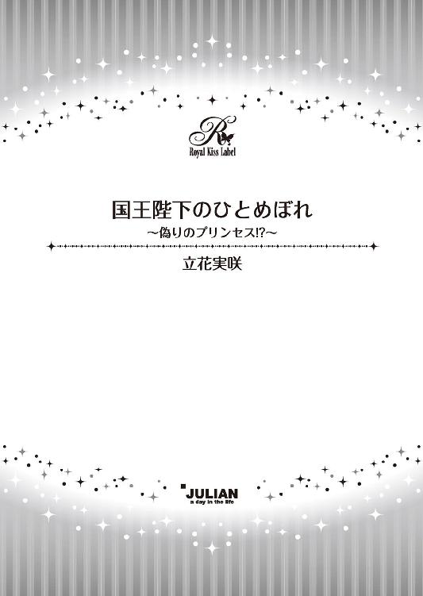
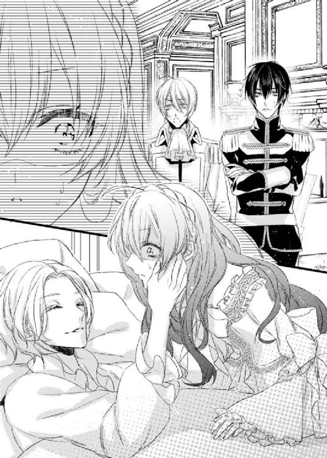

| 国王陛下のひとめぼれ ～偽りのプリンセス！？～【SS付】【イラスト付】 (ロイヤルキス文庫) | |
| 立花実咲 | |
| (2015) | |

この物語はフィクションであり、実在の人物・団体・事件等とは、いっさい関係ありません。
イラスト・旭炬
ＣＯＮＴＥＮＴＳ
第１章 二人の王子
第２章 いつのまにフィアンセ!?
第３章 いつわりのプリンセス!?
第４章 媚薬の受難
第５章 作戦失敗......!?
第６章 色褪せぬ恋
最終章 ディア・マイ・プリンセス
十七歳を迎え、社交界デビューを済ませたばかりの公爵令嬢リゼット・アーレンスに、吉報が舞い込んできた。その内容は、カルディアナ王国が隣国リシュタイン王国と友好条約を交わす式典への参加である。まだ九歳の幼いマーレイン王女に代わって、ぜひ王子とともに式典の場に華を添えてほしいとのこと──。
「私がお役目を？ おにいさま、それはほんとうに？」
庭に咲いている真っ赤なケイトウの花を摘んでいたリゼットは、夕陽を映しこんだような紅茶色の瞳を輝かせて、兄のユージィンを見上げた。
「花盛りのおまえが、もっともふさわしいだろう、と陛下がご判断なさった」
そう言い、ユージィンはリゼットを邸に招き入れ、国王から直々に預かったという手紙を差しだした。
さっそくリゼットは金色の封蝋が押された手紙をドキドキしながら開き、その一字一句を目で追った。文面には式典の日程や内容が綴られてあり、最後に──リゼット・アーレンスを友好条約式典の特別親善大使として任命スと結ばれてあった。
「本当だわ......特別親善大使ですって」
リゼットは思わずその文字を指でなぞった。
カルディナ国王、エヴァンジール三世は、ユージィンとリゼットの伯父だ。即ちハインツ王子やマーレイン王女とは従姉妹である。国王は七人兄弟なので、王室には年頃のやんごとなき女性が他にもいるのだが、その中から式典の役目を与えられることはとても光栄なこと。とくに外交官の中から任命される親善大使の補佐である特別親善大使に選ばれるということは、貴族の女性にとって大変な名誉なのだ。
リゼットの兄ユージィンは、父が亡くなったあと、グラントリー公爵の家督を継いだ。妹の面倒を見ながら現当主として責任を持って領地を治めているだけでなく、外交政策の重鎮として王室から頼りにされている存在だ。今回リシュタイン王国との友好条約にこぎつけられたのも、外交官であるユージィンが一躍かったという話を聞いていた。リゼットが特別親善大使に選ばれることができたのは、まぎれもなくユージィンの功績のおかげだろう。
戴冠式や生誕祭などをはじめ数多くの式典があるが、社交界デビューをしていない少女は、王女を除いて参加資格がもらえない決まりがあった。つまり友好条約セレモニーは、リゼットにとって初めての式典である。
しかも今回は隣国リシュタイン王国との調印式。マーヴェラス大陸に七つある国のうちもっとも近い位置にありながら、長年距離を保っていた隣国との友好条約といったら、とりわけ大事な式典になるに違いない。
「とても光栄なお役目だけれど、私で大丈夫かしら？ おにいさまの足を引っ張らないか......それだけが心配よ」
外交官として優秀な兄からもらった貴重な役目をぶち壊しにするわけにはいかない。
「リゼット、そんなに肩肘を張らなくていいんだよ。特別親善大使の名のとおり、式典に華を添えることが最も大事なことなのだから。もちろん、私がおまえの傍にいるんだ。心配することはない」
ユージィンは朗らかな微笑みを浮かべ、妹のやわらかなストロベリーブロンドをやさしく撫ぜる。しかしリゼットは改めて文章を隅々まで読んで、不安げに表情を曇らせた。
友好条約の式典は二回。古くからの慣習によって行われる予定だ。まずはリシュタインがカルディアナを来訪し、その一ヶ月後、今度はカルディアナがリシュタインを訪れることになっている。
両国が位置するマーヴェラス大陸には他に五つの国があるが、勢力的にも面積的にも湾岸に位置したリシュタイン王国の方がカルディアナ王国よりも優れた位置にあった。また農牧業が市民の生活の基盤であるカルディアナに比べ、常に異国との貿易業が盛んなリシュタインの方がずっと都会だ。
向こうからしたら公爵令嬢という身分にあるリゼットも田舎娘にしか見えないかもしれない。もとよりリゼットは貴族令嬢であるにも関わらず、馬に跨って草原を駆け抜けるような自由闊達な少女である。礼儀や作法はわきまえているが、公爵令嬢としては少々頼りないところがあり、華を添えるという点では、他の令嬢の何倍も努力をしなくてはならない。
調印式、舞踏会、競技会、お茶会、晩餐会、夜会......三日間の滞在中のおもてなしを考えると、やはり不安だ。
ユージィンがいてくれて、周りの侍従たちが準備をしてくれるとわかっていても、相手は友好条約を結ぶ貴重な人物なのだから、リゼットのような田舎令嬢の稚拙な行動で、そそうがあってはいけない。
「初めての舞踏会ではお兄様の足を踏んでしまって転ぶところだったわ......そのあとも上手に踊れた記憶がないもの」
「ああ、そんなこともあったね。しかし、かえって緊迫した空気を和ませるかもしれない。私はおまえのそういうところをかっているんだが」
「そんなこと言って、田舎の国だって見下されてしまったら大変でしょう？」
「実際そうなのだから、なにも見栄を張ることはないだろう。へんに空回りするより、ありのままのおまえでいてくれたほうが、推薦人の一人である私としてもずっと助かる」
むぅと唇を尖らしかねない様子のリゼットに、ユージィンは笑ってごまかし、話題を変えた。
「外交の場はたいてい外務大臣が秘書官や護衛を連れ、ひとつの使節団として来訪するものだが、今回はとりわけ大事な友好条約ということで、王室から二人の王子が一緒にみえるそうだよ。手紙にあるとおり、滞在期間は三日間。その間、我が国の王子と、リシュタイン王国の二人の王子たちの接待係を......リゼットと私が中心になって担当する。いわば橋渡し役だね」
「二人の王子殿下......。お会いしたことないけれど、どんな方なのかしら？」
「大丈夫。きっとおまえなら仲良くなれるよ。そうだ、新しいドレスを新調しなくてはならないね。さっそくこれから仕立屋に連絡を入れておくよ。それと、おまえが案じているように家庭教師にダンスのレッスンを増やすように伝えておこう」
ユージィンはおおらかにそう言って慰めると、「それじゃあ、私は王宮の方に戻らなくてはならないから」と言って、テーブルに置いてあった帽子をふわりと被り、邸から出ていってしまった。
リゼットは部屋に一人になってから、金色の封蝋に目を留め、はぁ......と長いため息をついた。
リシュタイン王国の麗しき王子たちについては、社交界デビューを果たした宮廷舞踏会の最中にリゼットも噂を耳にしている。一人は、温和な性格がうかがえるような甘い微笑みの似合う王子、もう一人は、涼しげな目元が凛々しく、精悍な顔つきをした凛々しい王子だとか。
年頃のレディたちがほんのり頬を赤く染めて、二人の王子たちのことを噂していたので、一体どんな人たちなのだろう、と密かに気になっていた。
（それよりも、普段以上にレッスンしておかないといけないわね......）
両国が和平を望み、友好条約を結べば、両国の経済が発展し、もっと人々の暮らしが豊かになるに違いない。そればかりか、今まで知らなかった世界が開けるかもしれない。森や高原に囲まれた景色はとても素敵だけれど、海を望める湾岸国家リシュタインの景色を見てみたいと思う。
リゼットは枕元に飾っていたケイトウに目を留めた。この花はリゼットの母が大好きで、今でも庭に咲く頃にこうしてよく摘んでいる。花言葉は『色褪せぬ想い』。
「お母様も若い頃はこうしてお役目を？」
緊張と不安と綯交ぜになった気持ちで、その日は興奮してよく眠れなかった。
それから当日を迎えて──。
リゼットは胸のあたりを押さえ、何度も深呼吸を繰り返した。おかげでコルセットを着つける前から過呼吸気味になってしまい、慌ててメイドが気付け薬をもってくる一幕もあったほどだ。
心配したユージィンが時間を見計らいつつ、リゼットの部屋を訪ねてきた。
「リゼット、そろそろ準備はいいかい？」
ノックの音と重なるように、邸の外に馬の蹄の音が聞こえた。どうやら王宮から迎えの馬車が到着したらしい。
（いよいよね......）
一気に緊張が漲る。リゼットのいる部屋の窓から下を覗きこんでみると、立派な箱馬車が待機する様子が映った。
「ええ。お兄さま、支度は済んだわ」
返事のあとメイドにドアを開けられ、ユージィンが入ってくる。彼は、妹の美しいドレス姿に目を細めた。
まるで春に咲く薄桃色のプリムローズのように鮮やかなドレスは、あどけない少女の顔立ちをより華やいで魅せてくれている。
華奢なデコルテを大胆に広げた胸元に対し、パイピングの入った可憐な袖口はほっそりとした腕を愛らしく飾り、腰の周りは細やかなギャザーが入り、女性らしいくびれを演出していた。流行のシフォン素材や精緻な刺繍が施されたスカートはふんわりと自然に広がり、とても軽やかで心地よい。
ドレスに合わせた白鴨の靴はぴかぴかのエナメルを塗られ、袖の長い手袋には薔薇のワンポイントがつき、リゼットのふんわりとした長い髪にもお揃いの花飾りがつけられている。耳に揺れる真珠のイヤリングや胸元を飾るネックレスもすべて新しく揃えたものだ。
「リゼット、最高に似合っている。やはりおまえは磨くほど輝くね......とても綺麗だよ」
社交辞令ではない、兄の感嘆した様子に、リゼットは頬を赤らめ、はにかんだ。
「お兄さま、私のために、こんなに素敵なドレスを用意してくださってありがとう」
リゼットが礼を言うと、ユージィンは満足げに微笑む。
「おまえのためなら何も惜しむことなどないよ」
さあと差しだされたユージィンの腕にいざ掴まろうとしたその時。
そわそわした足取りだったからか、さっそくつまずきそうになってしまい、リゼットは慌てて抱きつくような格好になってしまった。
「きゃっ......ご、ごめんなさい」
二人は顔を見合わせ、リゼットがバツの悪い顔をすると、ユージィンは鷹揚に笑った。
「ご令嬢たちが大騒ぎしているそうだが、きっと今のリゼットのような状況なのだろうね」
ちらりと意味深な視線を向けられ、心の内を見透かされたような気がして、ドキッとする。
「私は、別に王子殿下の件で浮かれているわけではないのよ？ 特別親善大使として、しっかり身を引き締めなくちゃならないわ」
「私は何も言っていないよ」
ユージィンはリゼットの言い訳を軽くあしらい、二頭立ての馬車の前へと案内した。既に侍従が巻絨緞を敷いてくれ、出発の準備は万端だ。
上質な燕尾服を着た王宮執事が、二人の前で恭しくお辞儀する。
「グラントリー公爵閣下、王宮よりお迎えに参りました。予定時刻より少々早めに到着しましたが、ご準備はよろしいでしょうか？」
「ああ、むしろ遅いぐらいだよ。リシュタイン王国の王子殿下に早くお会いしたいと、はしゃいでいるようなのでね」
再びちらり、とユージィンはリゼットを見る。
表面上は気にとめていないフリをしていても、本心では二人の王子と対面するのが楽しみで胸が躍っていることなど、兄にはすっかりお見通しのようだ。
「も、もちろん、我が王国のハインツ王子殿下に、一番にお会いしたく思っておりますわ。マーレイン王女殿下とのお茶会も楽しみにしています」
声が上擦ってしまい、体裁を整えるために、にっこりと笑顔でごまかす。
「さようでございますか。きっと殿下もお喜びになりましょう」
王宮執事は端整な顔を朗らかに緩めて、中へどうぞと案内してくれる。
（もう、おにいさまったら......）
リゼットはユージィンと共に馬車の中にあがり、扉が閉まるのを見計らって、兄を非難した。
「おにいさま、これ以上へんなことをおっしゃらないでくださるかしら」
「恋とは、意識をすることからはじまるものだよ。妹を見初めてもらえはしないかと、私からの餞別さ」
性懲りもなくそう言いだすユージィンに、リゼットは肩を竦める。
恋はしたいと思うけれど、まずはこの大役を果たすことが先だ。
（私は特別親善大使......なのよ。浮かれていられないわ）
リゼットは頭の中に浮かんでいる二人の王子の存在を打消し、呪文のように繰り返した。
午前十時、宮廷一の広さを誇る神殿の間に、宮廷楽団による華々しいファンファーレがなり響く。カルディアナ王国とリシュタイン王国の友好条約を結ぶ貴重な式典がはじまった。
リゼットは姿勢をすっと伸ばし、優雅な立ち居振る舞いを意識することを心がけた。
兵隊の行進、国王から歓迎の言葉、来訪したリシュタイン王国から外務大臣の挨拶、と順を追い、両国の友好条約をたしかなものにするべく調印式へとうつっていく。
そんな中、リゼットの視界にちらちらと二人の王子の姿が幾度となく入ってきて、好奇心がそそられる。
調印式がはじまると、国王陛下の玉座から向かって右側にカルディアナ王国の者たちが位の順に整列し、左側にリシュタイン王国の者たちが同じく整列した。リゼットとちょうど対面するところに二人の王子がいる。兄のニコラス・レンバー・クラインと弟のカイル・グランツ・クラインだ。金の肩章、勲章、略綬をそれぞれまとった煌びやかな彼らの盛装姿はとても豪奢で、彼らの立ち居振る舞いは王族に相応しい気品に溢れていた。
噂通りにとても雅やかで麗しく、王子としての貫録に満ちている。そんな二人のうちリゼットは、艶やかな黒髪から覗かせている凛とした眼差しをしたカイル王子の精悍な雰囲気に一目で心を奪われた。
意思の強そうな凛々しい眉、黒曜石のように輝く瞳、羨ましいぐらい高い鼻梁や、きりっと引き締まった唇。なにより一分の隙もないような背筋の伸びた立ち居振る舞いはほれぼれしてしまう。
調印が無事に締結し、賛同の拍手が巻き起こったとき、リゼットはハッとして前を向き直した。
（私ったら......大事な式なのに......何を考えているのかしら。いけないわ）
「おまえはカイル王子に夢中のようだね」
隣にいたユージィンが耳打ちしてきて、リゼットは飛び上がるほど驚いた。あまりに夢中になりすぎて兄の存在ですら霞んでしまっていたらしい。しかし特別親善大使ともあろう人間が、一人の男性を贔屓目で見ていたなど、肯定するわけにはいかない。
「わ、私はただ......兄弟なのに、あまり似ていないから気になっただけよ」
リゼットとユージィンは顔の造作が亡くなった両親のそれぞれを受け継いで兄妹そっくりだ。対して、ニコラスとカイルの二人はあまり似ていない。
どちらも端整な容姿をしているが、髪の色や目の色をはじめ、正反対の印象がある。ニコラスは金の髪に夜空に輝く月のような琥珀色の瞳をしていて、なだらかな眉や少し目尻の下がった双眸や微笑みの絶えない柔和な印象から、噂でいわれていたとおり、甘い雰囲気が魅力の男性だ。
同じ両親から生まれた子でも髪と瞳の色がそれぞれ違うことはあるが、どこか似ている雰囲気はあるものだ。二人の王子が兄弟といわれても、すぐにはピンとこないかもしれない。
「ああ、おまえに説明するのを忘れていたね。私は公務で視察に向かったとき、国王陛下に直接お会いしたことがあるが、兄のニコラス王子は国王陛下にとても似ていて、弟のカイル王子は亡くなった第二夫人である母親似のようだね」
「おかあさまが違うということなのね」
「ああ、二人は異母兄弟ではあるけど、とても仲が良いらしい。とくに外交役として諸国との交渉に動いているのは、カイル王子だ。私も今回の友好条約の件ではいろいろと細かい交渉ごとに頭を悩まされた。とても優秀な人物だよ」
本当の兄弟ではなく、義兄弟であることを聞かされ、なるほどと納得する。
二人が噂話をしている最中、不意にカイル王子と目が合ってドキッとする。
──が、ふいっと顔を背けられ、リゼットはショックを受けた。
「まあ、恋はそう簡単にうまくいくものではないからね」
ユージィンがくすくすと笑い、やんわりと宥めてくる。そういう彼はというと、女性から言い寄られない日はない。端整な顔立ちをしていることはもちろん、常にゆったりと構え、落ち着いた大人の色気に溢れているからか、年上の女性と恋の噂をされることが多い。公務では有能であるが、夜の顔は少し違うようだ。社交界の噂では見初めた女性とは一夜限りということもあるらしく......そのあたりはリゼットには理解できない話だった。
（お兄さまと私の方がずっと似ていないかもしれないわ）
リゼットは心の中で苦笑するのだった。
調印式が終わると、次に舞踏会の時間へと移った。
式典の間に宮廷舞踏会への招待状をもった貴族たちが順に検問を受けており、城の正門から正面玄関へ繋がるアプローチには、馬車の列が途切れないほどに並んでいた。
舞踏会のために大広間が解放されている。その手前にある控室と待合室には、既に着飾った紳士淑女が溢れていて、皆がおしゃべりに夢中だ。
料理と音楽と歓談にあふれた盛大な祝宴は、このあと夜通しずっと行われることになるだろう。王と王妃の座る高壇の傍には、諸国の賓客や都市の市長などが駆けつけ、リシュタインからやってきた二人の王子や使節団の代表に挨拶をしていた。
リゼットはユージィンの腕に掴まり、来賓に対して挨拶し、笑顔を絶やさないように気を配った。しかしだんだんとその表情も強張ってきてしまう。
式典以上に舞踏会の方が緊張する。また社交界デビューした日のように失敗したら......と脳裏をよぎったのだ。
「リゼット、顔色が悪いようだよ。大丈夫かい？」
ユージィンが心配そうに顔を覗きこんできたので、リゼットは慌てて笑顔をとりつくろった。
「大丈夫よ。今から具合が悪くなっていたら、とても三日間なんてもたないもの」
自分に言い聞かせるようにリゼットは言った。
「そうだね。じゃあ、気分転換するために私と予行練習するかい？」
ユージィンは恭しく右手を腰まで下げ、後ろで足を交差させ、リゼットの手の甲をやさしく持ち上げる。ダンスを申し込む合図だ。なんだかんだいっても、頼れる兄なのである。
「さあ、リゼット、気を楽にして。おまえが楽しんでいる姿も、立派な公務の一つだよ」
「え、ええ」
なにをしてもそつがない優雅な兄の手ほどきでダンスはなんとかついていけているものの、ずっと兄妹でべったりしているわけにはいかない。ユージィンの手は三回目の曲で離れた。
「......特別親善大使として、おまえは二人の王子殿下と踊ってみせなさい。いいね？」
ユージィンはそう言ってリゼットに目配せをして、別の女性とダンスを始めた。
（二人の王子殿下......）
リゼットはカイルとニコラスの姿を探した。すると、カイルとばちっと目があい、ドキッとする。しかし既に彼は大勢の美人な令嬢たちに取り囲まれていて、こちらから近づいていける雰囲気ではない。
レディたちは皆ドレスのアンダースカートの下にいくつもペチコートの重ね、どれほどドレスに美しいボリュームが出せるか競い合っているが、今日は一段と気合が入っているようで、かきわけていける隙間もないぐらいだ。それに皆がダンスで踊りながら進んでいくため、流れに乗せて動かなくては邪魔になってしまう。
（とにかく、どこか空いているところへ行かなくちゃ......）
ワルツの輪の流れに乗って動こうとしたその時、横合いからすっと手を差しだされ、リゼットは弾かれたように顔をあげた。
「可愛らしいお嬢さん、一曲いかがですか？」
ニコラス王子がやさしく微笑んで立っていた。まるで琥珀色の月がその場できらきらと輝いているかのような華やかさに、目がちかちかする。やはり王子は品格が違うものだなとリゼットは思う。それから慌てて身を整え、かしこまって挨拶をした。
「ニコラス王子殿下、本日はお会いできて光栄です」
「君の名は？」
「リゼット・アーレンスと申します。この度は特別親善大使として、心から歓迎申し上げます」
リゼットは上半身をそのままに左手を右手の上に重ね、腰を落として礼をとる、カルディアナの正式な挨拶の仕方だ。ややぎこちない感じになってしまったが、ニコラスは気を咎めることなく、リゼットの手を引き寄せた。
「そう、君が特別親善大使なんだね。では、レディ・リゼット、今日という素晴らしい日に、ぜひ僕と一緒に踊っていただけますか」
「はい。もちろん喜んでおうけします」
リゼットは笑顔を咲かせて言った。
緊張するけれど、ユージィンが言っていたように、特別親善大使として、王子をはじめリシュタイン王国の人たちには、心地よい時間を過ごしてもらわなければ。
「先にお話ししておきますわ。私、あまりダンスは得意ではないのです。失礼がありましたらごめんなさい」
リゼットは正直に告げた。ユージィンが助言してくれたように、ヘンに気取ってしまうよりも、こうして打ち解けた方がいいと思ったのだ。
「こちらこそ、あまり得意ではないので、レディを転ばせないように気をつけます」
ニコラスはそう言って、微笑んでくれた。
二人が仲良く踊っていたところ、いつのまにか国王陛下をはじめ王家の者たちの視線が集まっており、友好のために開かれた舞踏会が、和やかな空気に包まれていた。ユージィンがリゼットにウインクをする。
（こんな感じでいいのかしら？）
やさしくエスコートしてくれるニコラスのおかげで、ゆっくりと力が抜けていく。リゼットと違ってニコラスの場合は謙遜である。さすが王子ともあって社交の場に慣れているのだろう。ステップはより軽やかになり、少しずつ楽しくなってきた。
そうして楽しいという気持ちの余裕が生まれつつあった頃、曲が終わっていくのを名残惜しく思うと、突然ニコラスから、次のパートナーの指名を受けた。
「では、弟のカイル王子とも、よろしければ」
カイルの名前にドキンと鼓動が跳ねる。
ニコラスは恭しく挨拶をし、リゼットをカイルのもとに案内する。
やっと楽しいと思えるようになったところ、カイルの前に連れてこられ、再びリゼットの表情がぎこちなく強張る。その原因は、境界線を踏み入れるなといわんばかりのカイルの堅い雰囲気だ。どう考えても彼の場合、にこやかにダンスを......という感じではない。
（もしかして......さっき囲まれて疲れてしまったのかしら？）
リゼットがおずおずと礼をとって腰を落としたところ、カイルは無言のまま手を引き寄せてきて、リゼットをエスコートしはじめた。
ニコラスとは明らかに違う、力強く熱い手にドキっとする。やや強引な手に導かれ、胸の鼓動がドキドキと高まる。どことなくぶっきらぼうで粗野な感じがするけれど、強引さが男らしくて頼もしく感じる。けれど、相変わらず彼は精悍な表情を崩さず、友好的な雰囲気は微塵もない。リゼットの見上げる位置にちょうどカイルの顔があるのだが、なんとなく彼の怜悧そうな雰囲気と相まって威圧感を抱かせていた。
ニコラスは終始笑顔で対応してくれたけれど、カイルの場合はにこりともしない。
（もしかして私、嫌われているのかしら......？）
しょんぼりとして手の力を緩めた矢先に、曲に合わせてターンをしたあと、がっしりとホールドされる。
力強く抱き寄せられた瞬間、吐息がかかりそうなほど近くにカイルの存在を感じて、リゼットの顔が、かーっと薔薇色に染まる。
「あ......」
思わず声が出てしまい、慌てて手袋の先を唇にあてがった。
すると、カイルはふっとため息をついてリゼットの耳の傍に唇を寄せてきた。
「俺はいつもこうだ。必要以上に気にしないでくれ」
耳を滑っていく低い声にドキドキしてしまい、リゼットはうろたえた。
「い、いえ......ただ、あまりダンスが得意ではないので、失礼なことをしていないか、それだけ心配だったのです」
あたふたと言い訳をするリゼットに、ほんの僅かカイルはふっと皮肉げに口の端をあげた。
「レディ・リゼット、あなたは少し感情がおもてに出すぎる。世の中、それが命とりになることもあるんだ。気をつけるといい」
忠告を受けてしまい、リゼットは身を硬くする。
「言っている傍から......わかりやすい人だ。外交に関わる特別親善大使がこれでは......人選を間違えたのではないか？」
カイルが見下すように言うので、リゼットはムッとするが、彼は勝ち誇ったような視線を向けてきた。きっとまた顔に出てしまっていたに違いない。ふっと笑い声が零れてきて、リゼットはカイルの方を向けなくなってしまった。
（私......からかわれたのかしら......？）
そうこうしているうちにダンスは終わり、レディたちが夢見るような時間を過ごすこともないまま、リゼットはユージィンのもとに帰り、兄と二人揃って、改めてニコラスとカイルにおもてなしの挨拶をした。
カイルの視線を感じつつ、リゼットはほんのりと頬を染めたまま、彼らから離れる。
「少しずつ打ち解けていけばいいよ。まだまだ時間はあるのだから」
ユージィンのフォローさえもどこか上の空で、さっき耳に感じたカイルの声を思い出す。胸の鼓動がドキドキと早鐘を打ったまま、いつまでも醒めていかなかった。
リシュタイン王国御一行様の滞在期間は三日間。
二日目の今日は、王家や貴族たちとの親交を深めるための行事が色々と用意されている。
まず昼から乗馬に競馬。午後からはお茶会を開き、その後、宮殿の協議の間でジュ・ド・ポームといい、ラケット状の道具を用いてボールを打ち合う球技などのスポーツを愉しみ、夕方になったら城下町の視察に案内し、日が暮れたら晩餐会、そしてまた夜会──と息をつくまもないほど忙しい。
国王が秘書官を伴い、リシュタインの外務大臣をはじめとする使節団を交えて会食している間、王子らの案内役を任されたユージィンとリゼットは、競馬場へと出かけることになった。
馬車に揺られながら、リゼットは後方を気にして言った。
「なんだか......どんどん増えている気がするわ」
広大な城の敷地の中を移動するには馬車がいるのだが、ユージィンとリゼットが馬車に乗って移動すると、王子たちを乗せた馬車のあとをさらに追いかけるように他の馬車がついてくるのだ。
今の時間、大広間は貴族たちのために開放されており、自由な時間を過ごせるのにも関わらず、一台、また一台、とこちらについてくる。全員が移動してくるのではないかという勢いだ。しかも我先にと列に割り込む馬車にはらはらする一幕もあり......近衛兵が列の脇につき、目を光らせているという異様な状況だった。
舞踏会に参加している貴族の令嬢たちが、麗しい王子や貴公子たちの姿をひとめ見ようと必死になっている様子が窺える。美しさを競いあいつつ、相手を蹴落とすような発言をし、上品に会話をしつつ暴言のようなものを吐いたり......などと、熾烈な争いが繰り広げられていた。
リゼットの心を読むかのように、ユージィンは言った。
「王子たちをひと目見ようというよりも、ひと目でも映っておこうという感じだね。今回の友好条約がきっかけになったのさ」
その言葉には他の意味も含まれているように感じた。
「どういうこと？」
「二人の王子を目当てにレディたちが詰めかけているんだよ」
「ええ、それは見ればわかるけれど......」
ユージィンは声を潜めて続けた。
「あくまで噂にすぎないが、実は王子たちの花嫁探しも兼ねているという噂だよ」
「えっ......そうなの？ カルディアナから花嫁を......？」
「まあ、噂だけれどね。リシュタイン王国は、まだ世継ぎが正式にどちらになるか決まっていない。それ故に王太子という身分をもうけていない。もちろん候補者は第一王子であるニコラス王子、次いで第二王子であるカイル王子だ。しかし、どうやら色々と内情が複雑のようでね、それぞれを推す勢力があるらしい。だからこそ、どちらかの婚約者の存在が大きな決め手になるといわれているんだ。そこで、王になるための花嫁探しさ」
「自国ではもう花嫁探しはしたのかしら？」
「カルディアナから花嫁をもらうことに意味があるのさ。じきに国王となる王子が今カルディアナから花嫁を迎えれば、今後はよりいっそう結びつきが強くなるだろう？ それに、こちらの令嬢たちも大国に憧れている者が多くいる。友好条約を結んだからには戦争の心配などせずに安心して嫁ぐことができると思っているんだろう」
なるほど......とリゼットは令嬢たちの必死になっている様子を眺める。
「実は、おまえが中座しているとき、大広間で王子のとりあいがあったらしく、ひと悶着あったようだよ。さて、我がカルディアナ王国において、国王陛下の自慢の花であり、我が愛しい妹よ、おまえも見初めてもらえるよう、がんばりなさい」
にこり、とわざとらしい笑顔を向けられ、リゼットは顔を真っ赤にする。
「な、何を言うの。わ、私は......そういう気持ちでここにいるわけじゃないって言ったはずよ」
必死に訴えるリゼットに対し、ユージィンは愉しげに口元を緩める。
「そうかい？ 昨晩はなんだか夢を見ているみたいな顔で、ダンスを踊っていたじゃないか。さては、どちらかと恋に落ちてしまったのではないかと案じていたんだが」
くすくすと耳障りな笑い声に、リゼットはますます声を荒らげて反論した。
「おにいさま、いい加減に私をからかうのはやめてくださらない？ 私はおつとめを果たさないとならないのよ？」
ユージィンは肩を竦めた。
「そんなにむきに怒ることないだろう？ 可愛らしいと褒めているのだから。もしもそういうことになれば、私は全力で二人の関係を応援させてもらうよ」
決めつけたようにユージィンが言うので、リゼットはため息をつく。
「特別親善大使ですもの。色眼鏡で見られたらよくないでしょう」
「そんなことはないさ。おまえは真面目な子だね。外交を担う者として、王子の気持ちを射止めることができたなら、大したものじゃないか」
すっかり花嫁候補に推薦するつもりでいるユージィンに危機感を抱いて、リゼットは彼を窘めた。
「お兄様、もう、その話はいいわ」
兄妹が仲睦まじく（......少なくともユージィンにとっては）過ごしていたのも束の間、競技場の入り口となる放牧場の厩舎がいよいよ見えてきた。
そこは、普段ならば王室の者たちが乗馬訓練をしたり馬の育成をしたりする場所である。社交界シーズンを迎えると、こうして来賓たちと乗馬や競馬を楽しむための特別な場を設けられるのだ。乗馬や競馬が行われている間、女性たちは外で見学をするか、待合室のサロンで待つことになる。
ユージィンにからかわれてしまった直後に王子たちを目にしたら、なんだか余計な意識をしてしまいそうで気まずい。できるならサロンで待っていたいリゼットだったが、接待を任されている身なのだから、そういうわけにはいかない。
馬車から降りた人々がサークルの外に集まってくる中、さっそく悠々と黒馬に跨ったカイルとバチっと目が合ってしまい、リゼットは慌てて視線を逸らした。
カイルの怜悧そうな瞳は、心の中まで透けて見られてしまいそうで、じっと見つめていられない。彼が耳元で囁いた意外に甘い声や、強引に抱きよせられたときの感触が、じわじわと蘇ってくる。意識した途端、たちまちゼンマイ式の懐中時計が急に時を刻みだしたかのように、ドキドキと早鐘を打ちはじめ、ときめきが込み上げてくる。
（どうして私......こんなにドキドキしているの。ダメよ、忘れなくちゃ......）
なぜかカイルとは頻繁に目が合う。もしかしたらこちらがヘンに意識していることを察知しているのかもしれない。
（ダンスのときの忠告はそういう意味だったのかしら......？）
もしカイルに意識している気持ちを知られているのだとしたら、恥ずかしい。これ以上、気持ちを読まれないように気をつけなければ......とリゼットは改めて身を引きしめた。
リゼットは兄ユージィンの姿を目で追った。相変わらず女性たちの熱い視線が寄せられているのはさすがだ。女性を不快にさせないように断る術も備わっている。ニコラスとなにか楽しそうに話をしている様子だ。我が国のハインツ王子もまたその輪に入った。たちまち麗しき貴公子たちの美しい画ができあがり、彼らを見守る女性たちの瞳はよりいっそう蕩けてしまっている。
そこへカイルも加わり、よりいっそう華やかな友好の場になるかとおもいきや、彼は一人で馬を走らせ、我関せずといった感じだ。こんな大事な場だというのに、自分から友好を深めようとする気はない。リゼットはそんなカイルの態度がどうしても気になってしかたなかった。
（普段からあんな感じなのかしら。なにか失礼なことでも......）
『俺はいつもこうだ。どうか気にしないでほしい』
と言われたことを思い出し、ため息をつく。もしかしたら兄であるニコラスを立てて、任せているのかもしれないし、こうして考えすぎることも、彼にとっては失礼なのかもしれない。
その後、王子や貴公子たちの競馬がはじまると、女性たちの熱もよりいっそうあがる。お目当ての男性が勇ましく勝ちあがっていく様子を見て、おおいに盛り上がっている。
リゼットも日傘を差しながら、普段は見られない競馬に夢中で見入った。競馬の最終戦は、王室同士の戦いとなった。ニコラスとハインツの接近の戦いのうち、カイルが間に割り込む形となり、あっと歓声があがるが、追従することを許さずに走り抜けたニコラスが見事に優勝を飾った。
悠然と闊歩する馬に乗った男たちを眺めながら、リゼットは優勝したニコラスがこちらにやってくるのを見て、拍手を送って笑顔で出迎えた。カイルとハインツの様子を見たところ、ここはやはりニコラスを立てようという気持ちがあったのではないかと察せられた。
ふと、リゼットはニコラスの乗っている馬のことが気にかかった。なにか様子がおかしい。ひどく興奮した様子で、落ち着きなくぶるぶると頭絡を震わせている。レースが終わった疲労からというわけではなさそうだ。やたら落ち着きなく土を蹴っている。
（やっぱり、あの子......ちょっとヘンだわ）
「ニコラス王子殿下、すぐに馬を下りてください」
不穏な様子を察して、リゼットは声をかけた。が、皆が歓喜に沸いていて、なかなか割って入れない。
「ちょっと、......通して......」
「なによ、あなた割り込みしてこないで！ いいところなんだから」
どんっと押しだされ、リゼットはよろめく。
「そんな場合じゃ......」
「きゃあ、こちらに手を振っていらっしゃるわよ」
「もっとお傍で話してみたい。今夜こそ声をかけるわ」
「あら、私だって」
きゃあきゃあとレディたちが声をあげるので、ますますリゼットの声はかきけされてしまう。
次の瞬間、馬が苛々と土を蹴り、身体をぶるんっと大きく揺らした。まわりは馬が多少興奮しているのだと思っているのだろう。競馬が終わったあとの熱気で少しも異変に気づいていない。
あれでは振り落とされてしまう。リゼットは思わずサークルの中に潜り込んで、再び声を張り上げた。
「ニコラス王子殿下、今すぐ馬からおりてください！ そのままでは危険です！」
リゼットが声をかけると、こちらに気付いたニコラスは笑顔で手を振る。
（だめだわ。気づいていないんだわ......お兄様はどこにいったのかしら。厩番を呼んでこなくちゃ）
ニコラスは体勢を整えてこちらに進むように命じているが、馬はますます興奮したらしく、急に暴走しはじめた。
「こら、落ち着け......どうしたんだ」
馬が本気を出して暴れれば、いくら鍛えた体躯をした男性でもそうそう太刀打ちできるものではない。リゼットの不安は的中した。目の前で、ニコラスが馬から滑り落ちる、その瞬間、女性たちの悲鳴が一斉にあがった。
「きゃあああ」
振り落とされたニコラスを受けとめようと、リゼットは衝動的に腕を伸ばした。が、間に合わない。すぐ目の前でニコラスが転落する。リゼットの顔からさっと血の気が引いた。
「誰か！ 早くきて！ 大変なの！ ニコラス王子殿下が！」
リゼットはニコラスを抱きよせ、ぐったりと気を失っている彼に必死に声をかけた。
「王子殿下！ しっかりなさってください！」
場は騒然となった。暴れ馬を押さえるために護衛たちが一挙に駆り出され、ニコラスのもとに急ぎユージィンとカイルが駆けつけた。
「......兄上」
カイルが跪き、ニコラスの様子をたしかめる。
「兄上、聞こえるか。聞こえていたら返事を！」
苦しそうな表情を浮かべたまま、応答がない。
「リゼット、おまえは離れて、今はへたに動かさない方がいい。カイル王子殿下、すぐに宮殿の方へ馬車を出します」
カイルは頷き、ニコラスの様子を引き続き見守る。リゼットはどうしたらいいのか混乱したまま、ニコラスを抱きとめておくしかできない。
──と、ニコラスの唇が開きかけ、リゼットとカイルは顔を見合わせた。
ニコラスの唇の動きに集中して、誰もが息を呑んだそのとき──。
「リゼット......」
譫言のようにニコラスが口を開く。うっすらと瞼が開かれていくのを見て、ホッと胸を撫で下ろす。
「よかった......殿下、意識はありますね？ 大丈夫ですから、すぐに手当をしますからね」
リゼットはとにかく声をかけつづけた。ニコラスの手が伸びてきて、リゼットの震える手をぎゅっと掴む。それは赤子が母に甘えるかのように頼りない力だ。
そこへユージィンの声が割って入った。
「さあ、すぐに宮殿へ」
リゼットの震える手に、カイルの手がそっと触れて、ハッと我に返る。
「あとは俺が兄上を運ぶ。おまえは大丈夫なのか？」
「はい......私は、とにかく必死で。でも、結局、間に合いませんでした。ごめんなさい」
「おまえのせいじゃないだろう。すぐに注意を引きつけてもらえたおかげで助かった。でなければ、馬に踏まれていたかもしれない」
カイルが励ますように声をかけてくれたおかげで、リゼットの方こそ正気に戻った。
それからカイルとユージィンがニコラスを馬車まで運び、一行は急いで宮殿へと戻っていった。
思わぬ事故が発生したため、午後から予定していたお茶会やスポーツは当然中止となり、城内は一転して張りつめた空気が漂っていた。せっかく友好条約のセレモニーをかわしたあとにこんな事態になっては、ただでは済まないかもしれない。そんな不安に包まれている。
急ぎ医師に診察してもらったところ、打撲や擦り傷はあるものの大事に至ることはなく、怪我の処置で終わったようだ。
医師が退室したあと、ユージィンとリゼットは共に肩の荷をおろし、ほうっと安堵のため息をついた。
「よか......た......」
その場で頽れそうになったリゼットへ、目を覚ましたニコラスが訥々と声をかけてきた。
「リゼット......君には礼を言わなくては。僕のために身を投げ出してまで......なんていったらいいか、助けてくれてありがとう」
「いえ、私は異変に気づきながら、結局は何もできなかったんです。自分の非力さをうらみました。ほんとうに......殿下の命に関わるようなことがなく、安心しました」
特別親善大使として任命された者がこんなことでは情けない。リゼットは自分を責めながら、涙で言葉を詰まらせる。
「泣かないでくれ、リゼット。僕の方が申し訳なかった。レディを前に浮かれて落馬するなどとは......本当に情けない話だ」
そう言い、ニコラスはリゼットの方に手を伸ばし、頬をやさしく包みこむ。
「大丈夫だよ。君と結婚するまでは死ぬわけにいかない。そんなやわじゃないさ」
──え。
安心したのも束の間。リゼットは目を丸くした。その場にいた誰もが驚き、弾かれたように二人を見た。ユージィンもまた妹と同じように目を丸くし、カイルに限っては表情こそ変わらないが、石膏で塗り固められてしまったかのように動きを止めている。
（今なんて......？ けっこん......って言ったの？）
リゼットは耳を疑い、ぱちぱちと大袈裟なほど瞬きをしてみる。するとニコラスはきまり悪そうにほんのり顔を赤く染め、額にはらりとかかる金髪を落ち着きなくかきあげた。
「ああ、ごめん。迂闊だった......これだから浮かれているというんだね。まだ正式に発表していないというのに、皆には申し訳ない。今のことは......もうしばらく知らないふりをしていてくれるかな？」
「あ、あのっ......」
リゼットは喉の奥にたまった疑問をひとつずつ咀嚼する。
（正式に発表って言った？ ニコラス王子が結婚？ 私と結婚......って、結婚!?）
「ええっ......私とニコラス王子が結婚......ですってっ!?」
思わずはしたないのも忘れて大声で叫ぶ。ユージィンとカイルは肩をびくっと揺らし、ニコラスにおいてはまだ照れたような顔をしている。
リゼットは思いきり自分の頬を抓りたくなった。
「あ、あああのっ......待ってください、どういうことなのか......」
リゼットはユージィンの方を振り仰ぎ、なんとか助け船を出そうとする。だが、それは伝わらなかった。瞳を輝かせ、妹の肩を抱いてくる。
「そういう話になっていたのですか。いや、それはなんとも大変よろこばしい。友好条約セレモニーの佳き日にそのような大切な報告が聞けるとは......」
ユージィンはすっかりその気になっている。
「おにいさま、待って」
少し離れたところで腕を組んでこちらを見守っていたカイルとバチっと目が合い、リゼットは必死に訴える。そうではないのだ、と。

カイルはニコラスに向かって声をかけた。
「兄上が無事ならばあとは医師に任せる。席を外したままでは心配をかけるだろう」
「ああ、悪かった。おまえにも心配かけた。使節団のもとに行き、状況を説明してきてほしい。僕は落ち着いたら国王陛下に謁見を申し込もう」
「御意」
彼はまるで忠誠を誓う騎士のように硬くそう返事をし、部屋から出ていった。
リゼットが混乱したまま状況を掴めずにいると、突然ニコラスがリゼットの手をむんずと掴み、慈しむように両手をそうっと握った。
「ああ、リゼット、君の身体に怪我がなくてよかった。大切な女性に怪我をさせてしまったなら、僕は一生後悔するところだった。死んでも死にきれないところだった。本当に身体は平気かい？」
「え、ええ」
リゼットは目を白黒させながら、頷く。
「それに、ドレスをこんなに汚して......今日の日のために誂えてもらたったのだろう？ 申し訳ない。君にぴったりのドレスを用意させてもらうよ」
（ど、どうなっているの......！）
リゼットはユージィンに目配せをするが、兄はいいからいいからと顎をしゃくってくる。しかし、何もいいことはない。誤解を解かなくては。
（おにいさま、そうじゃないのよ！）
ひとり慌てているリゼットを置いてきぼりにしたまま、ニコラスはなにか夢の世界に旅立っているようだ。吟遊詩人のようにつらつらと夢や希望を唄いだしそうな雰囲気である。
「君を早くリシュタインに案内したいよ。カルディアナの大自然には感銘を受けたが、我が国が見下ろす海の美しさを見せてあげたい。澄んだ青空に映える、琥珀色の海はとても素晴らしい。船旅はしたことがあるかい？ 鉄道で揺られるのもわるくない。ハネムーンはどこへいこうか。ああ二人きりで愛をかわしあう夜が、待ち遠しくてならない」
リゼットは真っ赤な顔で、口を挟んだ。
「あの、あのっ......待ってください、ニコラス王子殿下」
「二人のときは名前だけで構わないと言ったはずだろう？」
リゼットはぶるぶると顔を横に振る。
（ないないったら！ そんなこと言われてないわ......！）
しかしニコラスはリゼットの困惑した様子など目に入らないようだ。華奢な手の甲へと愛おしそうにキスをし、あまつさえ顎を引き寄せて、唇にまでキスをしかねない様子だ。
リゼットはさすがに目を剥く。
傍にいたユージィンはコホンと咳払いをし、くるりと背を向けてしまった。
「ま、待ってください、王子殿下。落ち着いて......」
ふいっと顎をそらし、なんとか唇の強奪は避けられた。
「......つれないな。兄上の前だからか。家族になるのだから、かしこまった挨拶は要らないよ。二人の仲じゃないか。マイ・プリンセス・リジー」
（プリンセス......っり、リジー......!?）
リゼットは本気で泡をぶくぶくと吐いて、倒れそうだった。
すっかりリゼットに執着しているニコラスをなんとか言いくるめて引き剥がし、待っている人たちに状況を説明するためにも一旦下がらせてほしいと、ユージィンを引き連れて医務用の部屋を出たリゼットは、声を極力潜めて言った。
「おにいさま、ちょっと」
「いや、おまえがまさか知らぬまにニコラス王子と恋仲になっていたとは......水くさいじゃないか」
ユージィンも魔法にかかってしまっているようだ。ニコラスの雰囲気が移っている。
「あ、あの、だからね」
「いや、早々に花嫁支度を考えなくてはならないね。今までで最高のドレスを仕立ててもらおう。王家御用達のお針子を今から押さえておかなくては。隣国とのロイヤルウエディングになるのだから、輿入れの準備はより豪華にしなくてはならないだろう。ああ、今からウエディングドレスを着たおまえを見るのが楽しみだよ」
夢見がちなレディが妄想を並べるかのごとく、次から次へと語りだすユージィンに待ったをかける。
「だから、聞いて。お兄様、気をたしかに！」
「気はたしかだよ。恥ずかしがることもないだろう？」
「ちゃんと説明させて。あのね、私、ニコラス王子と婚約なんてしていないわ。大きな勘違いなの！」
ユージィンは眉をしかめた。
「勘違いって......どういうことだい？」
さっきのニコラスの様子からすると演技をしているようには思えない。このとおりユージィンもすっかり信じてきっているし、カイルは興味なさげに早々と立ち去ってしまった。ただひとり、リゼットだけが困惑している。
「わたしの方が聞きたいわ。ニコラス王子とは今日初めて会ったのよ？ 向こうの情報だってお兄様から教わって初めて知ったわ。それにニコラス王子と会話をしたのはダンスの時だけよ。二人きりになったことだってないわ。なんだかさっきは......ニコラス王子の雰囲気に圧倒されて、訂正できなかったけれど......やっぱり、打ちどころが悪かったんじゃないかしら？」
リゼットが青ざめた顔で激しく動揺している様子から、ユージィンは本当に間違いなのであるとようやく信じてくれたらしい。打ちどころが......という言葉を聞いた途端、いつも温和なユージィンの表情が一瞬にして強張った。
「もしそうだとしたら、外傷よりずっと一大事だ。ニコラス王子の容態が落ち着く頃を見計らって、医師に直接聞いてみよう」
リゼットは頷く。とりあえず兄が信じてくれたことに対してだけはホッとした。
正餐の時間まであと少しの余裕がある。来賓のために開放されている大広間は、歓談の場となっているところだ。ユージィンが外務大臣の元を訪れて状況を報告したあと、大広間に様子を見に行ってくれたのだが、ニコラスの不在にかわってカイルが積極的に交流してくれていたらしい。
リゼットは控えの間で待機し、ユージィンが戻ってすぐ二人揃って医師を尋ねた。さっそくニコラスの状況を説明したところ、医師は俄かに信じがたいといった顔でうーむと唸り、首を傾げた。
「なるほど。一過性の健忘症というところでしょうか。しかし問題は......人の区別がつかなかったり、記憶の喪失ではなく、別の女性を婚約者であると勘違いしているということですね？ 外傷的なものは二～三日あれば十分に治るでしょうけれど......こればかりは時間の経過とともに様子を見るほかにはありませんね。えー記憶の損失となると、最低でも一ヶ月は様子を見る必要があります」
鼻の先にちょんと乗せた眼鏡で、医学書を捲りながら、医師はそう説明する。
「一ヶ月......そんなに」
リゼットはショックを受ける。明日には帰国しなくてはならないというのに......。
医師は言いづらそうに肩を竦めた。
「そうそう前例がないことですから......期間は断定できませんが」
落ち込むリゼットを尻目にユージィンは顎に手をあてがい、なにかいい策がないかと考えこんだ。
「明日には使節団の御一行がお帰りになる。理由もわからずに足止めをしておくわけにもいくまい。勘違いしたままの状況では......向こうに戻られたあとでも不都合だろう。どうしたものか」
あの情熱を注ぐようなニコラスの様子を振り返ると、たしかに放置していい問題ではなさそうだ。ぺらぺらと歌を唄うようにリゼットとの愛を誰かに打ち明けられてしまったら、大ごとになってしまうだろう。
そう考えたら、リゼットは居てもたってもいられなかった。
「私、正餐のあと、二人きりになる時間をもらって、誤解だってしっかり話をしてみるわ。きっと時間をかけて話せば、ニコラス王子だって信じてくれるはずよ」
いますぐにも飛び出していきそうな妹の肩に手をおき、ユージィンが待ったをかける。
「それならもういっそ、求婚を受けてしまったらどうだろうか」
ユージィンの提案にリゼットは唖然とする。
「なっ......こんなときに、何を言い出すの？ そんなわけにいかないでしょう？ ニコラス王子殿下は記憶を誤っているだけで、本当に私にプロポーズしたわけじゃないのよ」
それに、リゼットを婚約者と見間違ったからには、ニコラスには恋人がいた可能性だってある。それか周りが知らないだけで、花嫁候補となる女性を見つけていたのかもしれない。
「別の人と間違えている可能性だってあるわ」
もしそうだとしたら、その女性が哀しむではないか。まして王位継承者となるニコラス王子の相手なのだ。冗談を言って楽観視している状況ではない。
「たしかにそれもあるが、恋人はいないと言っていたよ」
「こっちで花嫁候補の女性を見つけたかもしれないわ」
リゼットは必死に理由を考える。ユージィンもだんだんと冷静になってきたようだ。
「それにしても、たったの二日で結婚まで決めるとは考えがたい。王位継承者となる方が相手をよく知らないうちに婚約するだろうか？」
「そうでしょう？ 私と結婚を誓ったなんて......おかしな話だわ」
「だが、ニコラス王子の記憶が違っているとしても、仮におまえじゃない誰かと出逢っていたとしても、この短期間というわけではないということになる。だいぶ前に知りあい、恋に落ちて......この友好条約でさらに愛を深めた、とも考えられなくない」
ユージィンはそう前置きしてから、リゼットが口を挟むまもなくつづけた。
「そして今の状況を考えてみよう。ニコラス王子の記憶がいつ戻るかはわからない。医師が言うように前例がないことだ。このまま記憶が完全に戻らない可能性もあるわけだろう？ 今のニコラス王子にとっての婚約者はおまえなんだ。大切な婚約者に手酷くされたらニコラス王子が気の毒ではないか」
「おにいさま......それっていうのは、記憶が戻るまで、私がニコラス王子の婚約者として演じろっていうことなの？ 嘘をついたり欺いたりすることは一番よくないことだわ。そんなことしたくないのに......」
リゼットは今度ばかりは兄を非難した。ニコラス王子の味方をするのではなくて、妹の心配もしてほしい。そういう意味も込めて上目遣いで訴える。
「リゼット、私だっておまえがかわいいよ。けして冗談で言っているのではないんだ。どうか怒らないでほしい」
やさしく髪を撫で、ユージィンはなんとかリゼットを諭そうとするが、リゼットはその気でない。
「ただでさえ、事故のことで気に病んでいるのよ？ 私がもうちょっと気にかけていたら......」
「あれは突発的な事故だ。おまえが気にすることじゃない。ニコラス王子が言ってくれたように、馬に踏まれなかっただけ、命拾いしたんだ」
「そうだけど、せっかくのもてなしの場で、怪我をさせてしまったのは事実よ？」
「もちろん、それは私も責任を感じている。ニコラス王子の容態を心配しているし、おまえの気持ちを弄ぶつもりではないよ。ただ、もしかしたらこの不思議な縁がきっかけで、お互いが幸せになれることもあるかもしれないと考えたんだ。友好条約を結んだ国同士、今後のためにもなるかもしれない。いうなら運命──だと」
ちら、とユージィンがリゼットの様子を窺う。なんだかいやな感じだ。
リゼットはすっかり膨れてしまい、腰に手をあてがってため息をつき、夫の浮気を追及するかのような険しい表情で兄を追及する。
「つまりおにいさまは、私に既成事実を作らせるつもり？ そうやって政略的な結婚を望んでいらっしゃるの？」
「いいや。友好的な結婚だろう。周りにしてみれば、花嫁探しをしていたという噂......それが事実だったというだけだ。そして、ニコラス王子がおまえを見初め、密かに恋をしていたが、隣国の情勢が不安定だった。この友好条約を機会にプロポーズして、二人はようやく結ばれ......ん？ それともおまえの心の中には別の......カイル王子のことが？」
ユージィンは捲し立てるようにシナリオを口にしたあと、リゼットの顔色を試すように見た。
リゼットは兄の言わんとすることを察して、条件反射でぼっと頬を赤くする。
「どうしてそこでカイル王子のことが出てくるの？ おかしなこと言わないで。だいたいお兄様の考えているように、すんなりいくわけがないわ。とにかく、まずはきちんとニコラス王子と話をする時間をとらなきゃ。誤解は早く解くに限るわ。あとになればなるほど、傷つけてしまうもの」
そう、ニコラスが記憶をとり違えているのを利用して結婚するなんて、冗談でもしてはいけない。それはニコラスの為にならないし、リゼットの為にもならない。
そして......と、カイルのことを思い浮かべ、必死に打ち消す。
とにかく一日も早く記憶が戻ることを祈るしかない。正常に戻るまでどう接すればいいか......差し当たっては、それが一番の問題だ。
正餐の時間になり、リゼットはユージィンと共に食堂へと向かい、緊張しながら指定された席についた。一刻も早くニコラスと話をしたくてそわそわと落ち着かない。ユージィンがややこしいことを言いだすから混乱してしまったが、何も難しく考えることはない。落馬の事故が原因で、ニコラスの記憶が間違えているのだと説明すればいいだけだ。
リゼットは悶々としながら柱時計が時を刻むのを待った。
王宮に揺らめくほの暗い燭台の灯りを手伝うように、テーブルの真っ白なクロスが天井のシャンデリアに反射して輝いている。よくみれば特殊なガラス細工を埋め込んだ生地を使用しているようだ。この日のために誂えたのだろう。
何十人もの人間が腰かけられる長いテーブルの真ん中に、一際煌めく金の燭台がある。そこを中心と記して、国王と王妃が座り、左右にカルディアナ側の王家の人間をはじめ重鎮が順に席についていく。対面する席にリシュタイン王国の二人の王子を招待した。
全員の着席を待ち、国王が両端まで揃った面々をみまわし、それからようやく挨拶をはじめる。
「ニコラス王子殿下、まずはこの度の事故の件について、お詫びさせていただきたい」
国王陛下に謝罪させてしまったことを申し訳なく想い、親善大使としてユージィンとリゼットも共に頭を垂れる。待機している臣下たちにも緊張が走った。
「いいえ。とんでもありません。寧ろ、私の命を救っていただいたことに御礼を申し上げようと思っておりました。このたびは手厚い歓迎と御心遣いをいただき、ありがとうございます。とても有意義な時間を過ごさせてもらいました」
「そう言っていただけるのであれば、我々も幸いです。どうか明日はご無事に出立できるよう心から願っております」
国王はそう言い、ニコラスとカイルの表情を窺う。それから、しんみりとした空気を打破するように、国王が銀の盃をもつと、皆も同じようにならって盃をもった。
「改めて、両国の友好に乾杯をしよう」
全員が「乾杯」と声をあわせ、葡萄酒にくちづけた。それからようやく和やかな食事の時間に移り、まずはホッと一息つくところだが、リゼットは斜め方向にいるニコラスとカイルの視線が気になって仕方なかった。
ニコラスからは甘い視線がばしばし送られてくるし、カイルからは訝しげな視線をちくちくと感じる、二人の板挟みにあっているようだ。
リゼットは再び柱時計に目をやる。とにかく一刻も早く、誤解を解かなくてはならない。
正餐の時間を終えたなら、ニコラスの傍にいって声をかけるのだ。そして二人きりの時間をもらい、彼が勘違いしていることを丁寧に説明しよう。心の中で手順をまとめる。
こうしてああして......と考えを巡らせていたところ、急にニコラスが声をあげた。
「ご歓談中のところ失礼いたします。陛下、せっかくの佳き日なので、この場でご報告をさせていただきたいことがあります」
一瞬にしてシンと静まり返った。リゼットもハッとして向き直る。
「報告とは？」
国王が続けて促すと、ニコラスはかしこまった口調で言った。
「ええ。よい報告です。実は......レディ・リゼットとこのたび、婚約をすることにいたしました」
あまりの不意打ちに全員が目を丸くし、リゼットに至っては、握りしめていたゴブレットの葡萄酒を口づけたばかりで、思わず噴きだしてしまいそうになった。が、さすがにそれはレディとしてなんとか踏みとどまる。おかげで目に激しく染みて、ちかちかした。
（......うそでしょう......どうして今なの......）
国王はもちろんユージィンやカイルの動きも止まる。
「それは、誠か？」
国王は驚いた顔でリゼットを見る。その場がざわっとどよめく。
（......ど、どうしよう......まさか、国王陛下の前で打ち明けるなんて......反則よ）
一斉に視線が集まったリゼットは顔面蒼白になり、隣の席にいるユージィンに救いの声を求めた。
「あ、あの......」
──違います、と声にならない。
やられた。まさか正餐の場でニコラスが報告するなんて、考えてもいなかった。
「グラントリー公爵閣下、どうなのだ」
口もごって答えられないリゼットの代わりにユージィンに話を振られてしまった。
（おにいさま、おねがい......私の代わりに、うまく説明を......）
ユージィンはリゼットを一瞥したあと、いつものように和やかな微笑みを浮かべた。
「ええ、実を言いますと、内々に伺っておりました。いつご報告したらよいかと......」
そう言いだすユージィンに、リゼットはぎょっとする。
「今後、両国の友好がよりいっそう深まることを期待しつつ、兄としましてもたいへん嬉しく思っております」
（なっ......お兄様......何考えて......）
シッとユージィンに視線で宥められ、リゼットは目を白黒させ、もごもごと唇を動かすだけで、言葉にならない。今ここで余計なことを喋って、ニコラスにへたな汚名を着せるわけにもいかない。悶々としたままリゼットはどうにかしなくては......と内心焦る。
「これは......なんと表現したらよいことか。ますます盛大に祝杯をあげねばなるまい。おめでとうリゼット。ニコラス王子殿下......二人の婚約について、さっそく王に書簡を送らねば」
国王は目尻に皺を刻ませ、すっかり喜んでいる。君主としてはもちろんめをかけた姪を見るやさしい眼差しである。めでたい雰囲気が広がり、リゼットは困惑する。
（そんな、どうしよう......王に書簡だなんて。出立は明日だわ。向こうに知れたら、どうするの......ますます話が大きくなってしまうわ）
これ以上ことが大きくなる前に巧く訂正をしなくては。
でもどうやって？ とにかく皆の話を止めなくてはならない。
「あの、あのっ、国王陛下、待っていただけませんか。実は......」
立ち上がる勢いで声をあげようとしたところ、国王の言葉に遮られてしまう。
「そう、実を言うとな、我が国の自慢の特別親善大使を、二人の王子殿下の花嫁候補にどうか......と提案するつもりでいたのだ」
（えっ......そんなの初耳だわ）
リゼットがユージィンを振り仰ぐと、兄は首を横に振る。どうやら兄も聞かされていないらしい。
「そうだったか......きっと縁が呼び寄せていたのだろう」
ふむふむと納得したように国王が頷く。
（陛下、違います！ ニコラス王子殿下が、記憶を違えているのです......！）
リゼットは国王とニコラスを交互に眺めながら、はらはらする。胃の中まできゅうっと苦しくなってきた。
ユージィンはそれ以上口を挟まない。ニコラスは幸せそうにまた語りだす。
「おっしゃるとおりです。このご縁を後生大事に考えたいと思っています。ご提案ですが、明日レディ・リゼットを親善大使として我が国にお連れし、次の友好条約までのひと月の間、せっかくですから花嫁支度にお預かりできないかと考えていたのですが」
一日でも早く結婚したいという想いが伝わるような情熱的なニコラスの姿勢に、国王は微笑ましいといった様子で、目を細めた。
「グラントリー公爵閣下」
と国王が促す。それにあわせてニコラスがユージィンを見る。決定権はリゼットの父代わりのユージィンに託された。
「いかがでしょうか？ 閣下」
ニコラスが催促する。
（おにいさま、なにか言って。今がチャンスよ。このままじゃ......）
腰が何度も浮きそうになるほど、落ち着かない気持ちでそわそわとしていると、ユージィンはきっぱりと言った。
「ええ、私に異論はありません」
（そうそう異論は......って、ええっ......!?）
ユージィンのさらっとした発言に愕然とする。そして正餐の前に言いくるめようとしていた兄の様子が思い浮かんだ。
（お兄様......どういうつもりなの......！）
ユージィンはこちらを見ない。知らないフリをするつもりだ。兄までグルになられては困る。話がどんどん進められていくだけだ。もうこれ以上は我慢できない。
「待って！ ......待ってください、陛下」
一斉に視線が集まり、リゼットは身を整える。
「急に......大声を出して申し訳ありません。お願いです。待ってください。あまりに突然のことで心の整理がつきません......ですから......」
そこまで言って、リゼットは言葉に詰まった。
なにか巧い言い訳はないだろうか。機転を利かせられる方法は。ニコラスの名誉を傷つけず、この危機を逃れるには──もう兄なんかあてにならないのだ。自分でなんとかしなくてはならない。
気が動転しているリゼットに対し、ニコラスが穏やかに微笑みを浮かべ、やんわりと諭す。
「国を離れることは寂しいかもしれないけれど、何も心配することはないよ、リゼット。だからこそ、君が不安になることのないように、少しずつ準備を進めればいいと思うんだ」
「そ、そうではなくて......」
「殿下、私も妹が相応しい花嫁となれるよう、輿入れに備え、協力させていただきます」
ユージィンが名乗り出る。
「それは助かります。兄上がついていてくださるなら、きっと心強いことでしょう」
ユージィンはすっかりニコラスの希望に沿える形で話を進めている。ニコラスは蕩けるような幸せそうな顔をしているが、リゼットは絶望で真っ青になっていた。まさに天国と地獄である。
一方、相変わらずカイルは白けたような顔をして、ワインを黙々と飲んでいた。
「──おにいさま、どういうつもりなの？ あんなお芝居までして！」
かれこれ一時間後、正餐が終わってすぐのことだった。リゼットの控えの間に雷が轟くかのような怒声が響きわたった。
しかし、妹の激怒した態度を見ても、ユージィンはいつものように肩を竦めるわけでも、冗談がすぎたと謝るわけでもなく、至って真剣な表情で諭しにかかる。
「リゼット、いいかい？ 国王陛下には折を見て私から真実を話すつもりだ。今は、ニコラス王子の好意を受けとり、互いに波風を立てない方が吉だと思わないか？」
ユージィンのいつにない真面目な表情に、リゼットは怯んでしまう。
「そんな......好意を受けとるって......」
「今日は長年疎遠になっていた両国が友好条約をやっと結んだんだ。リゼットが婚約などしてないと一方的に大騒ぎでもすれば、ニコラス王子の顔に泥を塗ることになりかねない。その上、追い返すような真似をしてみなさい。両国にヒビが入ってしまうかもしれない。おまえはその責任をとれるのかい？」
リゼットはその場面を想像して怖くなった。悔しいが兄の言うことは一理ある。
「責任だなんて......私には何も力がないもの。無理だわ」
「だからこそ、今はこうするほかにない。大丈夫。私にいい案がある。正餐がはじまるまでずっと考えていたんだ」
「いい案って？ それなら、一言、教えてくれてもよかったでしょう？」
声が大きくなってしまうリゼットに、ユージィンはシッと唇の前で人差し指を立てる。
「友好条約の式典のルールを思い出してごらん。ひと月後、今度はこちら側がリシュタイン王国を訪れる番だろう。そのときに使節団と共に私がおまえを迎えにいく。それまで向こうにいる間は、完璧な婚約者になりきるんだ。ニコラス王子の記憶が戻るまではね。そうすれば、記憶が戻ったあと、なぜ嘘をついていたのかと問われても、おまえがニコラス王子を傷つけたくなかったのだと説明すれば......納得してくれるだろう。ニコラス王子はおまえに命を救われて感謝をしている状況だ。つまり、こちらに何も落ち度はないということがはっきりする」
ユージィンにいつもの冗談めいた雰囲気はない。リゼットはますます焦る。
「で、でも、そんなうまくいくかしら？ 両国の平和については重々理解しているつもりよ......奇蹟のような大きなことだって。でも、ニコラス王子が私を婚約者として見ている以上、ひと月も向こうにいるなんて無理よ。もしも二人きりになってしまったら？ 診察を終えたあとのことを覚えているでしょう？ キ、キスをしようとしたのよ？」
林檎のように真っ赤な顔をした初心なリゼットを見て、ユージィンはうーんと唸る。
「そうか、忘れていたな。なにも輿入れの前に手をつけない......とも限らないか。健全な男ならばね」
なにやら兄にも思い当たることがあるらしく、ますますリゼットは不安になる。
「そうでしょう？ そしたら私はどうしたらいいの？ 受け入れられるわけがないわ」
「そうなったら仕方ないな。要領よく交わすほかにない。もうおまえは子どもじゃない。レディなのだから、適当にあしらう術を覚えるのも勉強だ」
「そんな......！」
なにかあっても仕方ないみたいなユージィンの冷たい言い方にショックを受ける。が、ユージィンはリゼットを窘めた。
「よく聞いて。おまえをあれほど大切に想っているニコラス王子が無茶なことをするとは考えにくい。大丈夫だ。万が一にも......たとえ癪にさわることがあっても、ニコラス王子を侮辱するようなことがあってはいけないよ。おまえがうまく言い訳を考えればいい。女性の心と体は繊細だ。色々な理由をつければ、ニコラス王子も結婚前に無理に求めようとはしないはずだ」
「私だっていやよ。なんとしても守りたいと思うわ。でも、それ以前に、騙すなんて......自信がないわ......嘘をついたり欺いたりすることは、一番してはいけないことよ」
「リゼット、相手のためにつかなくてはならない嘘もある。大人はそうして交渉術を勉強するんだ。おまえも大人にならなくては。いいかい？ この件は、リシュタイン王国に行ったあとも、誰にも話してはならないよ。後継者問題が複雑なリシュタイン側の事情を考慮すれば、ニコラス王子の威厳だけでなく、政治に関わる問題になるうる。かつて、この大陸でおきた戦争は......すべて些細なことからはじまったものだよ」
リゼットは青ざめた顔でこくりと生唾を飲みこむ。
「本当に......本当に、私が行くしか方法がないの？」
縋るような瞳を向けるが、兄は否定してくれなかった。
「こうなった以上は......他に手立てがないからね。心苦しいが......。それとも......私はどうしても引っ掛かるのだが、おまえはカイル王子のことが気になっているんじゃないのかい？」
ユージィンが窺うような瞳を向けてくる。
カイルのことを想うと、ますますぼうっと顔が熱くなり、リゼットはぶるぶると顔を横に振った。
「ち、違うわ。カイル王子はお兄さんのことを心配していたけれど、私のことについては......敬遠していたもの。舞踏会の時から冷たい感じがするし、あんまり歓迎されていない気がするの。それがすごく不安なのよ」
そう。実をいうとそれが一番問題のような気がする。カイルの澄んだ瞳にまっすぐに見つめられてしまったなら、心まで裸にされてしまいそうで......。
ユージィンはそうだな......と悩むそぶりをしてみせてから、いや、だめだなと、首を振った。
「おまえのことを考えれば、味方につけるべきかと思ったが、やはり後継者問題のことを考えると......ニコラス王子が記憶を取りもどしたときに、二人の関係が怪しまれ、こじれる可能性がある。やはりこの秘密は我々だけで守り抜かなくては。まずはひと月......どうか辛抱してほしい。その間、記憶が戻れば幸いだが......。私もなにか他に手立てがないか、色々と考えてみよう。だから、リゼット、どうか頼むよ」
「ほんとうに......ほんとうよ？」
味方のフリをして陛下に同調するような兄だ。さすがのリゼットも念を押して確かめずにはいられなかった。
「ああ、これも特別親善大使の務めだと思って、責任をもって乗り越えようとすれば、きっと道は開かれるはずだよ」
ユージィンはそう言い、リゼットの額に親愛の意味を込めたくちづけを送る。
「それから......おまえに助言をしておこう。キスはなにも一つではないんだ。今、私がおまえにしたように、敬愛、親愛、その意味でなら、ニコラス王子の想いを受け取ることはできるだろう？」
「それは......そうかもしれないけど......」
ユージィンが言いたいのは、こちらが恋人のキスだと思わなければ、そういう意味にはならないのだ、という理屈的な発想の転換である。もうひと押し、とユージィンは励ましてきた。
「もしも、ニコラス王子に求められそうになったら......結婚証明書が発行されるまでは待ってほしいと言えばいい。清い関係のまま、結婚してからあなたに初めての夜を捧げたいのだと健気に伝えれば、男は愛しい人のために理性を先立たせるものだよ」
言っていることはわかるが、リゼットにはどうしても言いくるめられているようにしか思えない。
「それにしたって友好条約にかこつけて、花嫁を一ヶ月預かりたいっていうほど情熱的な人よ。万が一、白い結婚を望まれたらどうするの？」
リゼットの鋭い指摘に、ユージィンは意表を突かれたような顔をする。
「なかなか賢い考えだね」
「こども騙しは通用しないっていう忠告よ？」
白い結婚は、儀式を優先させた婚儀である。清らかな関係を主張しながら、神様の前で愛を誓い合った二人は正式な夫婦として認められるというもの。政略結婚によく使われる手では、一番効力があるものだ。
「もしもそんなことになったら、私、リシュタイン王国から戻ってこられなくなるわ」
「そうならないよう根回しをするつもりだ。ここを出立する前にニコラス王子に交渉しておこう。こちらは先にあちらの要求を呑んだんだ。きっと断りはしないさ。それに、私はおまえの味方だ。だからこそ、正餐の間ではああいう他になかった。ニコラス王子はもちろん、おまえの名誉を傷つけるわけにはいかないだろう」
ユージィンはそう言い、リゼットの頭をやさしく撫でる。
「神に誓える？」
「ああ、かわいい妹に......心から誓うよ」
幼き日によくした仲直りの合言葉を交わしたあと、リゼットはさきほどからのやりとりを頭の中で整理した。
たしかにユージィンの言うことは一理あると思う。ここでニコラス王子を嘘つき呼ばわりしたら、向こうは気分のいいものではないだろう。ましてニコラス王子は自分が異常事態になっているとはわかっていないのだから。そこにリゼットが口を挟んで、ニコラスの記憶がおかしいのだと言い張ったら、リゼットに対して白い目が向けられるに決まっている。ああするほかになかったのだ、ということは理解しよう。
また、二人が婚約したといっても、件の白い結婚でもなければ、結婚証明書を請求したわけではない。つまり周りの人間は誰も、ニコラスとリゼットの婚約が真実であるか否かなど確かめようがないのだ。すべてニコラスの発言が基準になっている。幾らリゼットが否定しても、当のニコラス王子がそうだといえば覆せない。身分も地位も発言力も、彼に敵う人はいない。君主である国王以外には──。
リゼットの思考はそこで停止してしまった。それを見切ったように、ユージィンは言った。
「私はこれから国王陛下に内密で相談してこよう。その後、ニコラス王子殿下に会い、明日の段取りについて相談してくるよ。おまえもニコラス王子のところへ一緒に行くかい？」
妹に疑心暗鬼になられているからか、信用を買おうというのだろう。ユージィンのそうしたあからさまな気遣いが逆に怪しく見えてしまうのだから困ったものだ。
「いいえ。私が間に立ったら、また話がこじれて、余計なことが起きてしまうかもしれないでしょう？ お兄様に任せるわ。でも、どうか......約束して？ これ以上、おかしなように話を広めないで。お願いよ」
「わかってるよ。くれぐれも......神と、かわいい妹に誓って」
ユージィンはそう言い、リゼットを残して立ち去った。さすが外交官として交渉事を進めているだけあり、話術には長けている。諸外国とわたりあっている優秀な人間なのだ、妹をころっと言いくるめることなど、それらに比べたら容易いことだろう。きっとあの調子で、国王の関心をも寄せるに違いない。秘密はこの国だけに留め、鍵を握るのはリゼット自身である。
（どうしてこんなことになってしまったの......）
リゼットはひとりなってから項垂れた。
昔よく見たおとぎ話に、王子様がお姫様に求婚する物語があった。しかし、リゼットは王子の従妹という立場である。親族間の結婚が許されていないわけではないが、我が国の王子たちには既に婚約者も決まっている状態である。つまり永遠にそれは叶わない。
もし王子様に見初められることがあるとするなら、異国の王子にさらわれる物語かしら？ など、幼い頃に夢を見たことがあったが......それはあくまで少女の憧れでしかない。
まさか本当に自分が隣国の王子に求婚され、連れ去られていくことになるだろうとは、夢にも思っていなかった。
その日の夜、リゼットは宮廷の一室を間借りし、リシュタイン王国の歴史と現状を必死に紐解いていた。振り返ってみれば、相手の国の人たちを不快にさせないために自分自身がどうあるべきかばかりを考えていて、相手の国の文化や慣習についての知識は、勉強不足だった。
リゼットがリシュタイン王国のニコラス王子と婚約したという噂は、宮廷内にまたたく間に広まってしまったようで、すっかり見世物である。
「早く結婚したくて仕方ないのだろう」とか「なんて健気なプリンセスなのだろう」とか「結婚式に向けてこれからわくわくするわ」などと侍従たちに微笑ましく見守られる始末。リゼット本人は、そういう噂話が耳に入るたび、ちくちくと胸に針を刺されている気分だった。
（......本当、どうしてこんなことになってしまったの......）
不慮の衝撃による一時的な記憶喪失は最低でも一ヶ月ほどかかる場合があると医師は言っていた。それも前例がない話。とにかくリゼットはユージィンの提案どおりに両国の友好条約をむだにしないためにもニコラス王子をたてることにし、リシュタイン王国に赴くことになった。その間、ぼろを出さないようにしてなくてはならない。
外交の重鎮である兄が国を抜けて妹に同行するわけにはいかず、リゼットが一人で対応しなくてはならない。先ほどユージィンがリゼットのいる控えの間を尋ね、国王との話を聞かせてくれた。まずは一ヶ月を期限に実行してみるほかにない、と望みを託されてしまったようだ。そしてニコラスとの話も聞かせてくれたのだが、
『誰か一人同行させたいと申し出たんだが......、結婚に備えて侍女を用命するから心配ないとおっしゃってね。こちらも意固地に押しつけられなかったよ』
......と、どちらも残念な結果に落胆した。
『引き続き、私は記憶が戻る方法、それから一ヶ月後の交渉に向けていろいろ下準備するつもりだ。申し訳ないが......』
......お決まりの、『かわいい妹に誓って』と言い残し、気まずかったのかいそいそと退出してしまった。
兄は兄で色々と公務が忙しいのだ。もう兄は頼れない。じゃあ誰に頼るか......ニコラス王子が『記憶喪失』である事実を知っているのは、二人だけなのに......。
いっそ最初に打ち明けていたらよかった。でも、そうしたらカルディアナ王国の重大な過失になってしまうだろう。友好条約が取り消されることも十分ありえた。特別親善大使を任命されたリゼットに責任を追及されたなら、必然と推薦人であるユージィンが責任をとらなくてはならない。いくら国王の庇護があったとしても、宮廷をとりしまる査問委員会が黙ってはいないだろう。
つまり、その覚悟があるからこそ、そして妹を信頼しているからこそ、ユージィンは危険な賭けに出たのだ。これは嘘や偽りや謀りごとではなく、あくまでも相手国への思いやりであり、両国が平和であるために必要なことだと......。
（そうよ。記憶が戻れば、それで万事がうまくいく......お兄様は信じているんだわ。だから、私も信じなくちゃ。どうか一日も早く、ニコラス王子の記憶が戻りますように......）
リゼットは考えすぎて具合が悪くなり、控えの間からひょっこりと大広間に顔を出した。
夜会では残り少ない華やかな時間を楽しもうと招待客はおもいおもいに過ごしている。誰をみても皆が楽しそうだ。自分もそんなふうに有意義な時間を過ごすはずだったのに、と思うと、またため息が出てしまう。
ニコラスは大事をとって先に休んだと、さきほどユージィンから聞いている。その分、カイルが中心になって令嬢たちに囲まれているようだ。滞在するのは今日の夜まで。明日の夜明けには出立するということで、皆が別れを惜しんでいる。
カイルの様子を見ていたら、急に胸がぎゅっと締めつけられるように痛んで、リゼットは居たたまれなくなり、バルコニーに逃げ込んだ。そして琥珀色の月を眺めながらしばし風に吹かれた。
一連の婚約騒動を、カイルはどう思ったのだろう。
ニコラスに対して申し訳なく思うのと同時に、カイルに感じたひとときの想いが、リゼットを苦しめた。
この気持ちはなんて表現したらいいのだろう。相手が気になってしかたなく、相手を想うと息ができなくなるほど苦しくなる、この気持ちは。これは恋と呼べるものだろうか。また、恋とは一夜の間にあっけなく消えてしまうような、儚いものなのだろうか。
そういえば王宮図書館で読んだロマンス小説には悲恋が多くあった。本当に好きな人と結ばれるということは奇跡のようなものだと思わされるような劇的な内容もあった。恋を知らないリゼットにはどれも雲をつかむような話だったけれど。
（もう、どこにいても考えごとばかり......疲れちゃったわ）
バルコニーの手すりから身を引き離し、そろそろ控えの間に戻ろうとしたところ、誰かの影が近づいてきた。
「ちょっといいか」
あたりのいい重厚な低い声にドキリとする。
逆光になっていて相手の表情がうまく見えない。しかし、この声には覚えがあった。期待する相手を想って、心臓の音がドキドキと鼓動を早めていく。目を眇めてリゼットが立ち竦んでいると、向こうの方からやってきた。
長身ですらりとした体躯の......影の主は、やはりカイル王子だ。いままさに想い耽っていたところで相手が現れ、リゼットは思いきり焦った。とにかく失礼のないように慌てて礼をとる。
「カイル王子殿下、ごきげんよう」
「レディ・リゼット。休憩しているところすまないが、折り入って聞きたいことがある」
カイルの改まった態度に、リゼットは身を強張らせた。
隠し事をしているせいで、ちょっとのことでもはらはらしてしまう。このままでは胃に穴が開いてしまうかもしれない。
「はい。なんでしょうか」
なるべく平静を装うつもりが、勝手に声が震える。
カイルはリゼットの様子をじっと観察するように眺め、それから険しく眉を顰めた。
「俺に色目を使ったと思ったら、おまえが兄上の婚約者だったとは」
突然、人が豹変したかのように高慢な口調で言われ、リゼットは唖然とした。
「あ、あの......」
（なに......今、色目を使ったって言ったの？）
「俺に気があるふりをしておきながら、ニコラスとこっそり逢引していたのだろう。あれほど夢中にさせるのだから、よほどのことをしたんだな」
（き、気がある？ あ、逢引......よほどのことですって？）
「わ、わたしはそんなつもりでは......」
「おおかた王族の人間との結婚を狙っていたのだろう？ 花嫁探しだと騒いでいる令嬢たちと同じようにな。まさか、特別親善大使ともあろう女がそんなことだとは」
決めつけたように言われ、リゼットはむっとする。
（自意識過剰すぎない？ たしかに意識していたけど、こんな言い方ってあるの......？）
「私は、そんなつもりで接していたのではありません」
「けなげに心配していたところも演出なのだろう？ 兄はすっかりおまえに関心を奪われている。あんなふぬけた状態でいただいては困る」
「待ってください。落馬の事故のときのことが演技だとでも？」
物思いに耽っていたことが、急にばからしくなってしまった。どうしてカイル王子にこんなに攻撃されなくてはならないのだろう。
リゼットは友好条約のことを思い出し、反論したい気持ちをむりやり押さえ込み、開き直ることにした。
（だって、大人は大切なものを守るために、時には嘘をつかなくてはいけないんでしょう？ お兄様......。）
「私では......不釣り合いですか？」
「そうだな。とても相応しいとは思えない」
一呼吸もおかずにさくっと一蹴され、リゼットは閉口する。誰でもないニコラスの弟であるカイルに言われたことが、究極のショックだった。一度は意識してしまった相手だ。想いを知られることなく失恋したようなもの。
（私だって......好きでこうなったわけじゃないのに......）
乙女心を侮辱されたことに対して心の中で反論しつつ、沸々と滾ってくる苛立ちを押し隠していたら、瞳に涙がじわじわと滲んできてしまった。
「もう一度聞く。冗談ではなく、本気なのだな？」
リゼットは喉元まで出かかっている真実を必死に嚥下し、ユージィンから忠告を受けたことを思い浮かべる。
「本気です」
リゼットはきっぱりと言った。
実直そうなカイルを騙すことは気が引けたが、この状況を考えたら致し方ないのだ。
（......落ち着いて、冷静に......落ち着くのよ）
彼だって突然のことで驚いたことだろう。こんなふうに疑心暗鬼を生じても仕方ない。そう、ここは平静を装って、ちゃんと真摯に説明しなくては。作戦が失敗してしまう。
「驚かせてしまったことを深くお詫びいたします。またがっかりさせてしまったことも......ごめんなさい。不釣り合いだとは......わかっています。ここは田舎の国ですし、とくに私においては令嬢とは形ばかりで、頼りない存在だということもわかっています」
そう説明しつつ、自分の不甲斐なさに本当に切なくなってくる。
リゼットがしゅんとして俯くと、カイルは戸惑ったように語調を弱めた。
「別に......おまえを責めたくて言っているんじゃない。ただ、確かめたくて聞いたんだ。今まで一言も、兄の口からおまえのことを知らされたことはなかったからな」
カイルはそう言い、ますます閉鎖的に腕を組む。
「私も突然のことで驚いています。でも......さっきまでずっと考えていました。でも、恋をするのに、国の距離も恋に落ちる時間も......きっと理由などないのだと思います」
リゼットはさっきひとりで感じていた想いを、ありのままに打ち明けた。
するとカイルは澄んだ瞳で、リゼットをじっと見つめた。その彼の眼差しを見ていたら、胸がちくんと痛んだ。
なんだろう。このもどかしい感覚は。良心が疼いているのとは別の痛みだ。
「カイル王子殿下のお気持ちを教えてください。がっかりされましたか？ 私がニコラス王子殿下の婚約者であることを知って......」
「なぜ、そんなことを聞くんだ」
「相応しくないことは重々承知です。それとは別に、私、カイル王子殿下に嫌われているものだと思っていました」
リゼットが正直に告げると、カイルは一瞬、押し黙った。
「言っただろう。俺はいつもこうだ......と」
仏頂面のまま、カイルはそう言う。
「たとえば猫が逆立ちをしても？ 犬が空を飛んでも？」
「そんなことがあるはずないだろう。おかしなことを聞くのだな」
カイルは怪訝そうな顔をしたあと、ふっと爽やかに表情を綻ばせた。
胸がとくんと弾む。
屈託なく笑った彼の顔は、まるで少年のようで、愛らしい。
リゼットは、食い入るように彼の笑顔を見た。
（こんな表情もできるのね......）
が、すぐにカイルはへの字に唇を結んで、ふいっと視線を逸らしてしまった。しかし、こころなしか頬が紅色になっているような気がする。そんな彼の表情がなんだかいとおしく見えて、リゼットはついつい頬を緩ませてしまう。
「カイル王子殿下は、笑っていらした方がずっと素敵ですわ」
リゼットの頬にも伝染したように熱が灯る。さらにカイルの頬もまた赤味が増えた。
「余計なことはいい。とにかくおまえの言い分はわかった。兄が選んだのなら仕方ないだろう。せいぜい宮廷にあがることを覚悟し、足を引っ張るような真似をしなければいい」
カイルはまた素っ気なく憎まれ口をたたいて背を向け、リゼットの傍からさっと立ち去った。
ふわり、とほろ苦く甘い香りが漂う。彼がつけている香水の匂いだろうか。さわやかな風のような清涼感があるのに、彼の低くて甘い声のように、とても甘美な香りだ。
舞踏会でダンスを踊ったときは、緊張のあまりに何も感じていなかったけれど......、彼を知った途端、もっと傍で感じていたくなった。
トクントクンと動き出す鼓動が、秘めた心の扉を開こうとする。それは彼のことが知りたい、自分のことを知ってほしいという欲求だ。
けれど......、カイルは今後リゼットをニコラスの婚約者だと思って接するだろう。
せめて、もう一度、あの笑顔が見られたなら......。
もどかしい疼きが胸の奥に広がり、ふっと熱いため息が零れた。
翌日の朝、リゼットは王宮から直接リシュタインに出立することとなった。
特別親善大使として任命されて王宮入りしたときに、いくらか必要最低限の荷物はもってきているので、わざわざ邸に戻っていたら余分な時間がかかってしまうからだと説明された。
もしかするとリゼットが逃げ出さないように、とユージィンは警戒していたのかもしれない。
ひと月の間、交換留学をするつもりでいればいい......とユージィンは出立する前に励ましてくれたが、一人で国を出るのは人生で初めてのことだ。頼れるのは知りあった二人の王子たちだけ。
ユージィンが付き人について交渉してくれたが、リゼットの身だけでいいと念を押されたようだ。世話係は自国の者の方が宮廷のことをよくわかっているから必要ないと判断された。なにかあれば婚約者であるニコラスを頼ればいいという話らしい。
（一人で心細いだろうから......とは思わないのかしら。これが本当に輿入れなら......そうはいってられないのだろうけれど......）
輿入れ......という言葉が浮かんで、縁起でもないわ......と首を横に振る。
王子の二人については、ニコラスはリゼットを婚約者であると思いこんでいるし、弟のカイルにもこの嘘を突き通さなくてはならない。そして、向こうについたなら、リシュタイン王国の人たち皆に、ニコラスの婚約者だと信じ込ませるのだ。
ついこの間、特別親善大使に選ばれて、名誉なことだと喜び、心配し、胸を高鳴らせていたことが嘘のようだ。重たい責務が茨のように身体にまとわりついてくる。何かあればすぐに顔に出てしまうリゼットがうまくやり過ごせるか、とにかくそれが不安で仕方がなかった。
（舞踏会のとき......すぐに顔に出すのが命とりだと、カイル王子が忠告した意味が、今はとてもわかるわ）
リゼットは馬車に揺られながら、胃のあたりを押さえる。
外は晴天に恵まれ、高原の心地いい風が頬をくすぐり、眩い陽光が燦々と照らしていた。
馬車が走り、どんどん景色が変わっていく。高原を下り、谷を渡り、海の見えるリシュタイン王国へと入っていく。ニコラスとカイルはそれぞれ別の馬車で、前と後ろを走っている。リゼットの傍には侍従が見張りのように構えているので、どうしても外に視線を移すしかない。
リシュタイン王国は、森に囲まれ崖の上に孤高と建っているガルディアナ王国の城と違って、静かな湖畔に囲まれた白亜の明るい城だった。一番高い塔のてっぺんには紺碧の海を表すような眩い青地に金の獅子が描かれた旗が風になびいていた。
そのずっと先へ視線を伸ばせば、海面がきらきらと輝くのが見える。ガルディアナの高原に広がる湖畔の清廉な碧ともまた違った美しい色をしている。
初めて目にする美しい湾岸の海に、リゼットは感嘆のため息をつく。複雑な気分ではあるが、ニコラスが言っていたとおり、とてもすばらしい風景だ。
そうしていよいよ四頭立ての馬車が城の正門に到着し、リゼットはニコラスの婚約者として丁重なもてなしを受けた。今夜は歓迎の晩餐会が開かれるらしく、ちょうど正門前では閲兵式がはじまっていた。
馬車から降りて宮殿の正面へと身を移す間、リゼットはニコラスの腕に掴まっていたが、常に斜め後ろに控えているカイルの様子が気にかかって仕方なかった。彼はどんな気持ちで今、迎えてくれているのだろう。
左右対称の美しい庭園に囲まれたアプローチを通り、歴代の王と思わしき石像が対に見守っている泉水の前で、ニコラスは歩みを止めた。
「リジー、ようこそ、リシュタイン王国へ。君がついてきてくれて嬉しいよ」
「え、ええ。こちらこそ、お招きにあずかり光栄です」
「さっそくで申し訳ないんだが、これから私は国王陛下への謁見を申し込み、その後、閣議に出席しなくてはならないんだ。とはいえ、来たばかりの君にとって、知らない顔に囲まれては不安だろう？ 少しの間、カイルに案内を頼もうと思う」
突然の提案に、リゼットの鼓動がドキンと跳ねた。
「カイル、女神の間に連れていってもらってもいいかな？」
カイルは黙って頷き、リゼットの方を見る。
刹那、バチっと火花が散ったかのように視線がぶつかって、思わず逸らしてしまった。
（いけないわ。意識してはいけない。そうよ、平常心......）
リゼットは呪文のように心の中で繰り返す。
「それから、君の兄上からの申し出にもあったように、専属の世話係をつけることにしたから安心してほしい。侍女に声をかけておくから、その後は部屋で休んでいてもいいし、見学したいなら自由にしていい」
「ご丁寧にありがとうございます、殿下」
するとニコラスは寂しそうに眉を下げた。
「リジー、君はそんなにかしこまらないでいい。せめて二人のときはね」
そう言って、控えめな微笑みを残し、秘書官を従えて立ち去った。
再びカイルと目が合い、リゼットはドキリとする。なぜ彼にはこんなふうに反応してしまうのだろう。自分の意思とはうらはらに勝手に鼓動が騒がしくなる。カイルに対する想いも、ここにいる間、やがて和らいでいくだろうか。否、そうでなくては困る。
「案内する。ついてくればいい」
「はい。よろしくお願いします、殿下」
カイルは背を向け、リゼットの方を振り返ることなく黙々と歩きはじめた。
侍従たちが恭しく挨拶をしては去っていく。大理石で磨かれた床に敷かれた深紅のペルジャン絨緞の上をリゼットはカイルのあとについて歩いていくのだが、彼の広い背中はどんどん遠ざかっていってしまい、ついていくのが困難だった。
「殿下......少しでいいのです、もう少しだけ......待っていただけませんか」
息を切らしながらリゼットはカイルを追いかける。こんなに広い宮殿の中、初日から迷子になってしまったら、どうしようもない。
すると、カイルは面倒だと言いたげに振り返り、リゼットが追いつくのを苛々と腕を組んで待った。
「カルディアナ王国の人間は皆そうなのか？ そんなにぐずぐずとしていたら花の見頃も終えてしまうではないか」
リゼットは思わずムッとした。基本、彼はこういう人間だ。百年のときめきも一瞬で吹き飛んでしまうようなことを平気で言うのだ。いっそ嫌いになってしまえたら楽でいい。
むむむぅと沸き立つ苛立ちをどう抑えようか、リゼットは頭を悩ませた。
仮にも友好条約を結んだばかりで見下すような発言は王子としてどうなのでしょうか。そっちこそせっかちではありませんか？ ニコラス王子を見習ってはいかがです？
──と、悶々と脳内を駆け巡った言葉を、喉元まで出かかったところで、ぐっと我慢する。
「至らぬところがありまして申し訳ありません。ですが、誤解ですわ。皆がこうではありません」
「ふん。そうか。なら、おまえが特別なんだな」
（どうしてカイル王子はこんなに感じ悪いのかしら。あんなにやさしく笑える人なのに......私、夢でも見ていたのかしら）
リゼットはカイルがそれから振り返りもせず足早に歩いていくので、負けるまいとドレスの裾をもちあげ、ずかずかと歩みを進めた。傍から見たらはしたないことこの上ないが、そうでもしなければ、とても彼の足に追いつけないからだ。彼はきっとこちらを振り返って気にするようなことなどしないのだから構わないだろう。むしろ、わざと早く歩いて意地悪しているのかもしれない。
前途多難だ。
男の人はよくわからない。ニコラスのようなフェミニストでも戸惑うし、カイルのように冷たすぎるのも心に堪える。ユージィンは妹をかわいいと言いながらからかってばかりだし、一晩限りの恋を楽しんでいる様子......どれが正しいとは言えないけれど、すべてリゼットには理解できない類の人たちである。そう、兄ですらも時々何を考えているかわからないのだ。
（お兄様......私のこと見捨てたりしたら、承知しないんですからね）
リゼット悶々とそんなことを考えながらも、ようやくカイルに追いついた。もういっそドレスを脱いでしまいたいと思うほどこんなに早歩きをしたのは初めてだ。息も絶え絶えである。額にうっすらと浮かぶ汗をそっと指先で払い、ふうっと思いきり深呼吸した。
「おまえの部屋はここだ」
そう言われ、リゼットは目の前の重厚な扉を見た。
カイルがゆっくりと手で押し開き、部屋の中へと招いてくれる。リゼットは部屋に入り、きょろきょろと左右を見渡した。
「たしか女神の間といいましたね......」
その名のとおり、豪奢なシャンデリアの吊るされた天井に美しい聖母のフレスコ画が描かれ、一際目を引いた。そこからふと視線を落としてみると、暖炉のマントルピースの傍に海を見守るといわれる神話の女神の像があった。
「ああ、そうだ。扉にも同じ絵が描かれているから、迷ったら扉を目印にすればいい」
そう言われて、リゼットは扉の方を振り返る。カイルが言ったとおり、木製の扉にはフレスコ画に描かれた絵が透かし彫りされてあった。
なるほどと感心しつつ、カイルの次の言葉を待つ。だが彼は何も言わない。
（......え？）
リゼットは首を傾げた。すると彼は苛立ったように眉をしかめた。
「俺が案内するのはここまでだ。まもなく侍女がやってくるだろうから、あとのことは侍女に聞けばいい」
「あ、ごめんなさい。すっかり甘えてしまいました。ここまで案内してくだり、ありがとうございました」
リゼットが慌てて礼を言うと、にこりともせずにカイルは踵を返し、立ち去った。まったく、ニコラスとはやはり正反対である。
「はぁぁ......」
令嬢らしからぬ大きなため息がこぼれた。
あの夜のバルコニーでの出来事から、少しは彼の心が開けたのではないかと期待したが、勘違いだったようだ。あどけない少年のような笑顔を見せてくれたことも、幻のように消えてしまった。
（別に仲良くなるために来たわけじゃないもの......王家の人間だって、誰もが仲良しっていうわけじゃないわ。大臣だっていがみあっているときがあったかと思ったら、お酒の席では無礼講で仲良く肩を組んでいるってお兄様がよく言っていたもの）
リゼットは心の中でぶつぶつと強がってみる。そう、自分はあくまでも特別親善大使としての任務を遂行するために来たのだ。
（おにいさま......ちゃんと調べていてくれている？ ほんとうに神に誓って、かわいい妹に誓って......嘘だったら、本当に承知しないんだから）
ニコラスの記憶が一日も早く戻れるように調査しておくとユージィンは言っていたけれど、いずれにせよ、リゼットはまるひと月ここで暮らすことを覚悟しなくてはならない。
二人の麗しき王子の存在に胸をときめかせていた日が遥か遠く──ぽつんと一人取り残されてぼうっとしていたところ、突如ぱちんと夢から覚めたように、リゼットは我に返った。
「そうよ。晩餐会といったら......リシュタイン王国の食事やマナーってどんなだったかしら？」
当然ながら作法は相手方に合わせるのが普通だ。カルディアナ王国に滞在中、彼らは合わせてくれていた。作法の間違いはとくに失礼にあたる場合が多いので、気をつけなくてはならない。
おさらいしておかなくては......と思い立つが、リゼットの持ち物は侍従が届けてくれることになっている。思い立ったらたちまち不安で落ち着かなくなり、リゼットはうろうろと部屋を動きまわる。なにをしていたらいいか本気でわからなかった。
そこへノックの音が響いた。
「失礼します。リゼット様」
リゼットが返事をすると、若草色の清楚なドレスを着た女性が入ってきた。
「お初にお目にかかります。本日よりリゼット様の身の周りのお世話係をさせていただきます。エルゼと申します」
恭しい挨拶は二の次だ。
「エルゼ、さっそくお願いがあるの」
食いつくようにリゼットがエルゼの両手を握ると、彼女は引き気味に頷く。
「は、はい。なんなりとご用命くださいませ」
「テーブルマナーを教えてほしいの。自信がなくて。それから、できたら図書館に行きたいのだけれど......」
「それはもちろんですが、図書館......でございますか。王立図書館は宮廷内にはなく、城下町に面した離れにありますので、馬車で一時間ほどの移動になりますが......」
「そう。それじゃあ、到着したばかりなのに迷惑よね」
「お調べものですか？ 書斎のお部屋ならございます。ある程度の本でしたら、ご用意できるかと思いますが」
「ええ。古書の中にリシュタイン王国の歴史を綴った本はあるかしら？」
「はい。ございますが」
「そこへ案内してもらえるかしら？ 少しでも勉強をしたいのよ」
必死に訴えるリゼットに引き気味だったエルゼも、ようやくリゼットの心境を察してくれたらしい。
「かしこまりました。隣国からお越しになってご不安かと思いますし、私も精一杯お力になりますわ。まずは、書斎の方にご案内いたします」
「ええ、ありがとう。お願いするわ」
とにかくやるべきことはしっかりやらなくては。リゼットは気持ちを切り替えて奮闘するのだった。
いよいよ晩餐会がはじまった。
リゼットはニコラスとカイルに挟まれ、横に長いテーブルの真ん中の席につき、国王陛下と王妃と対面することとなった。先日カルディアナ王国で開かれた晩餐会と反対の状況である。
「レディ・リゼット・アーレンス。ようこそ、リシュタイン王国へ。一同、心より歓迎を申し上げます」
国王からの手厚い歓迎にリゼットは礼をとり、それからゴブレットを手にもち、乾杯をした。
たくさんの色とりどりの鮮やかな料理が運び込まれてくるが、リゼットは料理の内容よりも、周りの手元が気になってしかたなかった。
友好条約の式典に一度参加した経験が、リゼットに僅かな自信をもたせてくれている。それに、マナーについて勉強したのだから、きっと大丈夫だと心を落ち着かせる。
──が、金と銀の二種類のスプーンとティーカップが配膳係によってテーブルに置かれた直後から、リゼットは途端に落ち着かなくなった。
鏡を逆さに覗きこんでいるかのように顔が映るほどぴかぴかの金と銀のスプーンとティーカップ。中は透明の水が入っているようだ。
（待って......どうして二種類スプーンとカップがあるのかしら？ そんなこと本には書かれてなかったわ）
本を読みながらエルゼにひととおりリシュタイン王国のマナーについて説明をしてもらったが、このことについては一切触れていなかった。
（......もしかして、特別な儀式なのかしら......？）
リゼットは思わずニコラスとカイルの方をちらちらと見る。国王似のニコラスは絶えずにこやかである。一方、カイルは常に慇懃なままだ。誰もが和やかな晩餐を楽しもうとしているところ、リゼットはだんだんと顔色が悪くなってきていた。動機がするし、額に汗が伝い、背中まで汗ばんでいく。
（落ち着いて......リゼット。誰かの真似をすればいいのよ）
リゼットは対面に座っている王妃の手元に視線をうつした。王妃は女性の代表である。鏡のように真似をすれば間違いがない。
リゼットは王妃が銀のティーカップに銀のスプーンを入れてかきまぜたところを、同じように真似た。そして、くちづけようとしているところを見て、また同じようにリゼットもくちづけた。
（何も匂いがしない。これは食前酒......ということなのかしら？）
リゼットがくちづけ、勢い余ってこくりと喉を鳴らすと、その音が思いがけず大きく響いた。
その瞬間、一斉に皆の視線が寄せられ、リゼットは目をぱちくりする。そして視線を順に動かしていくと、誰かがティーカップの中で手を洗っているのが見えた。ドクンと嫌な予感に鼓動が跳ねる。
王妃の方を向くと、たしかに手を水につけていた。隣に座っている女性もまた、ティーカップにくちづける仕草をするふりだけでやめ、王妃と同じく指先を浸していた。
（......も、もしかしてこれは......お清めの水が入った水盤だったの......）
リゼットの顔からさーっと血の気が引く。
「まさか──今、お飲みに？」
王妃が信じがたいといったふうに、驚いた声をだす。
「あ、あの......申し訳ありません。くちづけるつもりが......」
一斉に視線を注がれ、リゼットは頭が真っ白になる。言い訳がますます挙動不審に思えたらしい。皆に胡乱な瞳で見られ、ひそひそと囁かれてしまった、リゼットは思わずニコラスに救いを求めた。しかし彼が訂正しようとする前に、横から誰かの厳しい声が飛んでくる。
「そう騒ぐことではないだろう。カルディアナ王国では習慣にない。葡萄酒が聖水のようなものだ」
その声の主は、カイルである。
「しかし、婚約者ならば、知っていて当然のことだな」
庇ってくれたのかと思いきや、苦言を呈され、リゼットは身を縮こまらせた。
エルゼが教えてくれないのも無理はない。おそらく、初めて来訪したリゼットの身の上を試したのだろう。国家権力が分裂するなど、情勢がおだやかでない国は、国家略取を防ぐためにそういった儀式を行うことがあるということは知っていたが、リシュタインもそうなのだろうか。ますます不安で怖くなってしまった。
「申し訳ありません。不愉快な想いをさせてしまいました」
リゼットが真摯に謝罪すると、王妃はおだやかに微笑を浮かべた。
「いえ、よろしいのですよ。ニコラス王子、あなたが教えてさしあげなくてはなりません」
「そうですね。母上。リゼット、僕の配慮が足らずに申し訳ない」
「い、いえ。王子殿下に落ち度はございません。以後、気をつけます」
シュンと落ち込むリゼットに、カイルの厳しい視線が突き刺さる。しかし、彼が切り出してくれなければ、どう取り繕っていいかもわからなかった。
その後、ニコラスがフォローするように明るい話題をしてくれたが、リゼットの耳を素通りするばかりで、なにかを手につけるのが怖くなり、お腹が空いていてもただひたすら我慢するほかになかった。
やはり付け焼き刃ではボロが出るのも時間の問題だ。明日からよりいっそう色々なことを研究しなくては。
味方が誰もいない。打ち明ける人もいない。これでは前途多難......針のむしろである。とにかく食事の作法については毎日のことだ。しっかり身につけておく必要がある。ニコラスにまた迷惑がかかったら、まったく無意味な作戦になってしまう。
ユージィンの言っていた、王子の威厳という言葉がふらりと脳裏をかすめた。そう、リゼットの振舞いはすべて、ニコラスの威厳に関わることなのだ。
（......王家に嫁ぐって......夢のような話じゃなくて、とても大変なことなんだわ......）
ようやく晩餐会が終わる頃には、もう身体がくたくただった。全身に緊張を背負っていたため、足を引きずるような疲労感に見舞われた。
女神の部屋に戻ったあと、湯あみの準備を......と現れた侍女エルゼに、リゼットは必死の形相で迫った。
「お願い、エルゼ。私にこの国のことをもっとたくさん教えてほしいの。特に宮廷のマナーを詳しく教えて。どんな些細なことでもいいわ。このままじゃ餓死してしまうかもしれない」
色気よりも食欲、といわんばかりのリゼットの空腹に倒れそうな様子に、エルゼがまた引いた顔をしている。けれど、正餐の場で恥をかくよりはずっといい。
「もしかして、緊張して、何も食べられなかったのですか？」
「ええ......」
「お嫌いなものがあれば、私が根回しをさせていただきますわ」
「ううん。違うの。どれもおいしそうだったけれど、マナーばかりが気になって......それで手を出せなかったのよ」
説明している傍から、リゼットのお腹がぐるるっと鳴った。
「ご、ごめんなさい......このとおりよ」
エルゼは「まあ」と言い、くすくすと笑った。
「さようでございましたか。それではお気の毒さまですね。明日はお茶会がありますので、今からその練習はいかがでしょうか？ 夜ですのでハーブティーの方がよろしいかと。それから、菓子職人の試作品を少しわけてもらうことにしましょう」
「ほんとうに？」
リゼットは瞳を輝かせて、エルゼに縋る。
「はい。リゼット様を歓迎するために、お菓子をたくさん作っているはずですから」
「......ありがとう。エルゼ。私、あなたしか頼れる人がいないの......とても心強いわ」
「このまま倒れられては大変ですので、ただいま支度してまいりますわ。もう少々ご辛抱くださいませ」
「ええ」
それからリゼットは、菓子職人が作ったという、胡桃とシナモンの入ったビスコッティという名のクッキーを幾つかわけてもらい、なんとか小腹を満たした。ビスコッティはもともと他国で流行していたお菓子だったところ、幼かった二人の王子が好んで食するようになってからリシュタイン王国でも流行し、やがて伝統のお菓子として定着したらしい。
エルゼがそう説明してくれ、あたたかいハーブティーを淹れてくれた。そのやさしい甘さが身に染みて感じられ、自分の不甲斐なさに鬱々と泣けてしまった。
「リゼット様、ホームシックになってしまったのですわ。大丈夫です。少しずつ慣れていけばいいのですから」
エルゼが励ましてくれるが、リゼットの涙が止まらない。
一日もたたないうちに早くもリゼットは祖国が恋しくてたまらなくなってしまった。
二日目──午後のお茶会が迫るというとき、リゼットは本の虫にでもなってしまったかのように書斎にこもった。リシュタイン王国の歴史を徹底的に紐解き、王家の家系図まで隅々まで眺め、国の特色を勉強していた。晩餐会やお茶会のマナーは昨晩エルゼに教わった。それ以外のことも、少しでいいから知識として吸収しておきたかったのだ。
そもそも特別親善大使に選ばれた時点で、もっと相手の国のことをちゃんと勉強をしておくべきだったと思う。たった数日で分かりあおうというほうが無理だ。カルディアナとリシュタインだって長い年月を経て、ようやく友好条約を結ぶことができたのだから。
（けど、まさか......ニコラス王子の勘違いで、婚約者に仕立てあげられて、リシュタイン王国に来ることになるなんて思わなかったし......）
と言い訳もつけ加え......ため息ひとつ。
「このままじゃ気が滅入っちゃうわ。お散歩してきてもいいかしら......」
独りごちて、リゼットは勢いに任せて部屋をそっと抜けだした。ちょっとでもいいから花や草や木など自然が見える場所にいたい。光や風や水のあるところにいきたい。そう思いながら、外の庭園が見える回廊を歩いていたところ、反対側に人の影が見えてドキッとする。リゼットはとっさに柱の陰に身を隠した。
こちらにやってきたのは、ニコラスと彼の秘書官だ。二人が向こうへ通りすぎるのを待っていたところ、話し声がわずかに聞こえてきたので、リゼットは耳を澄ませた。
「殿下、失礼ですが、リゼット様のご様子......少々不自然とお思いませんか？」
秘書官が険しい表情を浮かべ、提言する。
それまで悠々と歩いていたニコラスがぴたりと立ち止まり、眉を寄せた。
そして、秘書官を見てため息をついた。
「作法の誤りがあったことを気にしているのか？ カイルが指摘してくれたとおりだ。自国とは違うのだから当然だろう。友好条約を結んだ国の女性なのだから、少しおおめに見てはどうだろうか」
ニコラスが庇ってくれたことはありがたいが、罪悪感がちくちくと胸に突き刺さってくる。秘書官は納得できないといった様子で、尚も食い下がった。
「お言葉ですが、殿下、それだけにございません。書斎にこもってなにか調べものをしておられるようですし、なにか落ち着きがないように見えます」
「それの何がいけないんだ。失敗を反省して我が国のことを知ろうとしているのだろう？ 健気な勉強家じゃないか」
うんざりした顔で、ニコラスは秘書官を払いのける。
「殿下、庇うお気持ちはわかりますが、我が国の伝統をむげにされたことに変わりありません。あれは......王家略取を防ぐために必要な儀式です。けして、おおめに見ていいものではありません。とにかく内々によく調査をなさった方が......賢明かと思います」
一向に引くことをしない秘書官に対し、ニコラスは大仰にため息をついてみせ、再びゆったりと歩きはじめた。
リゼットは柱の陰に隠れたまま息を潜め、ニコラスと秘書官の姿が見えなくなるのを待った。そして姿が完全に見えなくなってから、大きなため息をついた。
（さっそく疑われているのね。あれは、王家略取を防ぐための大事な儀式......）
このままでは祖国に帰るどころか、投獄されて一生出てこられないかもしれないと思ったら顔面からさあっと血の気が引いた。
リゼットはくるりと背を向け、女神の間に戻ることにした。庭園でうろうろしていたら、あることないこと疑われてしまうかもしれない。今夜の晩餐は、気分が優れないので遠慮させてもらうと言おう。まずはどこかで心のゆとりを取り戻し、信頼してもらえるような身の構え方をしなくては。
──とその時、後ろから声がかかった。
「お待ちくださいませ、リゼット様」
「は、はい」
ドキンと思いきり心臓が飛び跳ねる。今は誰とも顔を合わせたくないのに。
おそるおそる振り返ると、燕尾服に身を包んだ男性が、リゼットを見るなり、恭しく頭を垂れた。
「お呼びとめしまして申し訳ありません。私はニコラス王子殿下のもとに侍従として仕えている者です。実は、殿下よりこちらをお預かりしておりまして、リゼット様のお姿をずっと探しておりました」
液体の入った綺麗な小瓶を差しだされ、リゼットは首をかしげる。おずおずと受け取り、そして問いかけた。
「これは、なんでしょうか？」
「気つけ薬でございます。ラベンダー水にハーブを調合してあありますので、落ち着かないときにはひと吹きしてみてくださいませ。夜も眠れていらっしゃらないようだと、ご心配されておりました。慣れない場でお疲れかもしれませんが、なにも案ずることはないと、言伝をいただいています」
労わるような侍従の声に、リゼットの良心がちくりと痛んだ。
理由があるとはいえ、何も知らない人を欺いていることに関して、胸が苦しくなってしまう。
「......ありがとうございます。どうかお忙しい殿下にもそのようにお伝えください」
「はい、かしこまりました。それでは、私はこれで」
侍従が立ち去ったあと、リゼットはもらった気つけ薬を眺め、せっかくもらったのだから、と二、三度、首筋にふりかけ、女神の部屋へと戻った。
ニコラスはやさしい人だ。政務で忙しい中、気にかけてくれている。だからこそ彼の記憶がもとに戻らないことがもどかしい。彼にはもっと相応しい女性がいておかしくない。善良な彼を騙しつづけることなんてできない。
なにか記憶が戻るきっかけを与えられるようなものはないだろうか。カルディアナ王国にいる兄をあてにして待っているばかりではなく、色々自分から行動をおこして調べてみるしかない。
けれど、どうやって？ ひとりではやれることが限られている。エルゼばかりを頼って、巻き込むわけにはいかないし、あまりに書斎ばかりにいるのも怪しまれてしまうだろう。本の種類だって数が知れている。今度、図書館に出かけたいと申し出ようか。いっそ城下町を見学したいと言えば連れていってもらえるかもしれない。それともいっそエルゼだけには打ち明けてしまおうか。
（お兄さま......誰ひとり味方がいない状況では......やっぱり苦しすぎます）
ひとりで悩んでいるうちに午後のお茶会の時間がはじまり、リゼットはニコラスと彼の来客に挟まれた。婚約者として紹介されて、精一杯の笑顔を振りまいたけれど、内心ではずっと落ち込んだままだった。
お茶会を終えたあとのこと──。
ニコラスが公務に戻るというので見送り、ホッと一息ついたところ、突然カイルから声をかけられ、リゼットは弾かれたように彼を見上げた。
昨日以来、カイルとは一言も会話をかわしていない。リシュタイン王国独自の食事のマナーについて勉強不足だと指摘されたばかりだし、なんだか顔を合わせづらい。おずおずと見つめていると、彼はいつものように仏頂面のまま口を開いた。
「おまえに話しておきたいことがある」
「お話......ですか？」
まさかまた苦言を呈するつもりだろうか。
さきほどのお茶の作法はそれほど難しいものではなく、祖国と同じ手順で間違いなかった。なんとか無事にやり遂げられて安心していたというのに、またなにか不作法があっただろうか。
怯えながら話を待っていると、カイルはついて来いといわんばかりにリゼットの前を歩きだした。
「ああ。とりあえず、おまえと二人で話したい。こっちに来てくれ」
彼が自分から話かけてくるのは珍しい。いつも寡黙で無駄なことはしゃべらないというところに変わりはないが。それよりも二人で何を話すというのか、それが不安でならなかった。
連れてこられたのはカイルの執務室のようだ。さっぱりと整理整頓された部屋の奥は、彼が休むための私室になっているらしい。デスクの上には余計なものが置かれておらず、こざっぱりしたところがカイルの性格を表しているように思う。
話しておきたいこととはなんだろうか。好奇心と不安と半々の気持ちで待っていたところ、彼は突然剣を切りつけるかの如く、詰問してきた。
「正直に言え。おまえはなんのためにここにいる？」
カイルはそれだけを言って腕を組み、こちらをじっと見つめてきた。意思の強そうな漆黒の瞳に捉えられ、リゼットは激しく動揺した。
「な、なんのためにというのは......」
あまりに突然のことで、声が震えてしまった。
すると、ふん、と呆れたようにカイルはリゼットを一蹴した。
「すぐに答えられないか？ 聖なる儀式の水を優雅に飲み干すようなおまえが、隠しごとをできるような器用な女だとは思えない。ニコラスを好きだというのは嘘だろう」
カイルは胡乱な瞳でリゼットをじっと睨んだまま動かない。彼の言うとおりリゼットは器用に嘘をつけるような人間ではない。だからボロが出てしまうことを恐れ、書斎にこもっていたのだ。
「こちらにきてから私の無知ゆえに失礼があったことは謝ります」
リゼットは気が動転していたが、とにかく今はそれしか言えない。しかし、鬼気迫る勢いのカイルがそんな理由で納得するわけがなかった。
「それはもういい。俺が聞きたいのはそういうことじゃない。聞いていなかったのか？ おまえが、なぜニコラスの婚約者になったのか、正直に答えろ」
（なぜ......？ 私が一番聞きたいことだわ......どう答えたらいいの？）
リゼットはこれまでの経緯を頭の中で並べ、それから震える唇をゆっくりと開いた。
「私は、特別親善大使として、カルディアナアとリシュタイン、両国の平和を心から望んでいます。お互いの国が幸せになるために必要なことは、積極的に採用すべきだと思っています......ですから......」
その先が出てこない。ただ、ニコラスを好きだと嘘だとしても言えなかった。
「つまり、利益のために婚約者になった......ということか？ 特別親善大使の名が泣くな」
カイルに軽蔑した目で見られ、リゼットは言葉に詰まったまま、瞳を揺らすだけだった。
嘘をつくのは限界がある。とくに彼を前にしてしまうと、堂々と口にしてはいけない気にさせられる。
それ以上何も言えなくなり黙り込んで俯くと、カイルが突然リゼットの腕を強引に掴んできた。弾かれたように顔をあげると、カイルが冷たい瞳で見下ろしていた。
「あれほど兄上が女に夢中になっている姿は初めてだ。女の中には色目をつかって王家に妙な真似をしようという者もいると聞く。おまえもその類か？」
リゼットはふるふると首を横に振った。
「違います......私はそんなことしません」
否定しながら、真実を言えない自分がもどかしく、喉の奥がひりひりと焼けつく。誰でもないカイルにそう言われることが辛く、胸が塞がっていく。他人と距離を保って接する彼が、ほんの一瞬だけ見せた笑顔......それがひどく恋しく、あの日に戻ってしまいたいと思ってしまった。
彼のまっすぐな瞳に見つめられると、嘘をつきとおす自信がなくなってくる。けれど、言葉の選び方を少しでも間違えば、カイルは今すぐにもリゼットを反逆者として捕えるかもしれないのだ。そうなったら兄ユージィンも責任を問われ、国家問題になってしまう。それは避けなくてはならない。
──と、急にぐらっと視界が揺らいだ。地面がうねるような感覚がした。眩暈だろうか。
「どうしたんだ」
カイルが異変を察して、リゼットの顔を覗きこんでくる。顔が急にぼうっと熱くなり、くらくらして立っていられなくなったリゼットは、とっさにカイルの腕にしがみついた。
「おい」
カイルはよろけてしまったリゼットの背を支えてくれた。おかげで彼の胸にすっぽりと抱き止められる。ぼんやりと霞む視界の中、リゼットはカイルを潤んだ瞳で見つめた。
「ほら、言ってるそばからおまえは......」
カイルの頬にかっと赤みが差し込み、突き放すようにリゼットの肩を押そうとする。しかしリゼットの身体は彼の支えがなくなってしまえば、ずるずると崩れ落ちてしまいそうなほど、脱力してしまっていた。その上、身体がぞくぞくして、吐く息が荒くなり、ひょっとすると傍目には彼を誘っているかのように見えるのかもしれない。
「ごめんなさい......そんなつもりじゃ......はぁ、......おかしいわ。気つけ薬をもらったはずなのに......」
頭を少し動かすだけで、くらくらと眩暈がする。天井がまわっているような気がして、寄りかかっていないと体勢を整えられない。やはり指摘されたとおり本当に疲れているのかもしれない。
「気つけ薬だと？」
カイルは眉を寄せて言い、矢継早に質問する。
「それを、誰からもらった？」
「ニコラス王子殿下から......と侍従の一人から預かりました。私が慣れない場で、疲れているのではないかと......気を遣ってくださったそうです」
そう説明しながらも、熱いため息がこぼれる。ゆっくりと眩暈は落ち着いてきたが、ぞくぞくとした寒気がますます這い上がってきて、動悸がしてきた。
「侍従だって？ ......妙だな」
カイルは一段と低い声で呟いた。
「どんなやつだったか覚えているか？」
「あまり印象には......ただ朗らかで、笑顔を絶やず、若い感じの好青年だったと思います」
そう説明している間に、身体が火照っていく。寒気を感じていたはずなのに今度は熱い。下肢にじわじわと広がっていく不思議な疼きに苛まれ、リゼットは甘い息を吐いた。
頭はぼうっとのぼせてしまい、瞼が重たい。火が放たれたのではないかというぐらい頬が熱い。とくとくと早鐘を打っていた胸の鼓動がどんどん速まって、呼吸するのさえおぼつかない。
ただ苦しいのではない。渇望するような甘美な熱が、身体の奥底から湧き上がってくる感覚がするのだ。こんな感覚は初めてだ。
胸の先がピンと張りつめている気がする。秘められた女陰のあたりに違和感がある。なにか熱いものが溢れてくる感覚だ。そこへ手を伸ばして、這いまわる疼きを解放したいという欲求が押し寄せてくる。
自分が自分じゃなくなってしまうみたいで、怖い。
思わずぎゅうっとカイルにしがみつくと、衣服で擦れた拍子にびくんと戦慄いた。
「あっ......なんか身体が熱くて......私、どうしたら、いいの......」
リゼットは心細くなり、胸を押しつけるほど強くカイルに密着し、彼の背中にしがみついた。今しがた険しい表情でなにかを考えていた彼が、真っ赤な顔をして怒鳴った。
「おまえ、そんなに......ぎゅっと捕まるな」
カイルが戸惑い、身体を動かすたびに、リゼットの身体にじんと痺れが走る。
「だ、だめ......動いちゃ、やっ......」
擦れると身体に痺れが走るものだから、慌ててリゼットは固定するように密着する。
「......そんな声を出すな。胸を......押しつけるな」
カイルはますます怒鳴りつけてくる。リゼットは瞳に涙を浮かべながら訴えた。
「......だって、はぁ、......どうしていいか、わからないんです......熱くて、......疼いて......お願いです、止めて......私が、私じゃなくなるみたい......」
はぁ、と息を逃しても、動悸がおさまらない。目の前のカイルにすべてを委ねてしまいたくなる。彼のやわらかな唇で塞いで、しなやかな指先で触れて、たくましい二の腕に組み伏せられ、その頑丈そうな体躯で押さえつけてほしい。こんな淫らな願望を抱くなんて、自分自身が信じられなかった。
「......助けて......おねがい、こわいの......こんなの、私......じゃない」
喉の奥から剥がれるように言葉が零れた。リゼットは濡れた瞳で必死にカイルに懇願する。
カイルは困惑した顔でリゼットをじっと観察したのち、忌々しげに言い捨てた。
「......すぐに人を信用するな。おまえに危機感がないのが悪いんだ」
「......ごめん、なさい......めいわく、ばかり......」
訥々と言っているそばから、涙が溢れてきそうになる。
「仕方ない。楽にしていろ」
と、急に身体がふわっと浮いた。カイルがリゼットを抱きあげたのだ。
そのままベッドに運び込まれたので、寝かせてくれるのだとリゼットは思った。
──が、カイルが急に上着を脱ぎ、クラヴァットを寛げはじめたから驚く。その上、彼は二つ目の釦を外したところでリゼットを真下に組み敷いた体勢のまま、顔を近づけきた。
（え......？）
美しいアーチを描いた額にさらさらと零れる黒髪、そこから覗く端整な顔。高い鼻梁、やわらかそうな唇。どんどん近づいてくる。一体何が起ころうとしているのか、リゼットは理解できなかった。
唇と唇が接触し、リゼットは驚いて目を丸くした。けれど彼は真顔のまま何も言わない。もう一度、同じように唇が重なる。なんてやわらかい感触なのだろう。そして、また角度を変えて、吐息に濡れた唇が重なってくる。とてもやさしく慈しむように、そっと......。
（どう......して......）
頭が朦朧として、うまく働かない。
なぜカイルがくちづけをしてきたのか。
「......んっ......」
髪をやさしく撫でられながら、唇を甘く食まれると、頬に溜まっていた熱が、胸にじわりと落ちてくる。彼にされるまま応じていると、そのうちうなじに手を這わされ、息継ぎをするタイミングで舌が侵入してきたから、ますます驚いた。
その瞬間、ゾクンと腰の奥が戦慄いた。ねっとりと舌が這ってくる未知の体感に、リゼットはパニックになる。口内を蠢くものが何なのか、最初はわからなかった。だが、彼の舌に蹂躙されているのだと知り、リゼットはますます困惑する。
「......ん、......ぅっ！」
驚いて仰け反ろうとするが、足の間に割って入ってきたカイルの胴に押さえこまれて、少しも身動きがとれない。
熱い舌に搦めとられるたび、胸に広がった熱が、今度はみぞおちから下腹部へとおりていく。まるでなにか熱い液体が喉元を通りすぎて落ちていったような感覚がする。しかし、その熱は下腹部に留まるだけにおさまらず、リゼットに不思議な感覚を与えた。秘めたところが、じんじんと激しく疼くのだ。
重たい男の身体に押さえつけられながら、リゼットはされるまま無我夢中で舌を搦める。ふやけた意識の中でも、這わされる舌の感触だけははっきりとわかった。カイルの濡れた舌が、リゼットのたどたどしい舌をやさしく宥め、濡れた唇を吸い、啄むような仕草も。
互いの荒々しい吐息が耳を弄し、身体はますます蕩けそうなほど熱を帯びていく。このままでは溶けてしまいそうだ、と思うほど熱い。それなのに、カイルは濃密なくちづけを繰り返す。
とろとろと蕩けていく思考の中、だんだんくちづけが心地よいものに変わり、もっともっとと欲しくなる衝動が起きる。リゼットの胸の鼓動はますます激しくなる一方で、下肢の疼きはどんどんひどくなるばかりだ。湿って濡れているような感触がする。
（何が起きているの......）
ちゅばっと、淫猥な音を立てて離れた互いの唇が先ほどよりも濡れていて、絡めあっていた事実を知らしめるように互いの舌と舌に銀糸のような唾液が伝った。ようやく、リゼットは自分の身に起きていることを認識しはじめる。男女が秘めやかな夜に交し合う行為の、前戯であるのだと。
「......っ、......こんなこと......だめ......です......」
助けてほしいと願ったけれど、カイルにこんなことをしてほしかったわけではない。そんなリゼットの理性に反して、身体の奥に灯る欲望はどんどん滾っていくばかりだ。
「わたし、......はしたな、......ごめん、なさ......い」
心細くて泣きだすと、カイルはリゼットの目尻に滲んだ雫を、舌でそうっと舐めとった。
「......泣くな。あやまらないでいい。出しきった方が楽になれるんだ。解毒しなくては、おまえの身がもたないぞ」
耳朶を食みながら、低い声で囁くように言われ、リゼットはびくりと跳ねる。
「毒が......？ そんな......それでは、王子殿下、が......」
「こんな状態でおまえを自由にしているほうが危険だ。まさか、罠にはめようとしているのではあるまいな？」
彼の漆黒の瞳が、リゼットの顔を覗き込んでくる。それは今までに見たことないほど熱っぽく潤んでいて、その瞳に映るリゼットはもっと顔が火照って、とても淫らだった。こんな自分は知らない。
「こんなの、私......私じゃ、ないわ......許して......」
「わかっている......だから、解毒をするんだ。してほしいことがあれば、ちゃんと言え。いいな？」
カイルにそう諭され、リゼットは突き上がってくる衝動のまま、震える唇を開く。
「......はぁ、......胸が、......くるし、......の......」
うずうずと疼く場所が、いくつもあった。一つは胸の頂上に咲く、蕾。
「......どうしてほしい？」
「さわって、......ほしいの......真ん中が、......つらくて......たまらないの」
「わかった......今、コルセットを、ほどいてやる」
カイルは乱れた呼吸の合間にそう言い、リゼットのドレスをコルセットごと脱がせていく。
すると、まだ発展途上のあどけない胸が、カイルの目の前でふるりと露わになり、彼の大きな手のひらに捉えられた。
「ひゃ......ぁっ」
「熱いな......」
カイルはそう呟きながら、リゼットのまろやかな双乳を掬い上げるように手のひらに包み、触れられるのを待ちわびていた薄桃色の尖端を、こりこりと指の腹で擦った。
「......あ、っぅ......ん......」
指の腹で転がされ、第一関節の間で擦られると、びくんっと跳ね上がるように感じてしまう。さっきよりもずっと敏感になっているようだ。
「こうされるといいのか」
そう言い、カイルは親指と人差し指の間で挟んで、くにくにと左右に捻った。
「わからな......っ......あぁ......」
思わず仰け反ると、あらわになった首筋に舌をつーっと這わせられ、リゼットは熱いため息を吐く。
「......いやらしい身体だ。ニコラスに迫られたら、こんなふうに身体を開くつもりか。それとも......もう、差しだしたのか？」
「......あ、ぁ、っ......ちが、う......」
カイルはリゼットの胸をやさしく捏ねまわしながら、硬く隆起して蕾んだ赤い実をちゅっと丁寧に吸いあげた。その刹那、ビクビクンっと下肢が引き攣る。
「あ、ん、......しちゃ、......やっ......」
熱く濡れた粘膜が張りつき、さっき以上に甘美な快感をくれる。やさしく吸われるたび、泣きだしたくなるような切ない快感に、喉の奥が窄まり、声すら出なくなりそうだった。
苦しいほど張りつめた疼きは、おさまっていくどころか、次々に溢れ出して止まらない。
カイルは何度も何度もそこを執拗に唇で挟み、濡れた舌で転がしてくる。みるみるうちに彼の唾液に塗れて、艶やかに赤くぷつりと膨れあがっていくのが見えた。
「はぁ、......ぅ、......あぁ、......」
さっき以上に硬く張りつめた快感に見舞われ、リゼットはたまらずカイルの手を握った。
「......どんどん硬くなっていく。ここが疼いてたまらないのだろう？」
彼の低い声が耳を弄し、熱い吐息が肌を濡らすだけで、感じてしまう。
「......ん、......や、っ、......」
「あどけない顔をしているくせに、おまえは......そうして男を誘惑する」
言いながら、カイルは執拗に胸の尖端に吸いつき、硬くなった蕾に丹念に舌を這わせた。
乳輪ごとねっとりと舐られ、さらに絶妙な感覚で甘噛みされて、小刻みにびくびくと腰が震え、泣きたくなるほどの愉悦が込み上げてくるのを感じる。
「あ......んっ......ぅ、......だめ、......っ」
「おまえが、触ってほしいと言ったのだろう」
「......でも、こんな......こと、知らなっ......」
両手を伸ばして必死に訴える。
暴れるリゼットの華奢な手首を押さえつけ、その代わりにカイルは唇での愛撫を弱めた。舌先でじっとりと時間をかけて輪郭をなぞり、熱く濡れた唾液を塗り込むように広げる。それがかえって焦らされているようにも感じられ、びくびくと身体がはねるのを止められない。
「......はぁ、......ぁ、......」
ぼうっとする視界にカイルがリゼットの乳房にくちづける様子が飛び込んでくる。あどけない乳房が男の手にやさしく揉みしだかれ、硬くしこった中心の蕾が彼の唇に含まれる。それから、舌先で淫らに転がされる様子が。
「あ、ぁっ......そんな、......したら、......だめ、......ですっ......」
まさか彼にこんなことをされているなんて信じられなかった。
まるで果実やキャンディーを舐めるみたいに、赤々と濡れた乳首に執着し、赤子のように吸いつく彼をなぜか愛おしいとまで感じてしまい、リゼットは体験したことのない感情に戸惑う。
──と、カイルの長い指先が下穿きの中にするりと伸びていき、ぐっしょりと濡れてしまった花唇をくちゅりと割り開いた。
「あ、あっ......だめ、......んっ......、......さわっちゃ、っ......」

さっきからずっと疼いてたまらない場所だ。指先ひとつ乗せられただけで、つま先から頭のてっぺんまで激しい愉悦が駆け上がってしまう。その先どうなるのかわからない怖さで身体が震える。
「大丈夫だ。暴れるなよ。今、楽にしてやる」
カイルはリゼットのみぞおちから臍へと舌を這わせ、力の入りきらなくなった膝を開かせた。彼がおさまろうとしている場所を見て、リゼットは驚く。先ほど彼が指で触れた、濡れそぼった秘所に直接くちづけようとしているのだ。
「そんな、ところ......やぁ、......っ......」
内腿をぎゅうっと閉じて、腰を揺さぶるが、カイルの力強い手が許さない。あっけなく大きく割り広げられてしまい、彼はそこへ顔をすっかりと埋めてしまった。ついには、ぬるついた彼の熱い舌が、リゼットの秘めた唇をねっとりと責めてくる。
「あ、ぁ、っ......」
まさかそんなところまで舐めるなんて信じられなかった。普段は排泄するところなのに、そうまでしてもらわなくては解毒できないのかと思ったら、自分の不甲斐なさに涙がぽろぽろ零れてきてしまう。
「きたな、......」
「ああ、まだ知るはずがないか。......きたなくなどない。甘い蜜の匂いがする。男はいとしい女のここを愛するものだ......したことがない......というのは嘘ではないようだな」
じゅぷっと舌を隘路に捻じ込まれ、ひっと臀部がすぼまる。しかしカイルの手が腰をしっかりと支えて放してくれない。唇が吸いつくように秘部を覆い、ひくひくと戦慄く花芯を舌先で転がしてくる。
「ふ、......ぁっぅ......ん」
カイルの口からそんな言葉が出てくることも信じられなかった。傲岸不遜といった態度ばかりとっているカイルが、こんなに丁寧に触れてくることも、なにもかも。
けれど、集まってくる繊細な快感が、現実だと突きつけてくる。とめどなく込み上げてくる疼きの在り処を、彼は探り当て......小さく張りつめた花芽を弾き、やさしく舐った。それは今までで一番つよい快感だった。
「あっ......ぁっ......そこ、だめ......っ......」
腰を揺らして抗うが、彼は赦してくれない。
「やはり、ここが一番いいか」
胸の先を愛撫したときと同じように舌を這わせ、剥き出しにした紅玉をちゅっと啜り、同時に、指の腹で陰唇の間を上下に擦り、リゼットを両方から追いつめてくる。
絶え間ない愉悦の連続に、リゼットは泣きそうな声で喘いだ。カイルに触れられるのが気持ちいい。
「だめなの......溢れちゃ、......ぅっ......」
なにかが身体の奥底から迸ってくる。たとえるなら、爆発しそうなほど大きな熱の塊が。あとちょっとでも刺激したら、自分の意識さえ保てなくなるほどの──。
「あ、あ、あっ......カイル、......殿下、......だめ、......です、もうっ......」
こらえきれない甘美な快楽に、リゼットは仰け反りながら、必死に抗った。しかしカイルの舌は執拗にちゅぷちゅぷと蜜口を責めてくる。まだ赦したことのない中に何度も舌を差し込まれ、そのたびにしとどに愛液が溢れてくる。すっかり蕩けきった媚肉に指がヌプ......と入ってきて、突然の硬い異物感にリゼットは慄いた。
「ひっぁ......んぅっ......」
「......きついが、十分に濡れてる......やはり疑わしい。もう一度聞く。誰にも許したことはないのか」
「......あ、ぁ、っ......ないわ、......こんなこと......ないもの」
指の腹で中襞をなぞられているような不思議な感覚だった。蜜にまみれながらの指の動きは、掘削するようにぐちゅぐちゅと音を立てて続けられた。同時に膨れ上がった媚肉ごと舐められ、張りつめた花芯を吸われて、頭の中に白い閃光が走る。
「......やぁっ......あっ、かきまわしちゃ、やっ......とけちゃ......ぅっ............だめ......っ」
カイルの熱い舌の感触が伝うたび、泣きたくなるほどの甘美な快感に、全身がざわっと粟立つ。
「いい。このまま感じていろ......もっとよくして......イかせてやる」
彼は一体何を言っているのだろう。もう判断ができない。仰け反るたびに吸いついてくるカイルの口腔の熱さに、輪郭さえ溶けてしまうのではないかと思った。幾ら彼が蜜を啜っても、底なしの泉のように沸き立ってくるのだ。
「あ、あ、あ、っ......ぅ......やっ......なにか、でちゃ......ぅっ」
快楽の萌芽を迎えた身体は、絶え間ない喜悦に溺れていた。
カイルの唇が張りついたまま離れない。リゼットがいくら腰を揺らして抗議しようとも、彼は臀部をぐいっと引き寄せ、膨れあがった花芯を執拗に愛でた。
「あ、あ、あっ......──」
小刻みに駆けあがってくる愉悦が、着実にリゼットを絶頂へと押し上げていく。
刹那、焼けつくような快楽がついに爆発する。
ビクビクンと大きく身体が打ち震え、頭が真っ白にふやけて、耳が遠くなっていく。触れられたところがひくんひくんと痙攣しつづけ、中は激しく蠢動していた。甘い熱に蝕まれた身体は、なかなか余韻から抜け出せない。やがて意識が混沌としていく中、濡れた瞼に何度も、何度も......カイルの唇がやさしく触れた気がした。
瞼の裏側が明るく染まったのを感じて寝返りを打つと、誰かの気配を感じた。
ハッとしてリゼットが瞼を開くと、すぐ隣に寛衣姿のニコラスの姿があった。
（──えっ）
リゼットは一瞬にして硬直し、慌てて上体を起こした。するとズキンとこめかみに痛みが走った。
「あ、あの......私、......」
大丈夫......じゃない。まさか裸のまま？
リゼットは青ざめて、自分の胸元を見たが、しっかりとドレスに着せ替えられていた。
「ドレスは侍女が着せてくれたよ」
侍女が、という言葉に少しだけホッとする。でも問題なのはそのことじゃない。なぜ、ニコラスがここにいるか、だ。
「大丈夫？ 無理はしないで」
ニコラスが気遣わしげに言い、リゼットの背をそっと支えた。
「あの、私......どうして.........」
まだぼうっとする頭で、リゼットは昨晩の記憶を必死に辿った。
そうだ。昨晩はカイルと話をしていた。ニコラスのことを追及されて......その途中で火照るような熱と眩暈を感じて、カイルが介抱してくれていたはずだった。止め処ない官能の疼きがリゼットを蝕み、自分でも考えられないほど淫らな欲求に苛まれたが、それはもうすっかり治まっている。
──しかし、その後の記憶がない。気を失ってしまっていたのだろうか。カイルは......？
「葡萄酒で酔ってしまったんだってね。疲れがたまっていたのかな？ ごめん。君を一人にして」
ニコラスは申し訳なさそうに眉尻を下げた。
「私、あの......ここは？」
「僕の部屋だよ。カイルが君を連れてきてくれたんだ。まるで騎士のような真似をしなくてもいいのに、いつもあいつはそうでね」
葡萄酒で酔ったという話に違和感を抱きながら、リゼットはとりあえず頷く。
「リジー、本当に大丈夫かい？」
頬に伸びてきたニコラスの手から、思わず逃げてしまった。
「あ、あの......大丈夫です。本当に、迷惑かけてしまって、ごめんなさい」
なんだか気まずい。この状況からも早く逃れてしまいたい。
なぜ直前の記憶を失うほど酩酊状態になってしまったのだろう。葡萄酒はくちづける程度ならまだ免疫の少ないリゼットでも頬がほんのりと熱くなる程度でおさまるはず。疲れている身体だから余計に悪かったのだろうか。
それはさておき、昨晩のことが先だ。
（ほんとに思い出せない......ううん思い出すのよ）
はっとして唇に手をあてがう。
そうカイルの唇と触れあった。それも一度だけではない。何度も、何度も、繰り返し......啄まれ、ねっとりと舌が絡まりあい、ドレスを脱がされて、コルセットを外され、そのまま裸にされた。それだけじゃない。カイルの大きな手が肩や胸のふくらみをとらえた。
乳房をやさしく揉みしだかれ、硬くしこった中心の蕾を、彼の唇に含まれ、舌先で淫らに転がされ......。彼の長い指先が下穿きの中にするりと伸びていき、ぐっしょりと濡れてしまった花唇を割り開いたのだ。
映像が断片的に蘇ってくる。
とめどなく込み上げてくる疼きの在り処を、彼は探り当て......小さく張りつめた花芽を弾かれ、やさしく舐られ、それから何度も、リゼットは登りつめた。
それからそれから......。
リゼットはぐるぐると考える。が、そこから先の記憶がない。
気付けば、夜着姿になっているし。
（そのあとはどうなったの......？ まさか最後まで......カイルと......!?）
昨晩のことを思い出しながらリゼットは顔を真っ赤に染めたかとおもったら、急にさーっと血の気が引いた。
カイルはそのあとどうしたの？ 私を抱き上げて運んだということ？ カイルとしてしまったあとでニコラスのもとへ？ 想像を重ねるたび、だんだんと顔色が悪くなってくる。
「あの、私......本当に、なにも？」
リゼットの声を遮るように、ニコラスが問いかけてきた。
「リゼット、君は後悔している？」
「え？」
やっぱり何かが、とリゼットはよりいっそう青ざめた。するとニコラスは首を振る。
「そうじゃないよ。強引に連れてきたようなものだったから。それに君は僕より......」
と言いかけて、ニコラスはため息をつく。
「今日はゆっくり休むといいよ。これから侍女を呼ぶから、君からもそう伝えておくといい。僕も色々と君が気を遣いすぎないよう、根回しをしておくから」
心配そうな二つの瞳を見ると、罪悪感でちくちくする。
「本当にごめんなさい。ご親切にありがとうございます」
リゼットが唇を噛みしめると、ニコラスは慰めるように言い、ベッドから離れた。そのまま立ち去るのかと思いきや、くるりと振り返った。
「カイルは......誰より責任感が強い。そして誰より頼れる人間だ。お礼はあいつに言ってやってほしい」
「はい......」
カイルはニコラスから絶大な信頼を得ているらしい。言われてみれば、カイルはニコラスの影のようにそっと寄り添って、役割をこなしているようだ。
カイルが寡黙でいるのも、ニコラスを支えるために、必要な情報を察知しているのかもしれない。
今になってカイルの指や唇や舌の感触が、蘇ってくる。身体を這っていた甘美な熱の余波で、全身がざっと熱くなってくる。
今度会ったらどんな顔をしてお礼を言ったらいいというのだろう。
ニコラスの部屋を出て女神の間に戻るまで、万が一誰かに見られたらと思うとリゼットは気が気じゃなかった。婚約者同士が同じ部屋に長い時間いたのだから、何かがあったかもしれないと思うのが普通かもしれない。もちろん不粋なことは聞いてこないだろうけれど、問題なのは、実際に何かがあったのはカイルとだということ。
その何かのあとにカイルがリゼットを運んでくれたというが、彼がどうしていたのかが、さっぱり思い出せないのだ。
（気を失っていたのかしら......あんなこと......初めてで......なんてことになってしまったの）
ニコラスへの罪悪感を抱きつつも、昨晩のことを少しずつ思い出すたび、心臓が勝手にドキドキして止まらなくなってしまう。彼の声が、唇が、指が、腕が、身体が......。
どうしてカイルは介抱してくれる気になったのだろう。たしか物凄い剣幕で叱られていたはずだったのに......。正義感から見過ごせなかっただけなのだろうか。それとも、やっぱり疑っていて、妙な罠がないかどうかを身をもって調べただけ......？ それにしてはとてもいたわるような丁寧な愛撫で、極上の心地をくれた。あの薬のせいだけとは思えなかった。
（......だめよ、私、何を期待しているの......）
頭の中に描かれていく艶めかしい夜のできごとを必死に打ち消そうとする。しかし意思とはうらはらに断片的に記憶が浮かびあがってきて、肌に触れられた感覚が蘇ってきてしまう。
やさしく髪を梳き、慈しむように唇に触れ、熱い体躯に組み伏せられていた。男らしい立派な肩や腕、厚みのある胸板、きっとその下の腹筋も隆々とした筋肉がついていることだろう。
（知らなかった......男の人ってあんなに硬くて大きいなんて）
ぶつぶつ言いながら歩いていくと、カイルの姿が視界に入り、ドキンと鼓動が跳ねる。
今はさすがに気まずいし、顔を合わせづらい。彼がこちらに来る前に、庭園を横切って身を隠そうとし、薔薇園の中に入り込んだところ、カツンと足が何かにつまずいて、目の前にある泉水の水面が目前に迫った。
「きゃあっ」
悲鳴をあげたところでもう遅い。
投げ出された身体は重力によっておもしろいように水面に吸い込まれていき、勢いよく飛沫があがった。
（や、やってしまったわ......）
髪の毛からポタリ、睫毛からもポタリ、水滴が頬や首筋を伝って落ちていく。ふわふわと浮いていた淡い水色のドレスがあっという間に沈んでいく。せっかく澄んだ泉のように美しいドレスが、くすんだ色に沈んでいく。
慌てて泉水から身を引きあげようとしたところ、後方に引っ張られ、ぶわっと身体が浮いた。驚いて声をあげる間もなかった。
振り仰いだところ、目の前には立派な喉仏......。
おそるおそる見上げると、カイルの呆れた顔があった。
「あっ......」
「ほんとうにおまえは貴族の令嬢なのか？ 色々なことを大胆にやらかしてくれるな。なぜおまえを特別親善大使に任命などされたのか、外交官であるおまえの兄グラントリー公爵に説教したいぐらいだ」
カイルの腕に抱きあげられながら、リゼットは真っ赤に顔を染め、恥ずかしくて俯く。
はしたないにもほどがある。これだから田舎のご令嬢は......と思われても仕方ない。そう、聖なる儀式の水を飲み干したり、今もこうして泉水に飛び込んでしまったくらいなのだから。
カイルには色々なところを見られてしまっている。
「おろしてください。怪我はしていませんもの。殿下が濡れてしまいますわ」
「もう遅い。今さらの話だ」
彼は仏頂面でリゼットの要望を却下した。
カイルの言うとおり、既に彼の腕や胸をぐっしょりと濡らしてしまっていた。そして彼は解放するつもりはないらしい。
「......ごめんなさい」
しゅんとして謝ると、カイルは大仰にため息をついてみせた。
「昨晩のことがあったから、意識しているのか」
「......そ、それは......」
どうしてこの人は直接的なのだろうか。もうちょっと言葉を包みこむようにしてくれたら、心臓に悪くないのに。
「でも、あのあと、どうなったか覚えていなくて......私はどうして？ ニコラス王子殿下の部屋に、カイル王子殿下が運んでくださったのでしょう？」
気まずさで消えてしまいたい気持ちでいると、カイルが濡れたリゼットの髪を束ねながら言った。
「ああ。あれは仕方ない。気を失ったんだよ。最後まで奪ってないから安心しろ」
その言葉の意味を察しながらも、彼に触れられたことは事実。リゼットの脳裏に淫らな行為に耽っていたシーンが蘇ってくる。
大事なことをリゼットは思い出した。侍従に気つけ薬をもらったあとに、体調がおかしくなったのだ。
「あ、あれは一体......何だったのですか。解毒っておっしゃられてましたよね？ まさか毒が......？」
「ときとして良薬も毒になることもある。おまえの身体にあわなかったか、酒と気つけ薬で過剰に反応がでてしまったんだろう」
カイルは冷静に分析するが、かえってそれはリゼットにとって辱めであった。
「それなら.........あ、あんなことしていただかなくて、よかったのに......放っておいたら、落ち着くでしょう？」
「兄上のところに連れていけばよかったか？ そうすれば、迷いもせずに兄はおまえを抱いただろう」
カイルが試すように聞いてくる。リゼットは首を横に振ろうとしたところ、ぐっと踏みとどまる。まだ彼には真実を問われたまま、答えを返していない。
「だいたい、あのまま放っておいたら、兄上のところに行く前に、王宮内の男に奪われていたかもしれない」
「そんな野蛮な方が王宮にいらっしゃるのですか？」
ゾッと青ざめるリゼットを尻目に、カイルは淡々と言った。
「ニコラス王子の婚約者だ......とわかれば大胆に手出しはしないだろう。だからこそ卑怯な手を使うこともある。おまえが望んでいるような、平和な国じゃないんだ、ここは」
カイルが不穏な表情を浮かべるので、リゼットは心配になってしまった。聖なる儀式は、互いの信頼を試すものである。つまり命を狙われる可能性が潜んでいるということだ。なにか重要なことが隠されているような気がして、心に引っ掛かる。
「それで？ まずはおまえのことが先だ。認めるのか？」
カイルに追及されて、リゼットは言葉に詰まった。これ以上白を切ることができるだろうか。自信がない。
「おまえが怪しい人間だったら、まず昨晩のようなことはしない。おまえがどうでもいい人間だったら、とっくに見捨てていた」
そう言い、カイルはリゼットを待つ。リゼットもまたカイルをまっすぐに見つめた。
見つめ合ったまま、沈黙が訪れる。
（それは......どういう意味なのだろう？）
小さな期待が、胸の中にトクンと音を立てて、落ちてくる。
「......それは疑わしき相手とはいえ、私を信用してくれる気持ちがあるということですか？」
「おまえが正直に話せば、悪いようにはしない。もしも困っていることがあるなら、俺が味方になり、おまえを守ってやると言っているんだ」
カイルの男らしい言葉にドキッとする。
言葉に詰まっていると、彼はそのままぐんぐんと歩きつつ言った。
「まずは着替えだ。風邪を引いてしまうだろう。その間によく考えておけ」
カイルが呼び鈴を鳴らし、侍女を呼びつける。しばらくしてやってきたエルゼが、驚いた顔をしていた。
「まあ、リゼット様、いかがなさったのですか。それに殿下も......濡れていらっしゃるではないですか」
「散歩をしているときに誤って泉水に落ちたんだ。俺のことはいい。すぐにリゼットの着替えを」
「かしこまりました。さ、リゼット様、一番近いお部屋で着替えましょう」
「......ごめんなさいね、エルゼ」
リゼットがしゅんとしていると、エルゼは朗らかに笑みを浮かべて言った。
「まさか泉水で水浴びをなさる方なんて、初めてですわ」
落ち込んでいる様子を見て、気遣ってくれたのだろう。さすがにリゼットも肩を竦めるほかになかった。
「着替えが終わったら、俺の部屋で話がある。いいな？ リゼット」
「はい......」
もう、今度こそ覚悟をしなくてはならない。
エルゼは二人の様子を窺いつつ、カイルが立ち去るのを見送ったあと、リゼットのドレスを脱がせていく。
「カイル王子殿下は、リゼット様のことが、とても心配でいらっしゃるようですね」
「私が頼りないから、見張っているんだと思うわ」
「リゼット様、カイル王子殿下のことを誤解されていらっしゃいますわ。関心がない或いは嫌っている相手を、一緒に水浴びをしてまで、助けようとするでしょうか」
エルゼに宥められ、その意味を考える。
リゼットの身はいったん解放されたが、頭の中ではカイルの言葉が離れずぐるぐるとまわっていた。
彼は世継ぎとなるニコラスから最も信頼を得ている男だ。昨晩のことは放っておくこともできたはずなのに見捨てずに、そして最後まで奪おうとしなかった。
彼はすべて正義感で行動しているのだろう。正直に話せばわかってくれるかもしれない。
ユージィンには誰にも話さないでおいた方がいいと言われたけれど、こんな状況ではこの先誰も味方がいないのは堪える。
カイルにどう思われるのかは後にして、理解してもらえることに賭けてみよう。
幾らか逡巡したのち、リゼットは決断を下し、エルゼに案内してもらって、カイルの部屋を訪ねた。そして、リゼットは勇気を振り絞って、彼をまっすぐに見つめた。
「カイル王子殿下に......本当のことを打ち明けます」
リゼットはニコラスの婚約者になってしまった経緯をひとつひとつ話した。落馬のあとに何事もなかったということで医師から手当を受けたが、実は記憶を失っていて、そればかりかリゼットを婚約者だと勘違いしているということ。記憶が戻るまでどのくらい時間がかかるわからないこと、それまで両国の平和を守るためにも、ニコラスを傷つけないためにも、婚約者を演じておかなくてはならないと結論づけたことを。
「──そういうわけだったのか」
しばらく黙って聞いていたカイルだったが、疑惑がとけてすっきりしたのか、ようやく彼からとげとげしさが抜けた。
「......そうなんです。私は......ニコラス王子殿下の意向に沿えるよう、婚約者のフリをしたまま、ここにきました。嘘をつきたくありませんでしたが、そうするしかなくて......騙してしまったこと、申し訳ありません」
ありのまま正直に告げた。
すべてを吐露したおかげで、幾分か気持ちがすっきりした。
こんなふうになる前にもっと早くにそうすべきだったのかもしれない。やはり嘘は嘘のままでいられるわけがないのだ。
しばらく互いに沈黙が流れた。
「......なら、兄上の記憶が戻るようなことを考えるしかないな」
カイルはため息をつきながら言った。
「でも、どんな方法で？ 私の兄は調査してみると言ってくれたけど、私はここに身を置くことだけで精一杯で、まだ何も手をつけていないんです」
「待っているだけで解決できると思うのか？ おまえが本気でニコラスと結婚したいと望むのなら話は別だが......」
「私が望んでも、ニコラス王子殿下が......その後に記憶を取り戻さないとも限りません。そしたら失望させてしまう。もしも私が同じ立場だったとしたら......やっぱりやりきれない想いになると思います」
「忘れるぐらい夢中にさせるという手もなくはない」
カイルらしからぬ発言に、リゼットは驚く。と同時に、胸の奥に苦いものが広がっていくのを感じた。
「そんな......私がニコラス王子殿下を好きなら......の前提でしょう？」
「念の為に確認するが、おまえはニコラスが好きなわけでも、形式上の結婚をしたいというわけでもないんだな」
「......ごめんなさい。それに、私の心には......」
言いかけて、リゼットはハッとして口を噤む。
カイルの瞳を見つめ返し、頬がかあっと熱くなるのを感じた。するとまるで伝染したようにカイルの頬もうっすらと赤味がさし、妙な空気が流れてしまい、二人同時にふいっと視線を逸らした。
「そんな目で男を見るものじゃない。おまえのような容姿をしていれば、男が不埒なことを考えてもおかしくはないんだ。あれほど淫らに男を誘惑する術をもっていることを、自覚したほうがいい」
褒められているのか、けなされているのか、叱られているのか、わかりづらい。
容姿だけで心を捉えるほど、成熟しているとは思えないし、昨晩のことは不可抗力だ。
「......わ、私は、ただ......」
リゼットが必死に説明をしようとすると、カイルがこちらを見つめてくる。
彼と目が合った瞬間に、その先の言葉が出てこなくなった。
（......誰でもいいから、あんなふうになったんじゃないわ......きっと......）
切々と迫ってくる想いに、胸が締めつけられる。
カイルのことを見つめているだけで、呼吸するのさえままならなくなる。
いつも仏頂面を下げているし、言い方は冷たいし、傲慢な感じだし、素敵だと思ったのは最初だけだったはずだ。それなのに、彼に心をもっていかれてしまう。彼のことが気になって、気になって......勝手に胸がときめくのだ。
「とにかく、今後のことは俺も力になる。おまえひとりで余計なことをしようと思うな。ただややこしくなるだけだ。いいな？」
「はい」
リゼットは喉元まで出かかった言葉を嚥下し、彼に従った。
（私は......一体、何を言おうとしたの......？）
二人はそれから王立図書館に赴き、医学書から民間療法まで色々調べた。記憶に関するありとあらゆるものを。カイルが必要な食材を宮廷料理人に注文をつけ、一風変わった精進料理を作ってもらったり、ある日は城下町に効能のある薬草や魔術のある宝石などを求め歩いたりして、ニコラスを実験にかけた。
「これは......なんだい？」
アフターヌーンティーがはじまった直後、ニコラスの戸惑いの声があがる。彼と対面して、リゼットとカイルがそれぞれ着席し、薬草を練り込んだクッキーや、珍しい木の実を潰したジャムなどを眺めつつ、何事もないかのようにティーカップにくちづける。
「新種のハーブティーですわ。頭痛やめまいや疲労によいんですって」
「僕はあんまりハーブが得意じゃないんだ。前にも言わなかったかな？」
ニコラスが苦々しい表情を浮かべる。リゼットが言い訳を考えていると、すかさずカイルが横から口を挟んだ。
「そう言わずに、兄上を想ってせっかく考えたのだから、受け取ってやってはどうだ」
「たしかに......カイルの言うとおりだね。それじゃあ、いただくよ」
おそるおそるニコラスはくちづけるが、その瞬間から彼は喉を押さえ、激しく咳込んでしまた。
「ごめん、リジー、やっぱり苦手だ......しばらくは緑のものが見られないかもしれない」
カイルはダメだと首を横に振った。リゼットはため息をつく。
──作戦失敗だ。
そして翌日、次の作戦を実行する。一気にテストしては訝しがられるだろう。今度は薬草ではなく、疲労回復と記憶力向上に効能があるという宝石を身につけてもらうことに......。
ニコラスは戸惑いながら、真っ赤なルビーと金が連なっているネックレスを手にとった。
「うーん、随分と派手な首飾りだね。これも......リジー、君が？」
「かつて古代の王が身に着けた宝石だそうで......かの賢帝といわれた神聖ロマネスク帝国の皇帝陛下のお宝を、宝石ブローカーが買い取り、彫金したものだそうですわ」
リゼットが必死に説明すると、彼は渋々とつけてくれたが、おかげで宮廷ではとんだセンスをした王子だと嘲笑されてしまった。あれもよくない、とカイルは首を横に振った。
こうなったら地道に行こうということで、三日目は、ニコラスの記憶が戻るようにさり気なく過去の話題を出しつつ、肖像画を並べ、記憶の間違いをそれとなく正すという地道な努力をしようとした。が、効力は一向に見られず......話は脱線していく。
「ああ、リゼット、君と僕の肖像画も、宮廷画家に頼んでおこう。とっておきの笑顔でね。そうだ、毎日記念に互いの顔を描くというのはどうだろう？」
「わ、私は......絵は描いたことがありませんし......」
リゼットに関する記憶以外は。まったくもって正常だった。
四日目は、占術師のもとを訪れ、催眠術法をおそわった。金貨に糸を括り付け、柱時計のように左右に揺らし、絶え間なく弧を描かせながら、ニコラスに「別の女性の存在」を思い出させようとした。
だが、実験してみて三十分後、ニコラスはうとうととしはじめ、リゼットの膝で眠ってしまったのだった。戸惑うリゼットにカイルは深いため息をついてまた首を振った。
そうして、なんの進展もないまま、ニコラスが記憶を失ってから七日目を迎え──。
三人はそれぞれ城の問前で行われる閲兵式に参加したあと、公務の合間にアフターヌーンティーの時間を過ごすこととなった。
紅茶の湯気がゆらゆらと揺らめき、苺のパイなどの甘い香りがふわふわと漂ってくる。穏やかな午後のひとときにご機嫌の様子で、ニコラスは優雅にティーカップにくちづける。未だ彼の記憶に変化は見られない。
「やはり、アフターヌーンティーはこれに限る。リジー、気持ちはありがたいんだけど、薬草は......しばらく遠慮させてもらうよ」
「ごめんなさい。色々役に立ちたかったのですけれど......少しもだめでしたね」
すっかり変わった趣味をもった女性だと思われているらしいが、ニコラスは「そんな君も好きだ」と熱烈に求愛してくる。目の前にカイルがいようと彼にはお構いなしで......一方で、リゼットはカイルがどんなふうに思っているのか気になって仕方なかった。
「いや、君が心配してくれているのは嬉しいんだよ。それほど僕のことを想ってくれているんだろうし」
ニコラスは相変わらず鷹揚にそう言って、紅茶の味を楽しんでいる。彼の発言にはいつも胸がちくちくする。彼にはまったく落ち度がない。罪悪感ばかりが、リゼットを苦しめる。
そして今日の作戦は──というと、初歩的なことをしよう、ということだった。
給仕係が下がった頃合いを図って、リゼットはカイルに目配せをした。件の思い出語りをする作戦である。
切り出したのはカイルだ。
「兄上、二人の馴れ初めを聞いたことはなかったんだが、この機会に聞かせてもらえないか」
ティーカップにくちづけながらカイルが言うと、ニコラスは面食らった顔をする。
「カイルがそんなことを聞きたがるとは珍しいな。さては仲のよい僕たちを見ているうちに、本格的に花嫁探しをする気になったかい？」
探るようなニコラスの視線にも、カイルは動揺しない。
「そういうわけじゃない。なぜリゼットを選んだのか、それを知りたいだけだ。理由ぐらいあるだろう」
淡々とカイルが問うと、ニコラスは瞳を輝かせて頷く。
「ああ、理由はたしかにある。これを言ったら、恥ずかしい話かもしれないけれど」
リゼットとカイルは、もったいぶるニコラスに注目した。今までにない話が聞けるかもしれない。どんな些細なことでもいい。記憶の鍵を握る話を聞いておきたかった。
「そう、あれは五年前、国王陛下の生誕祭で、カルディアナに招待された時のことだった」
「......五年前？」
リゼットは思わず訊き返した。
「ああ、そうだよ。五年前から......僕の心は、運命に引き寄せられていたんだ」
（......また吟遊詩人のまねごとがはじまるのかしら......？）
カイルの視線が及んだので、リゼットはニコラスに気づかれない程度に首を横に振る。
五年前なんて、ニコラスと接触した記憶はない。そもそも社交界デビューをする前は式典に参加する資格がないのだから。やはり誰かと勘違いしているのではないだろうか。
そんなリゼットをよそに、ニコラスは頬を紅潮させ、物思いに耽るかのように、先に話を続ける。カイルは肘宛に寄りかかり、頬杖をついてニコラスの様子を眺めていた。
「今よりもぐっと少女らしいリゼットの姿を見かけたんだ。赤い花を摘んで王女様にプレゼントでもしようとしていたのだろうか。社交界デビューをしていない少女はまだ式典に参加する資格は与えられない。だからこっそり隠れて王子様や王女様を見にきたのだと、そう教えてくれた」
再び、カイルからの視線が及ぶ。だが、リゼットは首を傾げる。
五年前というと、リゼットは十二歳だ。赤い花を摘んでいた？ もしかしたら、それは母が好きだったケイトウの花のことかもしれない。ちょうどリゼットの母が亡くなった翌年のことだ。長年距離を保っていた両国ではあるが、生誕祭には呼ばれていたはずだ。しかし五年前......リゼットの方にニコラスと会った記憶がない。
そんなに前のことを憶えているのに、なぜ直前の記憶が失われてしまったのだろう。リゼットにはそれがどうしてもはがゆくてならなかった。
ニコラスの説明によると、件の友好条約の式典でニコラスはリゼットと再会し、カルディアナ王国内で再び恋に落ちたという話になっているのだ。恋に落ちたきっかけは舞踏会のダンスと、その後の夜会ということだが、彼と過ごした時間はない。しかし、それはいつ聞いても本当に起きたことのように語られ、リゼットは今日もまた目がまわる想いだった。
リゼットは腑に落ちず、ニコラスに問いかける。
「あの、なにか忘れている記憶がありませんか？ 式典で私はニコラス王子殿下と、どんな話をしたでしょうか？ 舞踏会で踊ってくださったことは覚えていますが」
「君の方こそ忘れてしまったのかい？ あれほど運命を感じたことはなかったのに。そうだったね。舞踏会で君は恥じらいながら僕の手をとった。この人とまた会えるなんて......という輝いた瞳で僕を見つめていた。あのときの表情は今でも忘れられないよ」
「は、はぁ......」
カイルは目を瞑りながら、さっさと終わらないかと指をトントン叩いている。
リゼットは今にも抱きしめてきそうなニコラスに、すっかり気圧されぎみだ。
「そうさ。僕はわざとよそいきの顔をして君を誘った。レディ・リゼット、お手をどうぞ─と。その時の僕の心はもう......いまにも張り裂けそうなほど君への想いが溢れ、ああ、なんて可憐な蕾だろう。僕の手でこれからどんなふうに咲かせてあげようか。愛おしいプリンセス──」
次から次へと妄想が止まらない。失礼ながら再び思う。やはり、ニコラスの前世は恋を唄う吟遊詩人だったのではないだろうか。
リゼットはカイルの様子を尻目に、そろりと口を挟んだ。
「その、五年前のことなんですけれど......あの、私......実は、あんまり覚えていなくて」
そう言った瞬間、ニコラスはショックを受けたといわんばかりに、表情を曇らせた。
「そうだったのかい？ なら、あの日......なぜ、君はあれほど......」
頭を押さえながら、ニコラスがうーんと唸る。
それまで目を瞑っていたカイルが、ニコラスの様子を窺う。もしかして記憶の誤りにやっと気づいてくれた？ 微かな希望を逃すまいと、リゼットは続けて謝罪する。
「ご、ごめんなさい。失礼をお詫びします。けれど、伝えておかなくてはと思ったのです。殿下とはあの場で初めてお会いして──」
「そうさ。君は僕に夢中になったんだ。そのあと僕が、あの日に見つけたレディがこんなにも美しくなったなんて......と告げたら、君は頬を赤くして、僕のキスを受け入れてくれた」
（キ、キス......！）
リゼットはカイルの方を見て、首を横に振る。そんな事実はまったくない。
「そのときの僕の気持ちがわかるかい？ 今にも天にのぼってしまいそうなほどだ」
（だめだわ......進展ナシ）
リゼットは口を挟むことも疲れてしまった。
カイルもため息をつき、それからも続けられるニコラスのひとり劇を、ただ黙って聞き流すだけだった。
「一週間、経過してしまいましたね」
「......そうだな」
二人の声に覇気がない。
カイルとは時間があれば二人で女神の間で落ち合った。このところ一週間、それが日課になっている。もちろん彼の政務の合間を見計らってだが。
二人が密会しているところを誤解されるわけにはいかないため、カイルの提案でリゼットについている侍女エルゼに事情を打ち明け、彼がニコラスの代わりに不慣れな妃候補を接待していることになっている。
幸い、ニコラスはカイルをとても信頼しているため、心細いリゼットのためならば......と任せてくれている。それに、酩酊してしまった事件が奇しくも災い転じて福と奏し、ニコラスが熱烈に夜を求めてくるということも、とりあえずは避けられている。
しかし、ニコラスの記憶喪失ならぬ記憶違いは、なお症状が変わらぬままだ。
琥珀色の満月がきらきらとバルコニーに光の雫を落とす夜──。
カイルとリゼットは並んで、ぼんやりと夜空を眺めた。
リゼットは今日までのことを振り返り、焦りを感じていた。
「......だめですね。全然違和感がないなんて。まさかもう一度落馬をして......なんていうわけにはいきませんし」
リゼットがため息をつくと、
「当然だ。あれは事故だったのだから。未来の王となる世継ぎを、わざわざ危険な目に遭わせるわけにいかないだろう」
とカイルは生真面目に答える。
「わかっています。もちろんそんなことを考えてもいませんわ。それほど策に困っているということです。あの調子では、そのうち結婚証明書を取りよせるのを待っていられないから白い結婚を......などと言い出すに違いありませんわ。私はそしたら二度と祖国に帰れなくなります」
さめざめと涙を浮かべるリゼットに、カイルはため息をひとつ。そしてきっぱりと言った。
「そこまで言うなら、おまえがやれ」
「え、ええっ」
悪魔のような一言に、リゼットは青ざめる。
まさか、とカイルの様子を窺うが、そもそも彼は冗談を言う性格ではない。
「そんな......」
「もとはといえば、おまえが勘違いさせるような行動をしたのが悪いんだ」
だんだんとカイルも嫌気がさしてきたのかもしれない。最初出逢ったときから短気で喧嘩腰だった彼がずっと付き合っていてくれることの方が奇跡なのかもしれない。
けれど、リゼットにだって落ち度はないはずだ。自分一人が責められる筋合いはない。ニコラスがどうして好きになってくれたのかいまひとつわかっていないのだから。
「わ、わたしが何を勘違いさせたというのですか？ あのときは必死に助けようとしただけですわ」
リゼットが憤慨して文句を言いはじめると、うんざりとした表情で、カイルは否定する。
「わかってる。落馬したのはおまえのせいとは言っていない。それと、俺はおまえに怪我をしてほしいわけじゃない。とにかく刺激を与えて、同じような場面を作り、思い出させるようなきっかけを作るんだ」
「きっかけ......ですか？」
「ああ、馴れ初めを聞いたときに、兄上はショックを受けた。そのときに何かを思い出すような仕草をしていただろう」
「......ええ」
「その調子で、目の前で衝撃が起これば、ショックで思い出すかもしれない。とくに、おまえに関することが兄上にとっては一番、ショックなのだから」
「......目の前で衝撃的な何か？」
「だから、今おまえが言ったように、落馬を演出するんだ」
「落馬を？ そんな......また危険な目に遭ってしまったら......どうするのです？」
「もちろん、おまえを危険に合わせるようなことがあれば、カルディアナ王国と我が国の友好条約に関わる。おまえもそう言われてここに来たのだろう。同じようにそうならないように、相応の策を考えなくてはならないが」
不安な表情を浮かべたままのリゼットに向かって、カイルは力強く言った。
「俺がおまえをちゃんと見てる。必ずおまえを守る。そういう覚悟をして臨む。おまえも覚悟を決めてくれ」
カイルの真摯な瞳を見つめ返し、彼の意思が揺るぎないものだとわかると、リゼットはこくりと息を呑み、了承の返事をした。
「......わかりました。カイル王子殿下を......信じます」
いい子だ、といわんばかりに、やさしく頭を撫でられ、胸がきゅんっと弾ける。
頬にほんのり熱が灯ってしまったリゼットを見た途端、カイルは我に返ったようで、さっと手を放してしまった。
「そういうことだから、明日から時間を見つけて乗馬のレッスンをするぞ」
そう言い、カイルは背を向ける。
リゼットは慌てて声をかけた。
「あの、私のために......毎日、政務で忙しい中、ありがとうございます」
「勘違いするな。おまえのためじゃない。兄上のため、両国の平和のためだ。おまえも身体を休めるために早く寝るといい」
「ええ。そうしますわ。おやすみなさい」
おやすみ、と一言だけ返る。それは今までを考えたら、進歩だと思う。
（......もう少しだけ、傍にいてほしかった......なんて言ったら、叱られるかしら......）
リゼットの胸の中はまだ沸々と熱く滾っていた。カイルが傍にいた移り香がふわふわと纏わりついてくる。髪に触れてくれたやさしい手の感触を思い出しながら、リゼットはその晩、久しぶりに深い眠りについたのだった。
翌日からリゼットは日々婚約者として慎ましく勉強やお稽古ごとにいそしむ一方で、カイルの作戦どおりに彼について毎日乗馬のレッスンをした。
もともと田舎の国出身のリゼットは乗馬が得意な方だったので、すぐに馬と馴染み、彼らの癖や性格を把握した。人にも相性があるように人と馬との相性もある。その中でもリゼットと気があいそうな若い牝馬を選び、さらにレッスンを重ねた。
そうして気付けば、リシュタイン王国を尋ねてきてから二週間が経過していた。
侍女エルゼが色々なことを手助けしてくれ、カイルが裏で支えてくれるおかげで、リゼットは王宮の暮らしに慣れることができたし、カイルやニコラスの二人に囲まれて共に過ごすうちに、だんだんと彼らといることが苦痛ではなくなっていた。
とくに日々の乗馬で身体を動かすことが楽しかった。なかなか本心を見せたり表情を変えたりしないカイルと、少しずつ心が通じあっていく喜びで、リゼットは満たされていたのだ。
そうしてリシュタイン王国にきてから三週間が経過しようとする頃。いよいよ作戦決行の時がきた──。
作戦の中身はこうだ。リゼットが落馬するとみせかけて、ニコラスに助けを求める、というもの。万が一、反応が遅かった場合に備え、カイルは傍で待機することになっている。
ごく単純な仕掛けではあるが、念には念を入れ、怪我をしないように人と人だけでなく馬の調整も必要である。幸い、今日は馬も機嫌がよく、天候も澄みきった青空が広がっているし、絶好のコンディションだ。さりげなく乗馬に誘いやすい。
ニコラスのスケジュールはカイルが把握している。様子を見計らってリゼットが声をかけ、親交を深めたいのだと願いでることにした。ニコラスは喜んで応じてくれた。なにせ溺愛する婚約者からどうしてもお願いと言われて、いやな気分になる男はいないだろう。
「君から誘ってくれる日が来るなんて、なんて幸せなことなんだろう。政務のひとつやふたつ、遅れがでても構いやしない。なんなら今日やってくるという使節に延期の知らせでも打とうか」
本当にそうしかねない勢いで舞い上がっているニコラスを前に、リゼットはぎょっとする。
「そ、それでは困ります！ 我儘をお願いするつもりはございません。ほんの少し、政務の合間にお時間をいただきたいだけですわ」
「わかっているよ。秘書官には伝えておく。傍にカイルがいるなら監視役にもなるだろうしね」
そう言い、ニコラスはカイルをちらりと一瞥した。カイルは黙って頷く。
ホッと胸を撫で下ろすリゼットの顎に、ニコラスの手が伸びてくる。
「え、あの......」
まさか、と背筋がひやりと凍った。キスをしようとしているのだ。しかもカイルの目前で。
「まっ──」
両手を押し上げて拒絶しようとしたその時、
「兄上、馬が不機嫌にならないうちに、急いだ方がいい」
カイルが口添えをしてくれて、助かった。渋々とニコラスはリゼットから離れ、肩を竦めた。
「一秒ぐらい待てないのか」
「目に毒だ。二人きりのときに一秒でも二秒でも三秒でも......半日でも一晩中でも、思う存分にしてくれ」
（ええ、......それは言い過ぎよ......）
リゼットはハラハラする。一方、カイルに嫌味をぶつけられたニコラスは、はははと苦笑する。
「......まあ、それもそうだね。ここで見せつけることもあるまい」
ニコラスからウインクされて、リゼットは笑顔を作るが、その表情はぎこちない。
（......とにかく、たすかったわ......）
しかしなぜ、ニコラスには唇を奪われたくないと願うのに、カイルには唇を許してしまったのだろう。そんな雑念が一瞬、脳裏を掠め、身体が熱くなる。
（......だめ、だめ......余計なことは考えちゃだめよ......集中しなくちゃ）
「レディ・リゼットは乗馬が好きなのだね」
話が逸れたことをこれ幸いと、リゼットは話題に乗る。
「はい。領地は夏にヒースの花が咲く綺麗な丘で、そこで羊や馬のお世話を手伝いしました。青々とした草原が風に吹かれるのを感じながら、馬を走らせる心地よさは至福のときでしたわ。きっとリシュタイン王国のご令嬢たちなら考えられない行動かもしれませんが、私たちは内陸に位置しているために大きな船舶はありませんし、ようやく鉄道が一本走るようになった田舎の国で。ダンスのお稽古や縫い物も好きですが、自然と戯れることが一番好きなのです。とくに少女は花が好きで、花言葉の本を必ずもって歩きました。新しい品種を見つけたら名前や花言葉をつけられます。プリンセスの称号は誰もが手にいられるものではありませんが、たとえば花にプリンセス・リゼットなどとつけることも可能なのです」
「なるほど。カルディアナ王国の少女たちの夢か」
「はい」
「君はもうすぐそれを叶えられるわけだ。ああ、リジー、一刻も早く叶えてあげたいよ」
熱っぽい視線を感じて、リゼットはしまった......と唇に手をあてがう。
「そういうつもりではありませんでしたが、おしゃべりがすぎましたね」
「いや。両国のことを知ることは素晴らしいことだ。なあ、カイル」
ニコラスに話を振られ、カイルは頷く。うっかり肩を竦めてみせるリゼットに、カイルは無関心だ。シュンとしているうちにニコラスがあれこれ一人で話しはじめる。
「そうだな。リシュタインのよさを知ってもらうためには港町に連れていこうか。ちょっと変わった民族舞踊が流行していると聞いた。宮廷に呼んでも構わない。それから観艦式だが、来月になれば見ることが叶う。常々大臣を派遣するんだが、その日は一緒に公務に付き添ってもらえれば、民衆へのお披露目にもなる」
それから、それから、それから──延々とおしゃべりがつづいた。寡黙なカイルとは本当に正反対だ。馬車に乗って厩舎に移動している間も、半分を聞いて半分を聞き流した。カイルはうんざりしたのか腕を組んで目を瞑ってしまっている。リゼットもいい加減に頬が引き攣りそうだった。
ぶるんと馬が頭絡を揺らしところ、リゼットは両手を伸ばして馬の顔にキスをする。
「馬にはキスを許すのか。妬けてしまうな」
ニコラスはまだそんなことを言っている。リゼットは聞かなかったフリをしてよいしょと跨った。カイルは二人が馬に乗るのを眺め、自分は乗らない。
「おまえは？」
ニコラスに声をかけられ、カイルは首を振る。
「浮かれている二人の監視役を任されたからには、ここで見ているほかにない。また何かがあったら大変だろう」
そう言い、腕を組んだ。
「そんなに硬く考えることでもないんだが。ほら、このとおり、馬も落ち着いている」
ニコラスは苦笑しつつ、リゼットを誘った。
「さあ、リジー、ゆっくり走ろうか」
リゼットはカイルのことを気にしつつ、返事をした。
晴天に恵まれ、心地のよい風が頬を切る。カルディアナ王国の高原から吹き抜ける風とは違ったが、港から吹いてくる潮風の匂いがとても新鮮だ。
「午後の風が心地いいね。どこまでも駆けていけるような気分になるよ」
ニコラスが笑顔で言う。リゼットもまた馬の温もりと、頬にそよいでくる風を感じた。こうしていると鬱屈した気分も取り払われていくような気がする。
それからリゼットはニコラスと共に乗馬場の中を一周ゆっくりと併走した。常にカイルのいる位置を確認しながら馬を走らせ、時々ニコラスの話に反応した。カイルがリゼットに合図を送る。いよいよタイミングを見計らおうというところ、不意に真っ赤な花が咲いている地面に気をとられた。
あれは、ケイトウの花──。
燃えるような赤い花が緑の絨緞にぽつりと灯りをともしていた。
その瞬間、ぐらりと身体が揺れて、リゼットはハッとした。
あわや──というところ、反応を示したのはカイルの方が速かった。落下する前にすっぽりと抱きしめられたのだ。
何が起きたのか、リゼットは一瞬わからなかった。力強く抱きしめられ、リゼットはドキッとする。
「......大丈夫か」
カイルの息が乱れている。心配して飛んできてくれたらしい。
「だ、大丈夫です。なんともありません。びっくりさせてしまってごめんなさい」
「おまえが落ちる約束だったが、不意打ちはやめてくれ。トラブルメーカーだな」
相変わらずカイルはずけずけと物を言う。だが間違ったことは言っていない。
リゼットの前を走っていたニコラスは、慌てて馬から降りて輪留めに繋げ、こちらに急ぎやってくる。カイルの腕に抱き上げられたリゼットを見ると、ニコラスは額を押さえ込み、安堵の息をついた。
「リゼット、大丈夫かい？ ああ、すぐ傍にカイル、おまえがいて助かった......ひやっとしたよ」
「心配かけてごめんなさい」
良心を痛めながら、リゼットはニコラスの様子を窺う。しかし彼が何かを思い出すといったそぶりはない。
「落馬は打ちどころが悪ければ命に関わる。改めて僕は、君が助けてくれたことに感謝をしなくてはならないな。しばらく乗馬は中止しよう。代わりに船で旅をしてもいい。いや、海賊に狙われでもしたら......汽車の旅にしようか、いや、それよりも王宮の閨でひとときも離れることなく愛を語りあい──」
また間違った記憶が上書きされてしまう......、とカイルとリゼットは深く息をつく。
記憶を刺激するどころか、 ますますリゼットへの想いを強めてしまったかもしれない。
結局、作戦は失敗に終わり、消化不良のまま時だけが過ぎていってしまった。
「──殿下、まもなく会議がはじまりますので、宮廷の方へご移動をお願いします」
ニコラスの秘書官が馬車に乗って呼びにきたところで、午後のひとときは幕を下ろした。大半がニコラスのおしゃべりに付き合って終わった気がする。
「すっかり楽しくて、時間を忘れるところだった。カイル、リゼットをお願いできるかな」
「御意」
カイルの返事を聞き、ニコラスは次にリゼットの方を振り向く。
「君の方がよほど乗馬が得意そうだと思ったけれど、やはり気をつけないとならないね。水入らずで楽しむのはけっこうだけれど、我々のほかに護衛は常に近くにおかなくてはならないな」
「せっかくの時間でしたのに、かえってご心配おかけするばかりで、申し訳ありませんでした」
「いや、君のいきいきとした姿を見ることができて幸せな時間だったよ。それから、カイル、おまえに頼りすぎてばかりで、いつもすまないな」
ニコラスは謙虚にそう言い、カイルへ申し訳なさそうな顔をしたあと、それじゃあと手をあげた。
リゼットに対してニコラスは甘いが、彼についている秘書官はいまだに目の敵のように見てくる。ゴホンと咳払いするのが聞こえ、リゼットは思わずピンと姿勢を正した。
秘書官が目くじらを立ててニコラスを追及している声が聞こえてくる。彼らの姿が小さくなるまで見送ったあと、カイルとリゼットは互いに肩を落とし、何も言葉にならないまま馬を連れて厩番を訪れた。それから宮廷に戻るために馬車に乗り換えようとしたところ、急にカイルに手を握られ、リゼットは弾かれたように顔をあげる。
「どうしたのですか？」
「もはや手がないとはいえ、あまりに稚拙な作戦だったようだ」
カイルが落胆した声を出すので、リゼットもしゅんとした。
「そうでしたね。せっかくの準備期間が無駄になってしまいました。皆これも私のせいですわ。本当にごめんなさい」
「おまえのせいだけじゃない。おかげで気が抜けたが......」
とカイルは言って、リゼットの手を引っ張る。
「あの、どこへ？」
「まだ時間があるから、このまま散歩に付き合え」
「あっ......」
ぐいっと手を引かれ、リゼットは足早についていく。そうだ、彼についていくのは容易ではない。
ぶっきらぼうなのはいつものとおりだし、リゼットの手を引っ張る手はいつだって体温が高い。けれど、傍にいて感じる。以前のような刺々しさがなくなり、黙っていても緊張しすぎることはない。
そればかりか、もっとこうしていたいと密かに願っている自分がいる。
さっきカイルに抱きしめられたときのドキドキとした胸の高鳴りが止まらない。
あのまま抱きしめられたまま、さらわれたいと思ってしまった。強く抱きしめて離さないでいてほしい、と。
まだ恋という恋を知らない無垢だったはずの自分が、こんな激しい情熱を抱くなんて考えたこともなかった。
（あの夜のことがあったせい......？ それとも......）
「──聞いているのか？」
怪訝な顔をされて、リゼットは我に返る。
カイルが顔を近づけてじっと見つめてくるので、思わず仰け反って、頬を赤らめた。
「き、聞いています。えっと......それで何でしたっけ？」
しどろもどろに問いかけると、カイルは胡乱な瞳を向けたあと、大仰にため息をついてみせる。
「聞いていない証拠だな」
じろりと一瞥を受けて、リゼットはそろりと上目遣いで懇願する。
「ご、ごめんなさい。もう一度、お願いできますか？」
仕方ない、と二つ目のため息。
「別にいい。おまえのいいところは素直なところだ。それは否定しないでおこう」
ふっと口の端に笑みを浮かべ、それからカイルは空を仰いだ。木漏れ日が差し込んできらきらと輝く間に、彼の微笑みが輝く。それは、リゼットがもう一度見たいと願ったあの笑顔だった。
（......こんなふうに、いつも笑っていてくれたら......ステキなのに）
カイルのいいところは......それ一つだけじゃない。もう幾つも見つけている。彼を想うと胸がきゅっと締めつけられる。
ぎゅうっと手を握り直したところ、彼の視線がこちらにまた向けられるのを感じつつも、リゼットは耳まで赤くなった顔を見られたくなくて俯いていた。
手が解かれてしまうかもしれない、と一瞬強張ったが、予想に反して彼も同じように手を握り直してくれた。
ごつごつした男の人の手、大きくて安心する。そしてとても熱くて、どんどん身体が火照ってしまう。ドキドキと鼓動がいつまでも早いリズムで奏でられて、その速度を止められない。
そうしていつのまにか小高い丘の上にあるガゼボに到着した二人は、どちらともなく手を離した。
「ここの景色が好きなんだ」
カイルの言ったとおりに、そこは崖に張り出された場所で、湾岸の海が一望できるようになっている。水平線の彼方へと視線を映せば、地球が丸い生命体なのだということを改めて感じられた。そして紺碧の海面が陽の光を浴びてきらきらと輝く様は、とても美しく、神様が落としてくれた宝石のようだ。或いは海の女神の喜びの涙かもしれない。これほどまでに、心に安らぎと幸福感をもたらすのだから。
二人はガゼボのベンチに座って、しばらく海のきらめきを眺めた。
「時間を忘れて......ずっと眺めていたい気持ちになりますね」
リゼットが感嘆のため息をつくと、カイルも満たされたように頷く。
お互いが同じものを見ている、それがなんともいえない共鳴感を呼び、リゼットの胸を温めた。
ふと、カイルの視線がこちらに向けられ、ドキリとする。彼は目を細めるようにしてリゼットを見ると、すっと手を伸ばしてきた。
「なんですか？ ゴミでも？」
大きな手がリゼットの頬にそっと触れ、ビクっと条件反射で反応してしまう。
「目を瞑れ。睫毛がついてる」
指先がまさに触れようとしたとき、リゼットはあっと声をあげた。カイルはその声に驚いてぎょっと目を丸くする。
「な、なんだ。急に驚くだろう」
「お待ちくださいませ、殿下。抜けた睫毛に願いを込めると叶うと聞いたことありませんか？」
「......ないな」
戸惑った声を聞きながら、リゼットは目を瞑る。
「今願いを込めますから、そうしたらひとおもいにはらってください」
「......わかった。ちなみに聞くが、願いごととは？」
「もちろん、あのことですわ。でも、言葉にしてしまったら、叶う前にいじわるな妖精に邪魔されてしまうらしいです。だから、どうかシー......お静かに」
めんどくさそうなため息が零れてきた。それ以上はおしゃべりをやめよう、とリゼットは自重する。
「いいか？」
──どうか、ニコラス王子の記憶が元にもどりますように。そして両国がずっと末永く平和でいられますように。
「はい。願いを込めました」
「ほら、とれたぞ」
合図の声があってそうっと瞼を開くと、驚くほど近くにカイルの顔があって息を呑む。それも真剣な表情で見つめているものだから、どう取り繕っていいかわからなくなってしまった。
「......あ、あの？」
「おまえの瞳......」
「え？」
「陽に透けると、夕陽を飲みこんだような色になる。まるで海を閉じ込めたように澄んで......綺麗だな」
リゼットの頬がたちまち赤くなっていく。それこそ夕陽に負けないぐらい赤かったかもしれない。カイルがこんなふうに褒めてくれることなどあっただろうか。意外なことにリゼットが戸惑っていると、彼は我に返ったのか、ふいっと視線を逸らした。
「おかしいか？ 俺がこんなことを言うのは」
そう言う彼こそ、きまり悪そうだ。
「いえ、女性は褒められるのが好きなものですわ」
まして、好きな男性に褒められることが、どれほど嬉しいことか──と胸を弾ませたのも束の間、
「そういえば、リスが咥えてるどんぐりに似ているな。おまえはなにかに似ていると思ったんだ、いつも忙しないリスだな」
わざと揶揄したのだろうか。カイルは愉しげに目元を緩めている。
リゼットはむぅっと唇を尖らせた。
おかげでヘンに意識をしてしまって、顔が熱い。
「なんだか......せっかく嬉しかったですのに、いまは褒められてる気がしません」
リゼットは照れ隠しでそう言うが、内心は嬉しくて、心臓がドキドキと早鐘を打っている。
「案ずるな。これでも褒めたつもりだ」
カイルはそう言い捨て、リゼットから視線を逸らし、空を見上げた。それから何を話したらいいかわからなくなり、お互いに黙り込んだ。
以前は威圧感にはらはらし、沈黙に耐え切れなくなりそうだった。会話という会話さえなかったことを考えると、進歩したと思っていいのだろうか。
（特別親善大使の名が泣くとまでいわれたからには汚名返上しなくちゃいけないわよね）
それは自分への言い訳だったりする。彼の傍にいることが、ニコラス王子の記憶を取りもどすために必要なことで、親善大使として当然の責任なのだと。
本当はカイルという人をもっと知りたいと願っている。まだ雪解けの春先にひょっこりと姿を現したフキノトウが、うずうずとあたたかい光を追い求めるかのように──。
不意に、カイルが立ち上がり、ガゼボのすぐ脇に咲いていた花に手を伸ばした。リゼットも彼につられて見渡してみたところ、ぽつぽつと赤や薄桃や黄色のケイトウが群生している。
「おまえが好きだと言っていた花はこれか？」
カイルが関心を寄せてくれたことが嬉しくて、リゼットは笑顔を咲かせる。
「はい。ケイトウは私の母が好きだった花なんです。小さな頃からよく摘んでいました」
「この国では雑草扱いだが」
「そうなんですか？ こんなに綺麗なのに......」
「俺が幼少の頃に、同じようなことを言っていた人間がいた。雑草を花だと言ってね」
カイルが遠くへと目を細める。
「どなたが？」
リゼットが興味津々に問いかけると、カイルは真っ赤なケイトウを束にして集め、差しだしてきた。
「え？」
目をぱちくりとすると、カイルはいつもの尊大な口調で言った。
「好きなのだろう？ おまえの部屋に飾ればいい。そのために俺は......」
と言いかけて、カイルはふいっと視線を逸らす。
「え、私に？ そのためにここへ？」
リゼットが感激して問いかけると、カイルは頑なに口元を引き結んでしまった。
「そうじゃない。たまたまだ。俺はこの景色が見たかったからと言ったはずだろう」
「そうでしたね、ごめんなさい」
「別に悪いとは言ってない」
気難しさに拍車がかかったようだ。でも、リゼットはわかった。きっとそれは照れ隠しなのだろうと。
「あ、花言葉もあるんですよ。意味は......色褪せぬ想い」
──色褪せぬ想い。
改めて反芻してみると、とても素敵な花言葉だ。
カイルがくれたケイトウの花にそっと指で触れながら、リゼットは頬を緩ませる。
どんなに時が経過しても、色褪せぬまま心にそっと灯りつづける。母がなぜこの花が好きなのか少しだけわかった気がした。
「ここにいると平和を感じていられる。城の中のぎすぎすとした気配を察することもない。ずっとこうしていたくなる」
カイルはぽつりと呟き、水平線の彼方へと視線を映した。
不意に指先が触れてドキッとする。けれど振り向けない。今、カイルの顔を見てしまったら、これ以上意識しないでいられる自信がなかった。
「......こんなに穏やかな日は久しぶりで、気が抜ける。おまえがきてからしばらく騒がしかったからな」
憎まれ口を叩かれて、リゼットは肩を竦める。それから二人はまた黙って、しばらく風に吹かれた。そのうち疲労感に身体から力が抜けていき、心地のよい風を感じているうちに、うとうとと眠気が差してきた。
とんと肩に当たる感触がして、リゼットは驚いて隣を見た。どうやらカイルも同じだったらしい。リゼットの肩によりかかったまま、目を瞑っている。
ユージィンから聞いた話では、リシュタイン王国では正式に世継ぎが決まっていない。だが、事実上はニコラスが王太子であり、第二王子であるカイルは王太弟として、いずれ国王となるニコラスの右腕となって活躍しているようだ。
政務の合間にリゼットの相手をていしたのではさぞ疲れていることだろう。
普段は、見た目も性格も、獅子のように威圧感のあるカイルだが、こうしていると猫の子のようで、可愛らしい。
長い睫毛がふわふわと風に吹かれていて、まるで綿毛のようだ。肩に伝う重みが心地よい。
リゼットはカイルが心を許してくれていることが嬉しくて、思わず頬を緩ませた。そのうち自分も眠くなってきて、ふぁと欠伸が出る。
やがて、うとうとと二人で寄り添うように眠ってしまい......側に誰かの気配が近づいてきていたことなど、全然気付かなかった。
＊＊＊
眩しい光とひんやりとした風を感じて、カイルが瞼をそっと開くと、肩に寄りかかっているリゼットの姿が映った。思わず赤面し、反射的によけようとしたカイルだったが、ぎゅっとしがみつくようにしているリゼットの手を振り払うことはできなかった。
微笑みを浮かべた愛らしい唇が、なにか寝言のようなものをもごもごと動かしている。子猫のように甘えて絡みつく彼女に、毒気を抜かれてしまった。
カイルは思わず微笑み、リゼットのやわらかな髪をそっと手で撫でる。赤い果実のような艶やかな唇に魅入られ、奪ってしまいたい衝動に駆られる。だが、寸前で理性を押しとどめた。
今、一体、何を考えたのか......。カイルは自分自身に困惑した。
「リゼット......」
「ぅ......ん......」
「そろそろ戻らなければ、身体が冷えるぞ」
肩を揺らしてみるが、ますますがっしりと抱きついてきて離れない。意図していなくとも、ちょうどカイルの視界に、リゼットの胸の谷間が近づいてきて、目のやり場に困った。無自覚の誘惑である。
「おい」
仕方ないのでカイルはリゼットの身体に上着をかけてやることにしたのだが、いつまでもここで油を売っているわけにはいかない。
その時、人影を感じ、カイルはハッと振り返った。
「──誰だ。剣を抜かれたくなかったら、姿を現せ」
ざっと風が吹きつけ、高原の花々が揺れる。カイルが立ち上がり、腰鞘におさめてあった剣を抜く構えを見せると、一人の男が慌てて両手をあげて投降してきた。
「さすがです、殿下......すぐに気付かれるとは」
「おまえは......」
男の顔には見覚えがあった。主にニコラスについている侍従の一人だ。いつもは燕尾服に身を包んでいる男が、馬丁の服装をして外套を羽織っていることに違和感を覚える。
「ですが、誤解なさらないでください。私は敵ではありません。驚かせてしまったことはお詫び申し上げます。私はけして命を狙うために身を潜めていたわけではありません」
「なら、何をしにここへ？ 誰から用を頼まれた」
「すぐに戻ってくる気配がなく、心配になると思いまして......」
「兄上がそう言ったのか」
カイルは侍従の様子を窺う。あきらかに動揺しているのが見てとれ、このまま何事もなかったように許すわけにはいかなかった。
カイルの脳裏にはリゼットが気つけ薬を侍従から渡されたと言っていたことが思い出された。
「以前にリゼットと接触したことはないか。妙なものを渡した者がいるという話だ」
侍従はたちまち顔を引き攣らせる。その一瞬の表情さえも、カイルは見逃さなかった。
もしも否定すればこの状況を疑われ、肯定すればただでは済まない。試されているとわかったのだろう。侍従はあっさりと口を割った。
「私は......ただ、頼まれただけです。ニコラス王子殿下とご婚約者であるリゼット様がうまくいくよう......」
「なるほど。今度は見張りをしていたわけか？ それはどちらからの依頼だ」
「どちらか......といいますと」
侍従は口籠もる。
「兄上か、それとも......」
カイルは侍従を睨みながら、護身用の剣をようやく鞘に収める。
「まあ、いい。いずれわかるだろう。リゼットが疲れて眠ってしまったんだ。すぐに戻る......そう伝えればいい」
「......かしこまりました。では私はこれで......」
そそくさと立ち去ろうとする侍従に、カイルは「待て」と引きとめ、念を押した。
「見張りは構わない。お節介もいいだろう。だが、リゼットには直接手を出すな」
侍従は恭しく礼をとると、さっと早馬に乗り、宮廷へと戻っていく。その様子を眺めていたところ、リゼットがようやく目を覚ましたらしく、あたりをきょろきょろと見渡している。人の声にも反応せずに眠っていたのだから、相当疲れていたことだろう。
「あの、私......いつのまに......上着を借りてしまって、ごめんなさい」
「長居しすぎた。すぐに城に戻るぞ」
「は、はい。あの上着」
「馬に乗れば、また身体が冷えるだろう。そのまま着ていればいい」
カイルがそう言うと、リゼットは上着に包まりながら、ケイトウの花を握りしめた。
「さっそく飾らなくちゃ......」
頬を緩ませるリゼットに、カイルは突き放すように言った。
「言っておくが、この国では雑草だ。おまえが周りにどう思われるか......その保証はしない」
「いいんです。せっかくカイル王子殿下がくださったんですもの。私にとっては花だから......。誰かに聞かれたら、そんなふうに答えます」
本当に嬉しそうにしているリゼットに、カイルはどうしていいかわからなくなり、とにかく彼女を急かした。
「行くぞ。妙な疑いをかけられては困る」
「どのくらい時間が経っていたのかしら......？」
「一時間半ぐらいか。晩餐までギリギリだろう」
「そんなに？ 大変......急いで戻りましょう」
ようやく慌てだすリゼットだったが、次の瞬間、しゃがみこんでしまった。
「どうした？」
「なんだか、足に力が入らなくって......捻ってしまっているみたいです」
「仕方ない。捕まれ」
「あの、でも......」
「今さら遠慮することか」
カイルは笑って、リゼットを抱き上げた。
戸惑う彼女の手が首に絡みついてくるのがくすぐったく、ほんのりと染まっている赤い頬を見ると、こちらまで伝染してしまいそうになる。
「おまえといると正気でいられなくなりそうだ」
カイルは思わずそう言った。
「ごめんなさい。迷惑をかけてばかり」
リゼットは意気消沈するばかり。
「そういう意味で言ったわけじゃない。俺はおまえに約束したはずだろう。おまえが困ったときは力になると」
「そうでしたわ。ごめんなさい......謝ってばかりいて、ありがとうと言うべきでした」
「言ってる傍から謝っている」
「あ......」
カイルはふっと微笑んで、リゼットを見つめた。
彼女の顔がますます赤くなっていく。カイルはそれ以上見ないフリをした。ついさっき衝動的に起きそうだった気持ちが、抑えられる自信がなくなりそうだったからだ。
しかし、カイルの脳裏には先ほどの侍従の様子が気にかかった。ニコラスが本当に頼んでいたのならば、カイルにそう告げておくだろう。とにかく宮廷に戻ってからニコラスに直接聞けば、すべては解決する。兄が頼んだものではないだろう──そう思っていたのだが。
宮廷に戻ってニコラスの執務室を訪れ、先ほどの事情を話したところ、ニコラスはあっさりと認め、カイルの思惑は外れてしまった。
「気を悪くしないでほしい。僕と離れているときのリゼットの様子を知りたかったんだ」
「それをリゼットが知れば、いい気がしないかもしれない」
「......そうだな、カイル。おまえの言うとおりだ。今後はそういった真似をしないよ。約束する」
そう言いながら、目を合わそうとしないニコラスの様子が気にかかった。
兄上、とその先を追及しようとした刹那、遮るようにニコラスは口を開いた。
「そうとなれば、カイル、これからもリゼットを頼むよ。困ったことがあれば力を貸してほしい」
ようやくこちらに視線を向けたニコラスを、カイルはじっと見つめ返してから、ああと頷いた。やはりニコラスの様子がおかしい。もう一度、侍従を問い詰める必要がありそうだ、とカイルは思った。
「ニコラス王子殿下から戴冠式の話を、お聞きになりましたか？」
エルゼが問いかけてくる。
晩餐の時間に備えてイブニング用のドレスに着せ替えてもらっているときのことだった。思い当たる節のないリゼットは首を振る。
「いいえ」
「......実は、当初よりも予定が早まるということです。つまり、リゼット様がいらっしゃるうちに」
鏡の中で、エルゼと目が合った。なにか意味を含んでいるような言い方だ。
「ニコラス王子殿下が世継ぎに正式に決定されたということ？ まさか陛下のお身体の具合でも？」
リゼットが神妙な面持ちで尋ねると、エルゼは言いづらそうに柳眉を下げた。
「その為にも、リゼット様とのご結婚をはやめるご意向があるとか」
「......結婚って......そんな」
リゼットの顔から血の気が引いていく。
白い結婚のことが脳裏をよぎった。万が一そんなことになれば戴冠式を迎えたニコラスの発言力は大きなものになり、国民に信頼された情報として伝わることだろう。そうなったら困る。
リゼットとエルゼが顔を見合わせて互いに困惑していたところ、ノックの音が響いた。
ハッとしてリゼットは振り返る。エルゼが扉を開けた。そこに立っていたのはニコラスだった。
「晩餐の時間まで、少しいいかな？ 話があるんだ」
「......は、はい」
エルゼから聞いた戴冠式と結婚のことが頭の中でぐるぐると駆けまわっている。もしかしたらニコラスはそのことを話そうとしているのかもしれない。
リゼットはニコラスに従い、部屋を出ていく。連れていかれたところは庭園だった。
園丁が整えてくれた左右対称の見事な花壇には色とりどりの花が咲きほこり、夕陽が落ちかけた城のシルエットに馴染んで、より優美な雰囲気を醸しだしている。そうして見るものの目を癒してくれているが、それも束の間の休息だ。
「いつも晩餐の前にはここをなんとなく訪れる。燦々と陽が差し込んでくる朝も素晴らしいが、僕はゆっくりと日が落ちていくときの花が好きだ。二人の距離を縮めてくれるようなやわらかい雰囲気があるだろう？」
ニコラスはやさしく微笑み、花びらにそっと指先を乗せる。そして立ち上がり、リゼットの方を向き直った。
「リゼット、話というのはね......二人の結婚のことについてだ」
単刀直入に切り出され、ドキッと鼓動が跳ねる。
リゼットはニコラスの様子を窺いながら、彼のつづきの言葉を待った。
「僕と正式に結婚してほしい。今月の末、儀式を整え、戴冠式に備えたいと思う。君はそんなに早くと驚くかもしれないけれど......どうか理解してもらえないだろうか。世継ぎとなる者はできるだけ早くに結婚をしたほうがいいと言われているんだ。国王陛下より直々に助言を戴いた」
「やはり......陛下のお身体の具合が？」
「ああ、こんなときに不吉な話をしたくはないが、我が国は四世にわたって同じ年の頃に崩御しているんだ。国を不安にさせないためにも早急に新国王を立てる必要がでてきた。その件があって、君になかなか構えないまま、今日という日を迎えたことを許してほしい」
ニコラスはそう言い、頭を垂れた。
「殿下、どうかお直りになってください」
「プロポーズをしているというのに、謝罪するというのもどうかな。こういうときかっこよく決められるような男ならよかったんだろうけれど」
きまり悪そうにニコラスは言った。
彼はいつでも誠実な男性だ。吟遊詩人のような浮世離れしているところはあるものの、悪い人ではない。それに、現実問題として彼が王太子である。国王陛下の具合が悪ければ、世継ぎとして期待されているニコラスの重圧はさぞ大きなものだろう。だからこそ、カイルは忠誠を誓う騎士のように、ニコラスを支えようとしているに違いない。彼らの絆をリゼットは改めてつよく感じた。
「十分、ニコラス王子殿下の誠実な気持ちは伝わっておりますわ」
リゼットが励ますと、ニコラスはホッと胸を撫でおろした。
「それじゃあ、返事をもらったということで、いいんだね？」
必死に情熱を伝えてくる琥珀の瞳に、リゼットはしまった、と我に返る。ニコラスの真摯な姿勢には心を打たれるものがあるが、それとこれとは別だ。彼に同情している場合ではない。
いよいよごまかしがきかないところまできている。もはや記憶をただしく修正することよりも、どうしたらリゼットを諦めてくれるか、それを考えた方がよいのではないか。出来る限り、彼を傷つけないような方法で──。
「あの、お言葉ですが、友好条約で使節団と共に兄が来てくれることになっています。正式なお返事については、相談してからでは遅いでしょうか？ もしそれなら一刻も早く連絡を取りたいのですが」
とにかく兄に相談したい。目前に迫っている友好条約をしっかりと済ませなくては......なんのために作戦を立てたのかわからない。
「もちろん、君の気持ちを考慮するつもりだよ。だからこそ、大事な友好条約を交わし、正式に戴冠式を迎え、君を妻として迎えることを誓いあいたいんだ。そうすればグラントリー公爵閣下にも、国王陛下にも喜ばしい知らせを届けられるだろう？」
ニコラスの今までにない必死な様子に、リゼットは気圧されて、どうしていいか本気で困った。
「突然のことで、どうしたらいいか......」
すると、突然ニコラスの表情が憑き物でもとれたかのようにハッとする。彼の視線を辿って振り仰ぐと、そこにはカイルがいた。なにやら険しい表情でこちらにやってくる。今にも掴みかかるような勢いで、ニコラスとリゼットの間に立った。
「兄上、戴冠式の件で話がある」
「カイル......」
一触即発となりそうな空気に、リゼットは恐怖を覚えた。それほどカイルの表情が鬼気迫っていたのだ。
「なぜ今頃、戴冠式を？ 父上の体調は芳しくないが、早急に進めるほど危機迫っているわけではない。それから俺に大臣の娘を花嫁に......と縁談を勧めた......という話を聞いた。それも兄上から申し出たことなのだろう？」
（カイルの縁談......）
リゼットはショックを受ける。
「陛下から聞いたのか......それで、やはりおまえも候補者として立場が惜しくなったということか？」
ニコラスの表情も、先ほどとは打って変わって、攻撃的になっている。仲がよい二人なのに、こんなふうにいがみあっているところなど初めて見た。王位を継ぐ問題は難しい。彼ら二人の絆も揺るがすものになってしまうのだろうか。いたたまれない気持ちでリゼットがはらはらと二人を見守っていると、カイルは首を横に振った。
「まず、大事なことを聞きたい。兄上は、記憶が戻っているんじゃないのか？」
（......え？）
リゼットは驚いてカイルとニコラスを交互に見る。カイルはまっすぐに視線を預けたまま逸らさない。一方、ニコラスの表情から完全に笑みが消えた。
ニコラスは押し黙り、しばらく場がシンと静まり返った。それから観念したようにニコラスはため息をつく。
「──わかっていたのか。ならば、なぜ追及しなかった」
（......うそ、じゃあ......）
リゼットは思わず口元に両手をあてがう。二人の邪魔をしてはならない、と必死に声を抑えていた。
「兄上の記憶が戻ったのはごく最近......おそらく乗馬に出た日あたりだろう」
カイルは淡々と言う。あの落馬作戦の日のことだ。しかしあのときにニコラスが正気に戻ったようなそぶりはなかった。リゼットは思わず口を挟んでしまった。
「......記憶が戻ったなら、なぜ私を......？」
ニコラスが申し訳なさそうに睫毛を伏せる。すると、カイルは続けて言った。
「兄上は、記憶を上塗りしていたんだ。リゼットを好きになったことは事実だった」
「......そんな」
リゼットが驚いて、ニコラスを見つめると、彼は黙って唇を噛んだ。
「それで、リゼットを失いたくないために戴冠式の日程を早めるなどと言ったのだろう？ 結婚相手ができた者の方が、先に王位を継承すると......陛下との約束を利用してね。その先のことも考えたんじゃないか？ 既成事実を作るためにリゼットを孕ませ......継承順位を不動のものにしようと。その後、弟に相応の花嫁候補を紹介する。もしも兄上の立場ならば、そう考えるだろう」
三人の間に沈黙が流れる。ニコラスはリゼットを見つめ、「ごめん」と小さく告げた。
「......その通りだ。カイル......事実、おまえには負けるよ。やはり嘘は......突き通せないものだな」
「......兄上に嘘は似合わない。すぐに表情に出るからな。罪悪感を抱いていたことも伝わった」
「今の今も罪悪感でいっぱいさ。おまえに縁談を......と大臣をそそのかしたことも、リゼットにプロポーズしたことも......後悔しているよ。自分の情けなさに反吐が出る想いだ」
「殿下......」
リゼットは、カイルの顔を見つめた。彼は洞察力に優れている。水面下でニコラスの心境を探っていたに違いない。そして、縁談の話が出てきたことと、戴冠式が早まったことが、決定打となった。それを待っていたのかもしれない。
ニコラスは名残惜しい顔をしてリゼットを見たあと、観念したように睫毛を伏せた。
「リゼット、申し訳ない。君を騙して......既成事実をでっちあげようとした。君の心に、僕への想いがないことなど、わかっていたのにね」
「......本当に......本当に......記憶が戻られたのですね？」
リゼットの紅茶色の瞳が戸惑いで揺れる。
カイルと共に黙ったままニコラスの言葉を待った。
「ああ、カイルの言ったとおり、少し前に僕は記憶を取り戻した。君が乗馬をしたいと誘ってくれたあの日だ。その前からなんとなく兆候はあったんだ。それこそが記憶違いだと思いこんでいた。けれど、今ははっきりわかる。君は......僕の婚約者じゃなかった」
「それじゃあ......本当に」
ホッと胸を撫で下ろすリゼットに対し、ニコラスは複雑な表情を浮かべた。
「嘘の中にも本気の気持ちはあったんだよ。記憶を違えた上で、出逢った頃から今日までの君への想いが、別に加わっていることに気付かされた。君がとても素敵な女性だから。でも......そんなふうに君のことが魅力的に見えていたのも、カイルの存在があったからだね」
ニコラスはそう言い、今度はカイルの方に向き直った。
「カイル、おまえの幸せな様子を見て羨ましかったんだ。僕はあの日に記憶を取り戻してから、ずいぶんと焦っていた。二人の姿が......かつての国王陛下と亡くなった妃......カイルの母君の姿に重なったから」
「.........」
カイルは黙ったまま、ニコラスを見つめる。
そう、ニコラスとカイルは異母兄弟なのだった、とリゼットは改めて振り返る。彼ら二人は似ておらず、ニコラスは国王に、カイルは亡くなった第二夫人に似ているという。しかし、それでなぜニコラスが焦っているのか、リゼットにはまだ内情が見えてこない。
「僕にはなにもない。努力でこそ培えるものはあるが、天性のものには及ばない。それが君主として相応しいかどうかに関係する。カイル、おまえこそが世継ぎになるべき人間ではないか。僕はずっとそう感じていた。おまえも自分でそう感じているはずだろう？ これまでの功績がすべて物語っているじゃないか。どうか、僕をおろかな王にしないでほしい」
ニコラスの悲痛な言葉に、胸が張り裂けそうになる。彼にとって重圧は一つだけではなかったようだ。様々なことが世継ぎである彼を苦しめてきたのかもしれない。
項垂れるニコラスに対し、カイルは慰めるように言った。
「兄上、我が国におろかな世継ぎ争いは不要だ。俺には裏方の方が性にあっている。それ以上に、兄上が王にならなくては、大事な人間の血が流れるかもしれない。俺は、この国を平和に導きたい。余計な勢力との摩擦を生みたくはない」
カイルの不穏な発言に、ニコラスが眉を潜める。
「どういうことだ？」
「リゼットに妙なものを飲ませた人間がいる。それが誰かも検討がついた」
「妙なもの？」
ニコラスが首を傾げる傍ら、リゼットはハッとする。
「媚薬だ。気つけ薬だと騙し、おそらく夜に二人が閨をひとつにするだろうとふんで、刺客を送りつけたようだ。さっき言ったように既成事実を作りたかったんだろうな」
「そんな、あれは......媚薬......」
リゼットはショックを受けた。
「媚薬は時に毒にもなりうる。おまえが混乱すると思い、あの晩は......あえて伝えなかった」
カイルが淡々と説明する傍ら、リゼットは二人の顔が見れずに俯いた。万が一カイルではなくニコラスが最初から傍にいたなら、今頃リゼットは......などと考えたくなかった。
「なんだってそんなことを......」
ニコラスはますます落胆した。
「その犯人は......兄上もわかるだろう？ 出所は王妃の女官だ。怪しい人間を吐かせたところ、保身のためにあっさり口を割った」
どうやらカイルが以前にこの国はそんなに平和ではないと言っていたことは根深いものらしい。それもニコラスの母である王妃がなぜ......。
「どうしても僕を国王にしたかったのだろうね、母は......。それにリゼットが利用されてしまった。すべては僕の責任だ。事故のことからはじまり、本当に君には申し訳ないことをした......」
リゼットは首を横に振る。
「殿下のせいではありません。記憶が正常でなくてもあっても、私に親切にしてくださいました。ですから、どうかご自分のことを、そんなに責めないでください」
「......ありがとう。リゼット。君はやさしいひとだね。さあ、僕にはもう隠すことは何もない。今度は僕が二人に質問をしてもいいだろう？」
そう言い、ニコラスはカイルを見た。
「母の思いどおりにするには疑問が残る。世継ぎ問題の件はまずおいておこう。会議でじっくり話し合わなくてはならない。カイル、まずはこの場ではっきりとさせておきたい。おまえのリゼットに対する気持ちはどうなんだ」
カイルの表情は変わらない。リゼットは激しく動揺した。彼に否定されてしまったらきっと胸に孔があくほど傷つくだろう。耳を塞いで、目を逸らしたまま、知らないままでいられたら......そんな焦燥に駆られた。
「待ってください。カイル王子殿下は、私のことは......」
「リゼット、僕はカイルに聞きたいんだよ」
そんなの......否定されるに決まっている。今は聞いてしまいたくない。
しかし、カイルの口から出てきた言葉は意外なものだった。
「リゼットを譲ってほしいと思っている」
その場が一瞬にしてシンと静まり返った。リゼットは驚き、カイルを見上げた。
「......それが本心か」
ニコラスはたしかめるように言った。
「ああ、ずっとそう願っていた」
初めてカイルの本心を知り、リゼットは瞳を揺るがす。
ニコラスとカイルはそれぞれ視線を逸らさぬまま、言葉にする機会を窺っているようだ。
「なるほど。王位は譲るが、リゼットは譲らない......か。それほど本気ということなのだな。リゼット......君は？」
カイルの気持ちが嬉しいと思う反面、ニコラスの哀しげな表情が、胸に突き刺さる。
「......ごめんなさい。すぐに......誤解をとくべきでした。結果、騙すような真似をしてしまいました」
「リゼット、僕は君に騙されたなんて思わない。もちろんカイルに対してもね。相手を傷つけないように......両国の平和を望み、どうしたら最良の結果が得られるか、尽くそうとした。それなのに僕は......君の考えを知った上で、欺こうとした。僕には君を愛する資格も、王位を継ぐ資格もない」
ニコラスが握った拳に力を込める。
「ニコラス王子殿下、でも、こうなったのは──」
リゼットは必死に説こうとしたが、彼は手のひらをかざし、牽制した。
「事故を理由にしたくない。それこそ卑怯だろう。僕が自分でそういう考えをもって行動した。なぜ、カイルに縁談をたきつけたかわかるかい？ 君から引き離したかったからだよ。自信がなかったんだ。既成事実を作っても、君を振り向かせる自信が......。憎むべきものは自分の心の中にある。すべては愚かな劣等感から作られたものだ。自分でいやというほど、わかっているんだ」
「......殿下」
リゼットはそこまで言われたら、もう何も言葉にならなかった。カイルもまた黙って、ニコラスの様子を見守っている。
「カイル、もう一度おまえに言っておこう。僕はおまえこそが王に相応しいと思っている。国の事情や人の機微に聡く、自分の理性を抑えることができる人間......そうでなくては、王は務まらないだろう。仮に形だけ築きあげても、おまえの支えなしではとても成り立たない。そう思ってる。今回の件は......国王陛下に、しっかりと僕の口から報告させてもらうよ。それから、二人はもう自由だ。どうかこの機会に、きちんと互いの気持ちを伝えあってほしい」
ニコラスはそう言い、カイルとリゼットを残して立ち去った。
ニコラスの背が見えなくなるまで見送ったあと、リゼットは隣にいるカイルのことが気になるものの、二人きりで、どうしていいかわからなかった。彼の本心を聞いたあとで、どんな顔をして見つめればいいというのだろう。すると、カイルが頬に手の甲をこつりとあててきた。
おずおずと視線を上げると、憂いを帯びた瞳がリゼットを見つめていた。
「俺はそんなにできた人間じゃない。政務に忙しい兄の手をわずらわせないよう各々の情報を一括して掌握しているだけだ。兄上の右腕になるよう陛下から命じられた。それが俺の責務だからな」
そこまで言いきって、カイルはため息をつく。
「本当ならばおまえに対しても誠実であるべきだった。だが......できなかった。おまえが媚薬で参っているとき、俺は兄上に奪われるぐらいなら自分の手で......と考えたんだ。おまえを前にして、理性を保てなかった」
「......そんなことを殿下がお考えになっていらっしゃるなんて、私には......少しも、考えつきませんでしたわ」
心臓の音がどんどん忙しなくなる。カイルがすぐ傍に近づき、リゼットの柔らかい髪をそうっと指に絡めた。
「そのもっと前からだ。おまえが俺のものならと思った」
髪にしか触れていないのに、彼の体温が伝わってくるようだ。伝染してしまったかのようにリゼットの身体は火照っていくばかりで、背中につっと汗が流れこんでいく。
「本当......ですか？」
「こんなことでうそをついてもしかたない」
「そんなそぶり全然ありませんでしたもの」
すべてはリゼットが勝手に意識してときめいて落胆して、それだけで終わる恋だと思っていた。
「ケイトウの花には、色褪せない想い......という花言葉があるのだと、おまえは言っていたな」
「はい」
「なぜ、リシュタインでは雑草扱いのケイトウが、カルディアナでは花として愛でられるのか、その理由は知らないだろう？」
「理由？ はい......聞いたことはありません」
「リシュタインの王ディートリヒ四世がまだ王太子であった頃、旅の途中で訪れたカルディアナ王国の辺境で、一人の娘と出逢った。娘は花を摘みにきていたらしい。王太子は娘にひとめで心を奪われ、やがて二人は辺境の村で逢うようになったんだ」
「それは、素敵なお話ですね」
いや、とカイルは首を横に振る。
「王太子は裕福な貴族の令嬢との結婚が決まっていた。諜報機関に身元を暴かれ、政治的な圧力をかけて引き離そうとした」
「......そんな......二人はそれからどうしたのです？」
「王太子は娘の幸せを願い、そして娘も身を引くことを決めた。見張られていた王太子は娘に自分の気持ちを伝えることができなかった。最後の別れのときに、王太子は道端に生えていた季節外れのケイトウの赤い花を握りしめ、娘に渡したんだ」
「ケイトウの花を......王太子は花言葉を知っていたのでしょうか」
「いや、無我夢中で知るわけがなかった。娘はそれが雑草であると知っていたが、王太子が贈ってくれた花なのだと思うことにしたんだ。あとからケイトウの花言葉が『色褪せぬ恋』だと知った娘は『色褪せぬ想い』と文章をつづって種とともに旅商人に任せ、王太子に贈ったんだ。その種は城に撒かれ、やがて雑草として群生するようになった。それがカルディアナとリシュタインで雑草と花にわけられた理由だ」
「......でもそれでは、王には気持ちが届かなかったのでしょうか」
「既に婚約者がいて、戴冠式を控えている中、醜聞が広まってはならないと自重したのだろう」
「......悲恋の花でしたのね。そんなことも知らずに私は......」
きっとカイルはリゼットとの恋は叶うものではないと知っていたから渡したのかもしれない。そんなことを考えたら、胸が苦しくなってしまった。
と、カイルが言っていたことが今になって蘇ってくる。
『俺が幼少の頃に、同じようなことを言っていた人間がいた。雑草を花だと言ってね』
たしかそんなふうに言っていたはずだ。
「あの......幼少の頃に、同じことを言っていた人というのは？」
「ああ、俺の母だ」
今聞いた話を振り返って、リゼットはハッとする。
「殿下の......では、亡くなられた第二王妃様が？ であれば、その後、宮廷にあがられたということですよね？」
「ああ。子を身籠っていることがわかったからな。年功序列を考えれば第一夫人として迎えなくてはならなかったところ、ニコラスの母君の手前、第二夫人として宮廷にあがることになったんだ」
今聞いた話をカイルの母と父国王の話にあてはめて考えれば、おのずと答えが導かれていく。カイルは亡くなった王妃の忘れ形見であったのだ。
「母が生きていた頃、母は俺にその話を教えてくれた。そして宮廷でのあり方を謝罪された。本来ならば将来の王となれた存在のあなたを、肩身の狭い想いをさせてごめんなさい......と、ただどうか陛下の力になれるようお願いします......と。母は結局のところ愛妾という存在だ。本来兄上よりも俺の方が先に誕生していたのだが、ニコラスの母君が面白く思わなく、その事実さえも書き換えた。おかげで、たった数ヶ月違いの兄弟ができあがった。現妃は結婚前の情事があったことにプライドを傷つけられたことでひどく憤慨していたらしい。俺が生まれる前から、臣下や仕える女たちを巻き込んで母に辛くあたったようだ」
「......そんなことが......」
リゼットは言葉を失う。晩餐のときなどに何度も会っているが、おだやかな笑顔がとても似合っている人で、とてもカイルから聞いたようなひどい仕打ちをするようには見えない。
「母が亡くなってからは、ただひたすら兄上を王にのしあげようと必死になっている様子だ。愚かだとは思うが否定はしない。国が平和であるのなら宮廷内のドロ沼など構いはしない。ただ俺は母のいうとおり陛下の力になれるよう、将来の国王となる兄上を支える存在になれるよう、そのために生きてきた。母が残したケイトウを見るたびに思い出す。おまえがケイトウを花だと言って喜んだとき、母はどんな気持ちだったのか察するにあまり胸が痛くなった」
カイルが本当に切なそうに言う。彼や彼の母のことを想うと、胸が詰まってしまう。
「母は最後にケイトウの花を望んだ。あの小高い丘の先に母が眠っている。雑草としてしか扱われない花に囲まれてな。母は果たして幸せだったと思うか？」
リゼットは涙が込み上げそうになるのを必死に抑えながら、質問の答えをすぐには返さず、じっくりと胸の中で温めた。とってつけたような解答や同情めいた感想を伝えたくないと思ったのだ。
「......私にはわかりません。カイル王子殿下の母君の想いがどんなものであったか。けれど、好きな人の傍にいられるということ、何より愛する人の子どもを身籠り、見守れたことは幸せなことだったのではないでしょうか？ 私がそうだったとしたら......きっとそう思います」
好きな人と結ばれる日が来たなら......そして彼の傍にずっといられることになったなら、その上、彼との大切な子に恵まれたなら......一時は引き離されそうだったことを考えたら、幸せな人生だと思えるに違いない。
「ああ、そうだな。母は亡くなる前におまえと同じことを言っていた。どれほど辛く周りに当たられたとしても、父王の傍にいられる幸せと、子を見守られる幸せは何にも代えがたいものだと。ケイトウの花に込めた願いのように、それはずっと色褪せぬ想いであると」
──色褪せぬ恋、色褪せぬ想い。そこに込められた願いは......きっと相手への幸せだったに違いない。
「......そんな歴史があったなんて知りませんでした。悲しいこともあるかもしれませんが、素敵なお話だと思います」
「リゼット」
「......あ、素敵だなんて、簡単なことではないと思いますが」
リゼットが慌てて否定をしようとすると、カイルはリゼットの顎をくいっと持ち上げる。
「話がそれる前に言っておこう。おまえには......そういう感情をもっている」
そういう感情──つまり。意識した途端、リゼットの顔がみるみるうちに熱くなってくる。あのケイトウの花のように燃えるように紅く......。夕陽に隠されてしまったカイルの頬も同じように。
じれったそうにカイルはため息をついて、リゼットのことを抱き上げようとする。
「おまえをこのまま連れていく。いいな？」
ぐいっと逞しい腕に抱えられて、リゼットは慌てた。
「え、あ、あの...殿下、きゃっ」
返事をするのを待つ前に、カイルの腕がリゼットを軽々と抱き上げて、歩きはじめてしまう。いつものように彼は歩くのが早い。あっというまに連れられていってしまう。
リゼットはカイルに首にしがみつき、彼の耳まで真っ赤になった顔を見上げた。
と、彼の顔が覗きこむように近づいてきて、リゼットは思わず声を潜めた。
「誰かに見られたら、はしたないと思われます」
「構わない。明日にはもう知れわたるだろう。おまえが嫌だというなら、ここで解放する」
リゼットは返事の代わりにぎゅっとしがみついた。
「......ちゃんと顔を見せろ。リゼット。人の顔をじろじろと見るだけ見て、おまえは隠すのか」
「......恥ずかしいんですもの」
「俺はおまえのそういう顔を見るのが好きなんだ」
「どういう顔......しているのか自分ではもう......わかりません」
「自惚れでなければ、俺を好きだと想っている顔だ」
唇が接触する。それはあの晩触れたくちづけと似ているようで少し異なる。彼の想いが伝わってくるような慈しみ触れ方に、なぜか涙まで込み上げた。
リゼットはそっと手のひらを伸ばし、彼の頬を包むようにして見つめた。
もう伝えずにはいられない。
「......好きです。殿下の自惚れなんかじゃありません」
すると、カイルは嬉しそうに頬を綻ばせた。
「俺もおまえが好きだ......だから、おまえはもっと自惚れてもいい」
ああ、彼のこの顔が好きだ。屈託ない笑顔が。照れた顔が。真剣な顔が。
「自惚れていいのなら......私だけに、たくさん、教えてください。カイル王子殿下のことを」
カイルは答える代わりに、そっと唇を重ねた。とても甘くてやさしい、彼の違った一面をあらわすキス......。
恋をするのは初めてだ。こんなに胸が痛くなるのも、胸がいっぱいで涙が出るのも......。
きっとこんなふうになるのは、相手がカイルだからだ。そう考えたら、ますます彼が愛おしくてならなかった。
扉が閉まり、カイルに抱かれたまま、リゼットは閨に連れていかれた。
ベッドにおろされ、リゼットの長い髪がふぁさりとリネンに広がる。天蓋付の瀟洒なベッドの中、レースのカーテンが閉められ、二人の蜜な空間ができあがった。
心臓が割れそうなほどドキドキと鼓動を打っている。カイルはクラヴァットを外し、シャツの釦を解いた。その上で、リゼットのドレスの紐を外していく。
ぎしりとベッドが軋む。カイルの重みが肌に感じられ、リゼットはよりいっそう想いを昂らせた。
カイルの長い睫毛が伏せられ、そこから覗く黒曜石のような輝ける瞳が、リゼットを熱っぽく見つめる。
「カイル......王子殿下」
緊張してしまうし、見つめられていると恥ずかしい。だから瞼を閉じてしまいたいのに、あまりにカイルが真剣に見つめているから、その表情が綺麗でいとおしくてずっと見ていたい気がする。
「おまえが、かわいくて仕方ない」
唐突な愛の告白に、リゼットは顔を真っ赤に染める。
するとカイルは微笑んで、リゼットの髪を撫でた。
「そういう表情を、もっと傍で見ていたい。これからも......俺の傍にいてほしい」
「......はい」
「意味がわかっているか？ 妃として......と言っている」
「......私では不安ではないですか？」
「いや。案ずることはない。おまえのことは......俺がこれからずっと守る。いいな？」
「はい......何より、心強いです」
やがて鼻先がこすれ、唇が重なったときには、自然と瞼はおりて、カイルのやわらかい唇と、熱い吐息とを感じながら、彼の背中に手を添えて、夢中で応じていた。やがて口腔に舌がぬるりと侵入し、リゼットのたどたどしい舌先を舐る。表面をなぞられるだけで胸がじんとし、上顎をなぞられた瞬間に、ぞくんと身が震えた。そんなところが感じるなんて知らなかった。というよりもカイルが触れるところならすべて触れられた瞬間から、感じてしまう。
身体は熱を帯びて、じっとりと汗ばんできた。くちづけはどんどん深く濃密なものに変わっていく。
抱きしめる腕は力強く、触れあう胸と胸で鼓動が交互に早鐘を打っているのが伝わってくる。
コルセットの釦が外され、まろやかな雪のような肌に控えめな薄桃色の花が顔を出すと、カイルの指先がそっと花を愛でるように触れながら、耳朶を食む。
「ふ、......ぁ、......ん」
乳房の奥に伝う重厚感と、先端に感じる繊細な刺激に腰が浮いた。カイルの手がじれったそうにリゼットのドレスを肩から脱がせ、コルセットごと下ろしていく。白い柔肌を前にして、カイルが熱いため息をつく。
「......今夜は、あの晩のように手加減はできそうにない」
カイルはそう言いながら、こぼれてくるまろやかな乳房の先を、催促するように指の腹で弾いた。
「そんな......あの晩だって、手加減なんて......」
「していた。俺なりにな」
ため息まじりの睦言に、ジンと胸の奥が疼く。
熱い吐息が肌をすべり、やわらかなぬくもりを求めた手のひらが、飢餓感に駆られたように這わされていく。
耳朶を食まれ、うなじをちゅっと吸い上げられ、ぞくぞくとした甘い痺れが駆け抜けていく。肩や、背中を這う唇と、乳房へ這わされる手に、リゼットは翻弄され、やるせないため息がいくつも零れる。彼の手はそのまま柔らかい内腿へと伸びていく。付け根に触れられた指にビクリと震えると、下穿きの中へと入ってきた手が、リゼットの秘めたところを暴いた。
「あ、......っ」
下穿きの中に入ってきたカイルの指が濡れた秘所の疼く熱を探り当て、くちゅくちゅと蜜をかき混ぜる。指の腹で擦られた瞬間からたとえようのない愉悦が込み上げ、熱いため息が零れた。
「......こんなにも、俺を欲しがっている。いつから......だ」
指摘されると恥ずかしい。キスだけで濡れてしまっていたなんて。
「あ、あ、......そんなに、しちゃ......」
耳朶を舐めながら、カイルは指を巧みに動かし、もう片方の手で胸をもみしだく。熱い手のひらに包まれ、尖端を擦られると、ますます彼の指を食いしめ濡れていってしまう。
カイルはリゼットの白い首筋を舐り、それから仰向けに寝せると、隆起した乳房の頂をちゅうっと吸い上げた。
「ふ、ぁぅ......んっ......」
びくりと下腹部が波打つ。カイルは両方の乳房を揉みあげ、強調させられた尖端にねっとりと舌を這わせる。彼の唇に含まれ、唾液にまみれて赤々と濡れたそこを、彼は執拗に吸ったり甘噛みしたりする。
「リゼット、膝を開いて、もっとよく見せてみろ」
そう言い、カイルはリゼットの膝をもちあげた。
「......そんな、だめです。......恥ずかしい」
「なら、広げてやるしかないな」
そう言い、カイルは脚の甲からふくらはぎをしゃぶるようにくちづけ、内腿からつけねへと舌を這わせる。それからぐいっと膝の裏を押さえられ、秘所を突き出すような格好をさせられてしまう。あまつさえ、熟れた果実を貪るように無遠慮にしゃぶりつかれ、ビクビクと臀部に震えが走る。
「きゃ、ぁ............舐めちゃ......いや、......っ」
濡れた粘膜を押しつけられ、張りつめた紅色の粒を吸われると、もどかしい甘い疼きに目頭が熱くなる。あの絶頂へと達した記憶が、ちかちかと導き出される気がした。
「......はぁ、......ぅ......ん、そこは......だめです......っ」
「前に言ったことを覚えていないか？ 男は女のここがかわいくて、舐めたいものだ」
せめてもの抗いで内腿を閉じようとする。が、カイルの強引な手がさらに左右いっぱいに脚を開かせ、ぷっくりと膨れている陰唇の割れ目につるりと舌を侵入させた。
「ひっぅ」
うずうずと疼いていた突起をくりくりと舐られ、リゼットは弾かれたように下腹部を反らした。しかし彼は執拗に舌先で突いたり擦ったり刺激を与えつづける。
「んんっやっ......あ、......そこは、だめ......っ」
甘美な刺激に、腰が何度も浮つく。彼の手に太腿を押さえつけられ、窪んだ膣溝にじっとりと舌を這わされ、張りつめた肉芽を潰されるたび、じわっと熱い淫液が溢れてきて、ぴちゃぴちゃと卑猥な音が立ってしまう。
「......ん、ここがいいんだな。もっとしてやる」
カイルの雄々しい喉仏が上下する。リゼットの中から滴る愛液を啜り、熱い舌を何度もねじこんでくる。ひたひたと張りついてくる舌先が、絶妙な快感をくれ、小さな紅玉が小刻みに痙攣している。
「だめ、だめ......っ......おかしく、なっちゃうわ......だからっ......」
「いい。おまえの感じている顔が見たい」
カイルの熱い吐息がかかる。秘めたところへ寄せられた唇が剥き出しになった花芽に吸いつき、濡れた舌を執拗に這わせた。
「あっぅ......んぅ......」
張りつめた感情を直に触れられたような、焼ききれるような快感に喉の奥がすぼまる。カイルの舌が這わされるたび、ビクンビクンと胴震いが走る。目頭がどんどん熱くなり、涙が溢れてきてしまう。
先ほどカイルの唇に愛撫されて張りつめた胸の先が、呼吸に合わせて淫らに揺れている様子は、まるで自分ではないみたいだ。それはまるで妖艶な女の魅力で男を誘う、娼婦のようだ。
カイルの指がぬぷっと陰唇を割り、溢れてくる蜜をかきだすかのようにくちゅくちゅと蜜壷を抉る。
「......いっぱい、......あふれ、ちゃうっ......のっ......」
「......いい、そうしたくてしているんだ」
掘削する指の動きに合わせ、同時に硬く膨れ上がった粒を濡れた舌で擦られ、耐えがたい愉悦で頭の中が蕩けそうになる。指の動きはゆっくりと深く、舌の動きもまた焦らすようにねっとりと繰り返される。快楽についていくだけで必死だったはずの身体は、もっと激しい喜悦がほしいといいたげに、秘めた入り口をひくひくと痙攣させてしまう。
ぐにゅりと更に深く押し込まれた指の感触に慄くと、さきほどよりも激しくジュプジュプと揺さぶりはじめた。
「ふ、あん、......っ......あっ......んっ」
腰が勝手に揺れてしまう。カイルの濡れた舌が張りつき、中をかきまわしながら抽挿されると、ますます淫蜜は溢れ、滴ってきた愛液がリゼットの臀部をとろとろに濡らす。
「まだイヤか？ 俺にこうされるのは」
熱いため息とともに、強引な愛撫がつづけられる。けれど、本能のままの欲求というだけでなく、リゼットを心から欲しているのだと肌で感じる。
「......っ......イヤ、じゃない......です......」
そればかりか、渇望している自分がいる。
泣きそうな声で素直に告げると、カイルの舌の動きが輪郭をなぞるように丁寧になった。すると、腰の奥がざわついて、ますますひくんと痙攣する。もどかしくなって腰を浮かすと、カイルの視線がこちらに向けられ、ドキンと鼓動が波打った。
「じれったいのか？ もっとしてほしいのだとねだればいい」
今まさに感じていたことを指摘され、かぁっと熱が込み上げた。そのせいで彼の触れているところにますます感じて、蜜を滴らせてしまう。わざとカイルはゆったりとした動きで、リゼットの花唇を責めてくる。
「......いじわる、しないでください......」
言いながらも、辱めるような言葉にさえ感じている自分が浅ましくて、ますます羞恥が込み上げ、頬が燃えるように熱くなる。
「......かわいがっているだけだ」
丸みのある尻を引き寄せ、隘路に滴る蜜を舐めとりながら、硬く隆起した敏感な粒を責めるように舌で左右や上下に捏ねまわし、指の腹で濡れた柔襞をぬちぬちと広げていく。歓喜に戦慄く身体に激しい熱の疾風が駆け上がり、リゼットは混沌とする世界を彷徨う。
「あ、ぁっ......ぁっ......きもち、......いいっ......の......」
気付いたらそう声をあげていた。恥ずかしくてたまらないのに、こうして愛されることがとても気持ちのよいものだなんて知らなかった。
びく、びくと小刻みに絶頂へとのぼりつめていく。カイルの舌戯がよりいっそう激しく、リゼットをさらなる高みにつれていこうとする。
「ひっ......あ、ぁ、ん......あっ......」
つま先が宙をかき、一点に集まってきた熱の塊が、狂おしいほどにリゼットを悶えさせる。彼が触れている場所の輪郭さえも溶けて、自分自身がどうにかなってしまいそうだった。
「......ん、もうっ......あ、ふれちゃっ......あっああっ......」
堪えきれないほどの愉悦が、リゼットを追い立ててくる。思わずリゼットはカイルの髪をかき撫でた。その指先さえも、カイルの濡れた口腔に含まれて、官能の渦は止め処なくリゼットを翻弄した。
刹那、ビクビクンと震えが走り、目の前が真っ白に染まった。
「はあ、......っ......ぁ、......っ」
蕩けそうなほどの甘い余韻が広がり、荒々しい呼吸のリズムをどうにか整えるだけで精一杯だった。
ぬぷっとカイルの指が離れていく。そして滴ってくる蜜を舌で舐めとりながら、カイルはリゼットの頬にキスをした。
「......リゼット、今日はこれで終わりじゃないんだぞ」
その言葉の意味を察して、リゼットはうっすら瞼を開く。背中にさらりと触れるリネンにすら敏感に反応してしまう。
そうして身動きできないリゼットの腰をぐっと引き寄せ、カイルは脈々と熱をもった屹立を彼女の濡れた蜜口にあてがった。
「......挿れるぞ」
赤銅色の彼の張りつめた肉棒が、ぐぐっと雄芯を突き立て、めりめりと隘路を開こうとする。それはまた未知の体感だった。
「んぅっ......」
指や舌とはまた違った圧迫感と異物感を感じて、びくりと小さな尻がすぼまる。
彼の愛撫によってやわらかくほぐされた陰唇に、猛々しい肉棒の雄芯が埋まった瞬間、中が激しく蠢動する。まるで彼とそうなることを期待して戦慄いているようだ。
赤銅色の禍々しいものを目にした瞬間、リゼットはまるで突き刺されているようだと思った。男女が交わる行為を直接は知らなくても、どうするのかぐらいは知識としてわかっている。
けれど実際に体感するものは漠然と思っていたものよりも生々しく、彼の分身が意思をもっているようにリゼットを欲している。しかし半分もまだ収まらない。こんなに太いものが本当に中に全部入るのだろうかと不安になってきてしまった。
「リゼット、強張っているな。怖いか？」
「......怖いけれど、でも......止められないって、言ったでしょう？」
鈍い痛みと引き裂かれるような痛みを、息を逃しながら我慢していると、カイルが労わるように聞いてくる。
「そのつもりだが、おまえを無理に壊したくはない」
熱のこもったため息が落ちる。とても切なげに彼は心から欲している。それが伝わってくる。
「......いいんです。そうなりたい......って思ったんですもの......」
「もう少し、進めるぞ」
「......はい」
「リゼット、これは俺の心臓と同じだ」
そう言い、カイルは自身を掴んで、リゼットの手で握らせた。
「ひゃっ......」
「怖いものではない。おまえが欲しくてたまらない証拠だ......そう感じていてくれ」
「あ、......」
思わずひっこめそうになった手の上からカイルの手が覆い重なる。おそるおそる指を這わせると、ぴくりと僅かに反応する。あたたかい感触が伝い、とくとくと脈を打っているのがはっきりとわかる。
リゼットにはけしてない部分だから生理的なことはわからない。けれど、彼がリゼットを欲してそうなっているのだと思ったら、恐怖よりも知りたいという気持ちの方が先だった。
「......私に教えてください。カイル王子殿下のことを......もっと知りたい」
「俺にも教えてくれ。おまえを......もっと」
ぐぐっと力が込められ、リゼットは思わず息を呑んだ。力を入れてしまうと強張って、引き攣れるような痛みを感じてしまう。それ以上進められないだろう隘路が、めりめりと拓かれていく。
「んぅ......」
初めて体験する痛みに、リゼットは仰け反りそうになりながら、カイルの背中にしがみついた。
「今なら爪をたてても、かみついても構わない......」
「そんな、......こと、できません......っ」
額からこめかみへと汗が流れていく。熱の楔が、腰を割るほどに深く抉られるのを許しながら、痛みを緩和するように、くちづけを幾度も交わした。そうして、どれほどの時間が経過したことだろうか。
「......あと、......少しだ、リゼット......」
夢中で抱き合って、唇を重ね合わせ、舌を絡めて、痛みを緩和するように、たくさん触れてくれた。
「んぅ......っ」
なるべく力を入れないように、リゼットはカイルにしがみつきながら、受け入れていく。壊れるのではないかと恐怖もあったが、彼が言ってくれたように、欲してくれている証拠だと思ったら、逃げたくなかった。
──と、カイルの動きが止まり、彼がふっとため息を零す。
「......リゼット、全部、おまえの中に入ったぞ......」
下腹部が圧迫感で痺れる。中が収斂しているように感じるが、実際に脈を打っているのは、さっき手で触れた彼の......。
「......ほんとう？ 私たち、ひとつになったのですか？」
「ああ......」
やさしく唇を啄まれ、うっとりと瞼を閉じる。まだ痛みはじんじんと這ってくるけれど、少しもいやな感覚ではなかった。それ以上に、カイルと一つになれた喜びの方がずっとつよかった。
「まだ痛いか？」
カイルが心配そうな瞳をして、労わるように聞いてくれる。
「......少し。でも、平気です」
このままでは終わらないのだということを、リゼットも理解するつもりだ。ただ繋がりあうだけではなく、もっと二人は一つになるためにすることがある。だが、カイルは無理にはしなかった。リゼットの額やこめかみにキスを落としながら、痛くならないように気遣ってくれているのだ。本当は彼の方も辛いのだろう。もどかしそうに熱いため息が零れてくる。
「......動いて、ください......」
「......ああ、少しずつ、これからよくしてやるからな」
閉じ合わせた唇をゆっくりと開かされ、やさしく舌が絡まりあう。それにあわせてカイルの腰がゆっくりと引いたり押したりしはじめた。
「......ん、......っ......」
内壁の感触を確かめるように押しまわされると、じんじんと広がる疼痛とはまた違った感覚がする。膨れ上がった熱棒の丸い雁首が当たるたび、じんとした甘重い疼きが下肢から這い上がってくる。
下腹部を満たすカイルの熱の塊がどんどん張りつめていき、やがて挿入するのもやっとだった蜜路がほぐれていくと、ぬちゅぬちゅと蜜壷を抉るような淫らな音が響き、穿たれるたびに下腹部だけでなく胸までいっぱいで苦しくなる。
「ふ、はぁ、......」
思わず喘いでしまい、互いの唇が離れる。
とろけた視界の中で、カイルは憂いを帯びた瞳でリゼットを見つめ、いとおしげに頬にキスをする。汗ばんだ肌が密着し、先ほどよりも熱く鼓動を打っているのが伝わってくると、なおさら彼が愛おしく思い、抱きしめずにはいられなくなる。それは母性にも似た彼への愛情だ。
じれったそうに腰を動かすカイルの手伝いをしようとゆらゆらと臀部を揺り動かすと、彼は耳朶を食みながら、低い声で囁きかけてきた。
「......リゼット、不慣れなくせに、あまり煽るな。我慢がきかなくなるだろう」
あえてカイルが激しくしようとしなかったのは彼側の事情だと知り、リゼットは顔を赤くする。
「......ごめんなさい。でも......」
「辛くないのか？」
コクンとリゼットは頷いた。疼痛は続いているが、実をいうとそれを上回るほどの愉悦がせまってきていたのだ。
もどかしくて、じれったくて、切ない。彼に奥を穿たれるたびに、そんな感情が湧き上がってくるのだ。奥へと埋められたときには愛おしさに溢れ、抜け出ていく瞬間には、引き裂かれるような胸の痛みが走る。もうこんな感情を体感してしまったのなら、彼とは二度と離れられない......そう実感させられるような。
「......だから、いいの......」
「わかった......おまえを求めるままに......遠慮はやめるぞ」
予告と同時に中を満たしているカイルの熱がまた一際張りつめる。彼がリゼットを欲してそうなっているのだと思ったら、たまらない気持ちになった。
「......いいわっ......して......もっと、かまわないわ......」
カイルの膨れ上がった刀身が中をかきまわし、より密着して傾きながら、最奥へと突き上げてくる。
「ふ、ぁっ......あ、んっ......」
ゆったりと味わうように動いていた腰は、欲望のままに振られ、淫らな打擲音が響く。彼が貪るように押し入ってくるたびリゼットの中はのみこむようにうねり、脈々と隆起した熱棒を締めつけていく。するとさらに彼はまた大きく張りつめ、甘い吐息を零しながら、また奥へ奥へと抽挿を繰り返す。
「......リゼット」
耐えしのぐような掠れた声と、いとおしそうに紡がれる名前に、胸の奥に幸福感が込み上げてくる。
熱い塊に叩きつけられるたび、泣きそうな喘ぎ声が零れてしまう。
「あ、ん、ぁっ......ぁっ......ぅ、......はぁ、......」
カイルは乳房をもみあげながら、腰を落として狙いを定め、間隔を空けずに抽挿を続けた。じゅぷじゅぷと互いの体液が混ざり合い、滴り落ちてくる。
「......おまえの中が熱くて......絡みついてくる......まるで俺を好きだと、悲鳴をあげてるようだ」
穿たれるたび、カイルの情熱がどれほど抑えられていたものなのかを思い知る。
「あ、あぁっ......あ、......ん、......あ、......っ」
熟れた果実のような柔らかい襞を貪るように腰を押しまわされ、ぐちゅぐちゅと淫猥な音が響きわたる。それすらも羞恥以上に彼と繋がりあっている証に思えて、身体はさらに甘く乱れていく。
「はぁ、......ぅ......っ......、殿下、......」
「二人のときは......名を呼べ、リゼット」
そう言い、カイルはリゼットの唇を吸う。
「ん、......カイル、......私っ......」
だんだんと抽挿の速度があがり、打ちつけられる間隔が狭まってくる。締めつけている傍から、彼が膨れ上がっていくのを感じていた。まもなく限界が訪れるのだと伝わってくる。
と同時にリゼットの身体にも変化が訪れていた。なにかが突き上がってくる。絶頂への前触れにぶるりと熱の疾風が駆けていく。互いの呼吸が乱れ、浅く息を吐く声が耳を弄し、甘い疼きが迫りあがってくる。
「......あなたが、好き......なのっ......カイル.........好き......」
固く膨れ上がった亀頭がリゼットの奥をやさしく激しく、強弱をつけながら突きあげるたびに、臀部が震えてしまう。抉られる気持ちよさで、喜悦に震えた中が疼いていた。もっともっと繋がりあっていたくて、けれど、着実に絶頂への道が開けているような予感が這い上がってくる。
互いの体温がよりいっそう迫りあがり、淫らに腰を動かされると疼きはよりいっそう強まり、なにもかもが蕩けてしまいそうになる。内に秘めたカイルの情熱が、どんどんリゼットを追い立てていく。揺さぶるたびに零れてくる熱い吐息も、汗が額を滴っていく様子も、こらえるように歪んだ表情も、なにもかもが愛おしい。
「......リゼット、......ああ、......俺もおまえが......好きだ......これからも、ずっと......」
互いの荒々しい吐息が、互いを高めながら、激しく交わりあっていく。
「......ずっと、......ずっとよ？」
息が弾んで、声が乱れる。張りつめた熱が、今まさに二人を絶頂へと導こうとしていた。
「ああ、ずっと......」
端正なカイルの顔が、艶やかに歪められる。
腰をぐっと掴まれ、最奥へと突き上げられた瞬間、リゼットの目の前に光が走った。
「あ、あ、あ、っ......カイルッ......」
「......ッ......リゼット」
すべてを注ぎ込むかのように激しく打ちつけられ、身体がぶるぶると揺さぶられていく。さらに深く抉るように突かれた瞬間、ざわっと甘い波が駆け上がった。
「ふ、ぁっ......ああっ」
「......っく......」
ぶるりとカイルの前身が戦慄く。リゼットの身体は弾かれたようにビクビクンっと震え、中が狂おしいほどに蠢く。
「......あ、あ、っ...あっ──」
刹那、瞼の裏にまるで花火が爆発したような光の奔流が走り、浮遊感に身を委ねる。絶頂は留まることを知らず、めくるめく快感の渦にのまれ、たちまち官能の波に溺れてしまう。彼を深くのみこみながら、もっともっと彼を誘いたいと欲していた。
しばらく混沌としていると、熱い飛沫が時間差で二度、三度、迸ってくるのを感じ、カイルが吐精させたのだと意識の隅でわかった。彼の体液で満たされた中が、すべて飲みほすかのように激しく収斂している。呼吸がうまく整わず、荒々しい吐息が交わり合った。
「......は、っ......ぁ、......ぅ、......」
ふぅ......と風船がしぼんでいくかのように身体が弛緩していく。すると、カイルの熱っぽい身体からも同じようにゆったりと力が抜けていき、リゼットに覆いかぶさってきた。
彼の体の重みを感じながら、リゼットは互いの荒々しい呼吸が治まるのを待ちながら、与えられるくちづけに恍惚とした表情で目を瞑る。
「......おまえは......だな」
耳朶にかかる低くて甘い声は、官能の余韻をことさらに煽る。きゅんと中が締まって、彼がほんのすこし息を逃した。しかし、ぼんやりと靄がかっているように聞こえづらい。
「......え？」
目をぱちくりとしてリゼットがカイルを見ると、彼はいたずらっぽく微笑んで、彼女の唇をやさしく摘まんだ。それも崇めたてるように。
「......不器用な女だが、床上手とみた」
「なっ......」
まさか、そんなことを言われるとは思わず、リゼットは言葉を失い、真っ赤な顔で抗議する。
「ひどいですわ。誰と比べていらっしゃるのですか？ 私は......ただ、一生懸命なだけですのに......」
「ああ、それがいいといってる。いつまでも手放す気にならん。また回復しそうだ」
もどかしそうに、カイルがため息をついた。
「え、え、......」
むくりと擡げた彼のもうひとつの存在を感じて、リゼットの顔はますます茹で上がる。
「どうか、手加減をしてください......おねがいです」
「わかってる。これから先は......長いのだから、急ぐようなことはしない」
本当は情熱に満ちている人だということを、これからいやというほど知ることになるだろうということを、リゼットはまだこの時は知る由もなく、自分が骨抜きにしてしまっていることも気付いてはいなかった。
「もういっぱいは無理ですけれど、もうちょっとだけこうしていてもいいですか？」
ぎゅうっと抱きつくリゼットに、カイルは困惑したように黙り込む。いつもの無視かと思えばそうではないらしい。
「おまえに教えておく。これが生殺しなのだということを」
「あ、......」
ヌルりと抜けていった彼の熱棒は新たな欲求に脈を打っている。でも、さすがに今日はへとへとだ。
「......こういうときは、どうしたらいいか......えっと......女性にもやらなくてはならないことが......」
生真面目にリゼットがあわあわと狼狽えると、カイルの方がかえって気恥ずかしかったらしい。
ぷっとカイルは笑う。
「それはまた今度期待することにしよう。いい、おまえをこうして抱きしめているだけで今は我慢できる。今はな」
念を込めたことをリゼットはあえて聞かないフリをして、耳まで赤くなった顔を彼の胸板に埋める。背中にまわされた男の逞しい腕を感じながら、愛しあえた幸福のひとときにそっと目を瞑った。
その後──。
ニコラスが国王に真実を報告したことにより、ニコラスの記憶が違えていたこと、リゼットが彼の威厳を守るため、また和平を守るために、婚約者と誤解されたままリシュタインにやってきたこと、そして......紆余曲折があり、リゼットがカイルと改めて婚約したこと、すべてが正直にさらけだされた。
彼の秘書官をはじめ、宮廷に仕える臣下たちは驚いていたが、世継ぎ候補である二人の王子、ニコラスとカイルがそれぞれの口から真実として報告したことで、異論を唱えるものは誰ひとりとしていなかった。
また、早馬に乗った使節がカルディアナ王国に派遣に向かい、ニコラスの記憶が戻ったことと、カイルとリゼットが婚約した旨を伝えに行った。翌日に戻ってきた使節から、驚いている様子だったが、友好条約の式典は継続して行うよう伝言を受けたらしい。
そして、リシュタイン王国の宮廷内は今、カルディアナ王国との友好条約調印の式典や舞踏会に向け、皆が忙しくしていた。
リゼットもまた華やかなドレスに身を包むべく、女神の間に待機している。
「そういえば、カイル王子殿下が、こっそりご相談に来られましたわ」
エルゼが意味を含めたように言った。
「相談？」
リゼットは首を傾げて、鏡の中でエルゼと目を合わせた。
「それはもちろん、リゼット様とカイル王子殿下の......お二人の今後の式の日取りについてですわ。季節はいつがいいとか、ドレスはどんなデザインがいいとか、宝石はどんなものが好みかとか、女性が喜びそうなものはなんだとか......色々ですわ」
エルゼは嬉しそうに頬を緩ませる。なんとなくカイルのぶっきらぼうな態度など、その場の想像がつくので、リゼットは笑ってしまう。
リゼットがリシュタインに到着してから、宮廷内で唯一真実を知っていたエルゼは、密かにリゼットとカイルの仲を応援していたらしい。というのも実は、エルゼはカイルの乳母の娘であり、カイルが幼い頃から世話係をしていたそうで、日ごろから女性に対して不器用な王子のことをもどかしく思っていたのだとか。
「今だから白状しますが、リゼット様とカイル王子殿下が心を通い合わせていく様子を眺めることが、私の日々の生き甲斐でした。それが今後も永遠につづくのだと思うと、喜びで胸が熱くてなりません。なにより、あんなに胸を弾ませた殿下を拝見するのは初めてですわ。本当にリゼット様に夢中なのですね。それが嬉しくて、嬉しくて......」
いつになく舞い上がっているエルゼに、そうやってもてはやされるのが恥ずかしくて、リゼットは頬を赤らめるが、数秒後にはしゅんと俯いてしまう。
「でも......今回いろいろなことがあったばかりで、婚約したとはいっても、私は三日後、兄と一緒にカルディアナ王国へ帰らなくてはならないわ」
そう、兄ユージィンがリゼットを迎えにくる。使節団と共に友好条約の式典に参加するためだ。式典の開催日程が終わった三日後、リゼットは兄と一緒に祖国に帰らなくてはならない。
もともとニコラスの記憶が正常に戻るまでの奇策としてここに滞在していただけだったのだ。まさかカイルと婚約することになるとはリゼット自信思いもしなかったことだ。
「不思議ね。カイル王子殿下には嫌われていると思っていたし、なんだか失礼な人だって思っていたのに......今は、とても恋しくて仕方ないのよ。ほら、ロマンス小説だってあるでしょう？ お互いに共有することで盛り上がったものの、現実にかえって離れてしまったら、熱も醒めてしまうって......」
「カイル王子殿下が、そのようなお方だとお思いですか？」
「いいえ。そんなふうには思っていないけれど、ただ......寂しくて......」
過ぎ去ってみれば、リゼットの心には離れがたい寂しい想いが残っている。
「だから、ですわ。結婚式を早めようとなさっているのだと思います」
「そんな結婚式を早めるなんて簡単にできるかしら。それに、私たちは......」
と言いかけて、リゼットはもごもごと口籠もる。もうとっくに処女ではない。白い結婚がまかりとおらない二人になってしまったのだから......。
「早めるといいましても、一日二日ではもちろんありません。何ヶ月かはかかるでしょう。ですが、リゼット様が寂しくならないようにと動いていらっしゃるご様子です。ご心配なさらないでください。さあ、御髪を整えましょう」
「ええ。ありがとう、エルゼ」
エルゼはリゼットの髪に櫛を通しながら、話を続けた。
「カイル王子殿下におかれましては、ご自身のことはいつも二の次で、とにかく、いつもさり気なくニコラス王子殿下を支えるお役目でした。宮廷に仕える臣下たちがどれほどいて、一体どの程度みなが把握しているものでしょうか。長年仕えている者ですら、初めて会ったようなこともあるぐらいです。しかしながら、カイル王子殿下はすべての臣下の名前を覚えていらっしゃいます。常に細やかなところに気づき、臣下を労うことを忘れません。ですが、あまりにさり気なさすぎて、はがゆい想いを抱くことがございます。もっとご自身を前に出してもいいのではないかと」
なんとなく目に浮かぶようだ。
常に表情は硬く、寡黙だけれど、細やかなところによく気付き、本当はやさしく、情熱的な一面があるのだということを、リゼットは身をもって感じてきた。
「......ええ、わかるわ。振り向けばいつも守ってくれる騎士のような人だもの。もっとお喋りをしてくれたらいいのにって......思うこともあるけれど、でも言葉少ない中、カイル王子殿下の態度でわかるのよ。さりげない愛情だからこそ、とても胸がときめくの。そんな彼だからこそ私は好きなの」
リゼットは改めて彼への想いをあたためながら、かみしめるように言った。エルゼが微笑ましいといったふうに目を細め、リゼットの髪を整える。
「冠もさぞお似合いになるのでしょうね」
両サイドの髪を束ねて三つ編みにして後ろで結び、胸元まで伸びたウエーブをとかしながら、エルゼは言った。
「エルゼ、正直に言ってくれて構わないのよ。最初ここに来たときは、こんな田舎娘がっていう目で見ていたでしょう？」
リゼットは珊瑚色のドレスを着た自分を鏡で見ながら、頬をドレスの色と同じだけほんのり染めた。照れくさくなって自虐的に言うと、エルゼはふふふと口元を緩ませた。
「たしかに、出逢ったことのないタイプの女性だと思いましたが、お二人の王子殿下の心を射止めた女性ですもの。きちんとした魅力をお持ちなのですわ。自信を持ってくださいませ」
しゅっと薔薇の水をふきかけて完成。
鏡の前に立っているレディは、一皮むけたように見える。
「......ありがとう、エルゼ」
「またすぐにお会いできますように。またリゼット様にお仕えし、お二人の仲睦まじいご様子を見守ることのできるように......。そう願いをこめて」
エルゼは和やかに微笑んで、腰を落として礼をとり、リゼットを急ぎ控えの間へと案内してくれた。すると、既に待機していたカイルとニコラスの姿が見え、彼らは誰かと歓談している様子である。
その相手とはリゼットの兄ユージィンだった。
久方ぶりに見えた兄の姿に、リゼットは頬を紅潮させ、一目散に駆け寄った。
「おにいさま」
「リゼット」
ユージィンもすぐに気付いたようだ。駆けつけるなり、両手を広げられ、兄の腕にきつく抱きしめられる。そして互いの顔を見合わせ、再会を喜びあった。
「一ヶ月も離ればなれとは......やはり寂しいものだね。無事に会えてうれしいよ」
言葉の端に揶揄も含まれているような気配を察知し、はたと我に返る。カイルとニコラスの視線が突き刺さっているのだった。
「私ったらごめんなさい。はしたないことを......」
せっかくエルゼが綺麗に仕上げてくれたというのに、田舎娘丸出しである。
しゅんとしたリゼットの傍で、ニコラスは微笑みをたたえたままカイルをからかった。
「いやぁ、兄君とはいえ......恋人のような二人だ。妬けるね。なあ、カイル」
「久しぶりなのだから、仕方ない」
どことなく拗ねたようなカイルの様子に、ユージィンもにやけたいのを我慢しているようだ。三人の麗しき男たちの間に挟まれているリゼットは、頬を赤くしたままとにかく縮こまるほかなかった。
「私とは毎日これから一緒にいられるが、王子殿下とは数ヶ月離れなくてはなるまい。今夜から三日間は有意義に過ごさなくてはね」
とユージィンは言い、妹をどうぞとカイルの方へ差しだした。
（そんな、私をもののように......しなくたって）
ますます顔を赤らめるリゼットに対し、カイルはすっと左腕を差しだした。彼の耳もほんのり朱に染まっている。照れくさいのでさっさと向こうに行こうというところだろう。だが、じっと二人を見ているニコラスのことが一瞬気にかかり、ユージィンの好奇心の目もあって、捕まろうとした手を躊躇う。
するとニコラスは朗らかに言った。
「いいんだよ、気遣わないでくれ。レディ・リゼット。もう僕の気持ちはしっかり前を向いているよ。今では、君とカイルの幸せな姿が見たい。心からそう思っているんだ。それとね、次にカルディアナ王国にお邪魔したときには、改めて花嫁探しをさせてもらうよ」
ニコラスがそう言って、和やかに微笑む。
「ありがとうございます。ニコラス王子殿下......」
「さあ、行って」
リゼットはニコラスにお辞儀をすると、改めてカイルの腕に掴まり、彼のエスコートを受けた。見上げるほどに背の高い彼の、凛々しい横顔を眺めながら、リゼットは初めて出逢ったときのことを思い浮かべた。
初対面ではそっけなくて、いつも険しい表情で、最初からリゼットを疑っていた。今思えば、彼はそうせざるを得ない立場にあったのだとわかる。でも、仏頂面ばかりしているけれど、本当は......とても心がやさしく、時にやけどをしてしまいそうなほどの情熱を秘めていることは、些細な態度から伝わってきていた。だからこそなおさら、彼のさり気ない行動がいとおしく思ってしまうのだ。
「エルゼから聞きました。式を早めるように根回しをしてくださってるとか」
「おまえと関わってから、エルゼは随分とおしゃべりな侍女になったようだな」
カイルは苦笑する。
「嬉しかったのだと思います。カイル王子殿下のかわいらしい一面がこう泉のようにきらきらと煌めいて溢れ出すご様子が」
「妙な褒め方をするな」
気恥ずかしそうに耳まで赤くしているカイルを見て、リゼットは微笑む。そしてあと三日後には離れなくてはならないということを感じたら、冗談を言いつつも、胸が苦しくなってきてしまった。
「あれほど一日が長く、早く帰りたくて仕方なかったのに......今は、とても寂しいです」
二人はレースカーテンの垂らされたバルコニーに出た。青々と広がっている空も、風にそよいでいる庭園も、何も見えてはこない。今、見つめていたいのは、互いのことだけ。
時間というものが、人それぞれにとって価値が違うものであることを改めて想う。一日をどう生きるのか、カイルとこうしていると忘れかけていた大切なことを肌で感じるようになった。
リゼットの心には、あの燃えるような赤いケイトウの花がいつまでも灯っていて、その情熱はふつふつと熱を増すばかりだ。
カイルの手がリゼットの頬を包む。そして、彼は熱っぽい眼差しを預けたまま言った。
「俺も同じだ。リゼット。だからこそ、一日も早くおまえを花嫁にできるよう務めるつもりだ。離れている間、おまえもそのきもちを忘れるな」
「......はい」
リゼットは涙が浮かんでくるのをこらえながら、カイルを見つめる。すると、彼も寂しげに睫毛を伏せた。
「そう言っても、やはり寂しいものは否定できないが......」
「でも、そう言っていただけて、勇気がわきました。離れていても、心はずっと傍に......殿下も、覚えていてくださいね」
「ああ......もちろんだ」
二人はそれから、どちらともなく自然と唇を重ねた。
後方で二人を見守っている人たちのことさえ見失うほどに、互いに夢中で抱きしめあいながら──。
友好条約の式典は、カルディアナ王国と同じ手順で、滞りなく行われた。
このあとの舞踏会では、リゼットとカイルの婚約が公に発表される予定だ。
リシュタインはカルディアナ以上に盛大な祝宴になっている。それもそのはず。内々にカイルとリゼットの婚約を知らされた臣下たちが、贅の限りを尽くして素晴らしい友好条約の場を設けようと努めているのだ。それもまたカイルの人徳なのだろう。
宮廷楽団の音楽が雅やかに奏でられる中、リゼットはカイルのエスコートでダンスを踊り、式典の時以上に緊張に胸を高鳴らせていた。二人の表情には寂しさはもうなかった。互いに一緒にいられる時間を精一杯楽しもうと思ったのだ。
そして舞踏会がおおいに盛り上がるさなか、国王が登場する合図である銅鑼が鳴らされた。
「国王陛下、並びに、王妃殿下のおなーりー」
宮廷楽団の音楽が止み、皆が一斉に玉座へと絨緞の敷かれた大扉へ注目する。重厚な扉が開かれ、玲瓏たる面差しをした国王と、雅びやかな微笑みを湛えた王妃が、大広間へと入ってくる。そして玉座の前へと二人が立つと、皆は一斉にゴブレットを持った。
「さあ、今日の佳き日に、乾杯をしよう。その前に、これから皆に喜ばしい報告をしようと思う。カイル王子、レディ・リゼット」
「はい」
国王に促され、カイルはリゼットを連れて玉座へと歩みを進める。大広間にいる賓客の誰もが期待の瞳で二人を見た。国王陛下と王妃の間に立つ二人は、未来の王と妃のように輝きに満ちていた。リゼットに限っては緊張で胸がいっぱいだったが、傍にカイルがついてくれていると思うと安心して身を任せていられた。
「今日は記念すべき、友好条約が締結された日。そしてその佳き日に、リシュタインの王子である私と、カルディアナ王国の令嬢であるレディ・リゼットの二人が、正式に婚約したことをこの場を借りてご報告いたします」
わっと大広間が盛り上がる。二人が顔を見合わせて照れくさそうに微笑むと、国王が銀のゴブレットを高らかに掲げた。
「リシュタインとカルディアナの平和を願って、乾杯」
皆が、その合図とともに銀のゴブレットを口づける。リゼットも皆と同じようにそうして、くちづけようとしたときだった。
「リゼット、まて、飲むな！」
隣にいるカイルが突然、リゼットのゴブレットをはらいのけた。
驚いたリゼットの手からゴブレットが大理石の床を転がっていく。和やかな時間へと移ろっていたところ、突然響きわたった怒声に大広間がざわつく。
リゼットは狼狽えたままカイルを見た。しかし彼の視線はとっくにリゼットの肩を抜け、玉座の方へとゆく。そこにいるのは当然、国王と王妃である。
「一体、なにごとだ？ カイル王子」
国王が訝しんだ顔をすると、反対の方へ転がったゴブレットが誰かの長靴に当たり、その人物はゆらりとそれを拾い上げた。
その人物とはニコラスである。
「なるほど、そういうわけですか。はたして、これを僕が飲んだらどうなるか──？」
シンと静まり返った大広間に、ニコラスの声が不気味なほど低く響いた。
それにいち早く反応した声が割って入った。
「待ちなさい！ ニコラス」
王妃だ。
戸惑いの表情を見せる国王をよそに、普段は式典で淑やかに微笑みを見せるだけだった王妃が、金切り声をあげたあと真っ青な顔でぶるぶると肩を震わせている。その異様な光景に、誰もが声を失った。
「なぜ止めるのです？ 母上。まさかと思いますが、これが毒入りだからですか？」
ニコラスは王妃の様子に構わず、淡々と問いかける。まさか......とリゼットはニコラスの手元に目をやった。そしてカイルの方を振り仰ぐ。彼は黙って頷くだけだった。
「どうなんです？ 王妃殿下」
ニコラスの表情にはゾクリとするほどの冷酷さが滲みでていた。いつも温和な彼がこんな顔をしているのを見たのは初めてだった。
（毒入り......ゴブレットの中に？ 王妃殿下が......なぜ......）
リゼットの喉の奥にこくりと苦いものが流れていく。不安で落ち着かない気持ちでいると、カイルが肩を抱き寄せてきた。
「な、何をわけのわからないことを言っているのです？ 床に転がったゴブレットなど、口にしてはなりません。王となる人間が、そのような下人のするようなことを......」
こんなにまで取り乱す王妃は見たことがない。式典や晩餐をはじめ常に笑みを絶やさずに国王の隣に寄り添っていた女性とは思えなかった。
「本性が暴かれてしまいましたね、母上」
嗜虐的な笑い声をあげ、ニコラスが言う。
王妃はハッとして我に返った。白けた出席者の冷たい視線を感じたのだろう。それ以上のことが言えなくなり、青ざめた顔のまま口籠もった。
ニコラスは冷ややかな表情のまま、ゴブレットを握りしめる。
「私がお聞きしたいのは、床に転がったゴブレットがどうではありません。中身がどうか、ということです」
そう言い、ゴブレットを口元に運ぶ。
「なにもなければ確かめてみてもよいでしょう。さあ、私が毒見を──」
リゼットが思わず動こうとしたとき、カイルはとっさに腕を掴んで、首を横に振った。
このままでは......本当に毒が入っていたら。そんなリゼットの心配をよそに、王妃はなりふり構わず、ニコラスの手元からゴブレットを奪い取った。
「なりません！ おやめなさい！ ニコラスっ！」
息を切らしている王妃は、冠を乗せた髪を乱し、血走った瞳を揺らし、威厳たるものが見られないばかりか、魔女のような形相である。誰もが悍ましいものを見てしまったかのように青ざめた顔で見ていると、それまでじっと黙って耐えていたカイルが口を挟んだ。
「レディ・リゼットのゴブレットの底が濁っていた。銀は真実を明らかにするといわれる。我が国の伝統の儀式を、王妃みづからが悪用するとは......愚かなことだ」
リゼットはカイルを見上げた。硬い表情をした彼の瞳には、許しがたい怒りが滲んでいる。彼はいちはやく気づいて、リゼットを守ってくれたのだ。何も気付かずにリゼットは......そう思うと、ぞくっと寒気が走った。
大広間に冷たい空気が漂う。
「あなたまで何を言うの......一体、なんの真似を......おやめなさい、そんな目で見るのは」
取り乱しているのを押し隠し、あくまでしらを切ろうとする王妃に対し、ニコラスは怒りに拳を震えながら詰問した。
「我々がお聞きしたいことです。なにゆえにこのような謀り事をお考えになったのでしょうか。ああ、まさかと思っておりましたが、両国の友好条約が締結されたこの特別な日、レディ・リゼットの兄上がはるばる我が国へ大使として来られているときに、よくもこのようなことを......まさか王妃殿下は、両国を......戦争にでも導くつもりで？」
戦争という言葉に大広間がどよめく。その刹那、使節団たちは険しい表情を浮かべ、ユージィンと共に身を強張らせた。これでは友好条約の式典どころではない。
そこへ突如、パンパンパンと手拍子が鳴らされ、それぞれがその方向を向く。国王が側近に付き添われ、高壇の玉座からゆっくりと降りてくる。
「話はそこまでだ。ニコラス王子、それ以上は言葉を慎みなさい」
「あなた、信じてちょうだい。これは陰謀よ。私が毒を入れなくてはならない理由がどこに？」
泣き縋ろうとする王妃に対し、国王は瞳を揺るがした。そしてニコラスを手招き、ゴブレットをテーブルの上に置くように命じる。
「銀は、真実をあらわにする......ならば、毒は人の心を一瞬にして塵にする」
そう言い、国王は一枚の葉を投入した。王妃が表情を強張らせ、手を伸ばそうとした、その瞬間、ぼうっと燃えるように炎が立ち上がり、葉はちりぢりに焦げてしまった。
リゼットは思わず口元に手をあてがい、怖くなってカイルの胸に額を寄せた。
「この葉は解毒効果がある。毒に反応すると、葉が毒を吸う代わりに、自らが燃え尽きるのだ......そういった性質がある。そして、銀は真実をあらわに......」
国王は、王妃を憐れみの瞳で見たあと、悄然としたように肩を落とした。
「残念だ」
国王の言葉が、王妃の立場を決定的にした。
騒ぎを聞きつけた近衛兵が駆けつけてくるが、彼らもまた、王妃の変わり果てた風貌に息を呑んだ。
動揺が広まる中、国王の秘書官が言いづらそうにしながら口添えをする。
「陛下、これは我が国の......王室の問題です。友好条約の式典を台無しにするわけにはいきません。賓客には部屋を用意し、早急に査問委員会を開きましょう。残念ですが......今日の舞踏会は中止にするほかありません」
ニコラスは手をあげて、会話を中断した。
「その必要はない。ただ一言、私がこの場で誓えばいい話だ。ここにいる全員が証人となる。さすれば、議会の収賄容疑なども懸念する必要もなくなるわけだ。もはや王室内の問題ではない。国民の見ている前で、決着はここでつけるべきだ」
混乱している大広間が、ますますざわつきはじめる。しかし、ニコラスは国王をまっすぐに見て、引くことはしなかった。
「陛下、私には王太子として望まれた以上、どうしてもやり遂げなくてはならないことがあります。話を聞いていただけませんか」
ニコラスは国王に経緯を込めて懇願する。
「よかろう。話しなさい」
赦しを得たニコラスは大広間を見渡し、それから堂々とした声色を届けた。
「私はここに誓いましょう。王位を、弟のカイル王子に譲ることを」
一斉にカイルの方に視線が及ぶ。リゼットもまた驚いて彼を見た。
「な......何を、戴冠式はすぐそこですよ。あなたはそのために生まれてきたのですよ。何をいまさら......！」
王妃が声を荒らげる。ニコラスは首を横に振った。
「母上、それがすべての元凶なのです。私は人を傷つけるために王になるのではない。正しくひとを導く王となりたかった。だがそれは......私ではなく弟の方が相応しかった。カイル......」
カイルはただまっすぐにニコラスへと視線を向ける。ニコラスもまた視線を逸らさずにカイルを見つめた。二人の兄弟の間には見えない絆があることが伝わってくるようだった。
「私は、弟のカイル王子を王として推薦する。彼は誰よりも信頼に値し、誰よりも国の内情を理解し、誰よりも人の機微に聡く、誰よりも思いやりに溢れ、誰よりも......愛に満ちた王になるでしょう。そしてレディ・リゼット。どうか、あなたは彼の妃として支えてほしい。私は母の罪を背負いながら、あなたたちの力になると誓おう」
ニコラスがそう言い、決意を灯した瞳で、リゼットを見た。
（......ニコラス王子殿下）
きっとニコラスは悩んでいたに違いない。記憶がもとに戻らないときから弟への劣等感を持っていたように思う。けれど、弟を疎ましく想うばかりか、誰よりも心から信頼しているのだ。
リゼットは彼らの想いを考えると、身体の震えが止まらなかった。
そこへ、国王が両手をあげ、皆の注意を引く。
「異論を唱えるものは──」
誰もが答えない。王族も臣下も賓客も皆、ただ固唾を飲んで見守るだけだった。
「では、この件は改めて議会に望むとしよう」
国王から促され、ニコラスが大広間に集うカルディアナ王国の使節団へと頭を垂れる。
「グラントリー公爵閣下をはじめカルディアナ王国の皆さん、誰よりレディ・リゼットには大変失礼なことをいたしました。心からお詫び申しげます」
ユージィンは恭しく敬意を払うように頭を下げ、それからリゼットとカイルの方を見て、うなずいてみせた。
そして、ニコラスは、頽れる王妃に手を差し伸べた。
「母上......あなたを大事に想うからこそ、私がやらなければならなかったのです」
そう言い、ニコラスがリゼットとカイルの方を振り仰いだ。
カイルは胸に手をあてがい、国への忠誠を誓う。
それは、彼が王になることへの決意であった。
それから三ヶ月後──。
リゼットを毒殺しようとしたことで、王妃は正式な処分を下され、宮廷から退けられることとなった。ニコラスは母である王妃の過ちに心を痛めていたが、その傍ら、自分の責務をまっとうするべく、カイルが新国王として戴冠式を迎えられるよう、真摯に政務をサポートしていた。
カイルは、ニコラスの想いを受け取り、新国王としてよりいっそう研鑽を積み、来るべき日に備えている。その一方、リゼットはユージィンをはじめ使節団と共にいったんカルディアナに帰国し、国王に一連のことを報告の上で、改めて輿入れの準備に入った。
うららかな春の社交界デビューの日そして初めてカイルに出逢った日から、まもなく一年という月日が経過する頃、ようやく教皇省から結婚許可証が下りたという知らせを受け、リゼットは再びリシュタインの地を踏んだ。
冷たい冬を越え、暖かな春が通りすぎ、爽やかな初夏を迎える頃──。リゼットは十八歳に、カイルは二十四歳となり、これから若き君主の誕生を祝い、戴冠式が執り行われることとなった。いよいよ、カイルがリシュタインの王として正式に認められるのだ。その後は、新国王となったカイルとリゼットの結婚式が控えている。
リゼットはユージィンと共に参列しながら、改めてカイルの姿を目に移し、厳かな気持ちで、また羨望の眼差しで彼を見つめていた。
日頃は騎士のような装備を身につけ、派手な装飾をきらっていたカイルだが、今日の彼は違った。
煌めく純白の盛装は、豪奢な金や銀の飾りで彩られ、勲章や略綬以外にも随所に宝石があしらわれてあった。彼の節くれだった指にも、大きな紅玉の指輪が填められてあり、上着の飾り釦には大きな粒の翡翠石が並んでいる。また、金で縁どられた金剛石の首飾りが、きらきらと眩しいほどに煌めている。そして彼の背には、クライン王家の紋章、金の獅子が描かれた深紅色のマントが羽織られている。彼は新しい王としてリシュタインを導く人となるのだ。
戴冠式は、静粛に厳かな雰囲気の中、執りおこなわれ──司祭から王冠と笏を授けられたカイルが、祭壇の方から列席者の方へと身体を向けた。
悠然と構えたカイルの姿に感動を覚え、これから自分がこの人の傍で支えていかなくてはならないのだと思うと、よりいっそう努力を重ねなければと身が引き締まる想いだった。
その感動のさめやらぬまま、つづいて二人の結婚式へとうつっていった。
介添人として傍にいたエルゼに支度をしてもらったあと、リゼットは大聖堂の前に案内された。そしてリゼットは亡くなった父の代わりにユージィンの腕に掴まり、重厚な扉が開かれるのを緊張して待った。
ゆっくりと扉は開かれ、パイプオルガンの音と聖歌隊の歌声が、神聖な場を包んでいく。
長い身廊の先に視線を伸ばすと、祭壇の前に、純白の婚礼用の盛装に身を包んだカイルが待っていた。
胸を高鳴らせながら、一歩一歩、前へと進む。そしてユージィンの腕から離れたあと、リゼットはカイルの腕をとった。きっちりと髪を整え、こちらを微笑んでみるカイルは、とても素敵で、彼は今まで見た中で一番おだやかな表情をしていた。リゼットにも自然と微笑みがこぼれ、二人は司祭の導きのもと、神を前に誓いあう。
互いに想い、尊い、敬い、慈しみ、そして愛し......、様々な困難を乗り越え、生涯夫婦でありつづけることを──。
そして永遠につづく愛のキスを......。
誓いのくちづけに目を瞑りながら、リゼットの胸には夫となるカイルへの想いと、よりいっそう両国が友好を深めていけるようにと願う気持ちが、これまで以上につよく灯されていた。
式の最後に、カイルの手から妃となる女性に贈られる冠が頭に載せられた。
「王より妃へ、冠を......」
それは第二夫人であったカイルの母が身につけていた、真実の愛の証である。
ケイトウの花に込められた想いを振り返ると、胸に熱いものが込みあげ、かつてカイルの母が望みながら手に入れられなかったものを、リゼットは自分の身をもって守っていきたいと心から思う。
二人は大聖堂の中心に揃って並ぶ。
人々の光に満ちた笑顔と祝福に抱かれながら、二人は朗らかに微笑む。
リシュタイン王国の、新たな国王と妃が、ここに誕生した。
式がすべて滞りなくおわると、宮殿の一間から張り出しているバルコニーで、リゼットは休憩をしていた。今日は、戴冠式と結婚式が同時に行われたことで、宮廷はもちろん城下町までいたるところが賑わっている。祝宴はこれから七日にわたって行われる予定だ。
リゼットにとっては王妃となって初めての公務である。女官や侍女たちが一から教えてくれているが、やはり想像した以上に大変だった。しかし、カイルの妃になったのだという実感が、リゼットの心を昂らせ、奮い立たせてくれている。
そんな束の間の休息に、ユージィンが尋ねてきた。
「改めて、おめでとう。リゼット」
麗しい微笑みを浮かべたユージィンに、さあと両手を広げられ、リゼットも同じように両手を伸ばして、抱擁に応じる。
「ありがとう、お兄様」
「いや、感慨深いね。本当に妃の座を射止めるとは、さすが私の妹だと思ったよ」
妹を溺愛するあまりに暢気にそんなことを言いだすユージィンに、リゼットはむっと唇を尖らせる。
「お兄様は、私がどれほど苦労したか、知らないものね」
金と銀のスプーンとティーカップ、聖なる儀式や、数々のマナーに冷や汗をかき、書斎にこもりきりだったこと、ニコラスの記憶を取り戻すために奮闘した数々の実験、それは数えたらもうキリがないほどだ。その間、どれほど寿命が縮まるかと思ったか。
「可愛い子には旅をさせろというだろう」
ふっと笑みを浮かべるユージィンの様子を見て、まさか......とリゼットは兄の思惑を察した。
「お兄様、まさかと思うけど......結局のところ、手立てはなくって、どちらかと結婚できれば......と思って私を渡したっていうこと？」
ユージィンは肩を竦めてみせた。
「それも、おまえに魅力がなければ叶わないことだったんだから。ああ、私の予想からすると、カイル王子いや、国王陛下はきっと......最初からおまえに気があったのだろうね。花嫁探しという噂もあながち外れてはいなかったようだ」
「そんなことなかったわ。最初は無視されたり、冷たいこと言われたり、すごく......いやな感じだったもの。今があるのは......奇跡のようよ」
リゼットがぷんぷんと腕を組むと、ユージィンは笑った。
「照れなくても、おまえの気持ちは表情から伝わってくる。まあ、少し寂しい気持ちだけれどね」
「......私だって、お兄様と離れていた一ヶ月の間とても寂しかったし......それに、これからリシュタインとカルディアナで離れてしまうのは寂しいわ」
「そのために友好条約があるんじゃないか。互いに研鑽を積み、よりより国にしていけるよう努めなくては。おまえはプリンセスなのだから」
ユージィンはそう言い、王妃となった妹を励ました。
「ええ、そうね」
リゼットも安堵のため息をつく。やはり肉親である兄の言葉は、心のよりどころである。
そんな仲睦まじい兄妹の間に、遠慮なく割って入ってきた人がいる。
「リゼット。他の男といちゃいちゃするな。そんな姿を見られては、我が国の恥になるだろう」
その声は......国王陛下。リゼットの愛する夫である。
（ほら。基本はこういう感じの人なのよ......）と、リゼットはユージィンに目配せをした。
「国王陛下、お邪魔して申し訳ありません。妹としばし別れを惜しんでおりました」
ユージィンは恭しく挨拶をする。
「これは、兄上でしたか。よほど妹を愛していらっしゃるのですね。思わず嫉妬をしてしまいました」
カイルのその言葉に、リゼットは弾かれたように彼を見上げた。彼の口からすんなりと嫉妬などという言葉が出るなんて、驚きだ。
「ええ、それはもちろん。陛下が嫉妬するほどに仲のよい兄妹です。ですから、どうか妹を末永くよろしくお願いします」
「言われるまでもなく、そうするつもりですよ」
「陛下からそのようなお言葉をいただけるとは、心強い限りです。では、私はこれにて失礼します」
ユージィンは礼をとると、リゼットに目配せをして、悠然と立ち去った。
二人きりになってから、リゼットは大きなため息をついた。
「なにも、あんな言い方しなくたっていいじゃないですか。まもなく離ればなれになってしまうんですから......」
「本音だ。おまえが他の男と一緒にいるのは、たとえ兄だろうが気に入らない」
むすっとしているカイルを見て、リゼットは彼には悪いが、ほんの少しの優越感に浸っていた。好きな人に想われる幸せは、何にも代えがたい宝物だと思う。しばしそれを堪能してうちに、どうしても聞いてみたいことがウズウズと胸をくすぐってくる。
「もう、あなたのものになったのに......そんなに私のことを束縛したいくらい、好きですか？」
すると、カイルはくるりと背を向けてしまった。
「俺は必要時以外、二度同じことは言わない」
広い背は振り返らない。やはり素直じゃない。けれど、耳がほんのり赤い。図星だったとわかると、ますますリゼットは頬を緩めてしまう。
「じゃあ、また大事なときに聞かせてくださいね」
リゼットが念を押すと、カイルはやれやれときまり悪そうにこちらを振り返った。
「リゼット、大事なことといえば、おまえが気にしていることだが、カルディアナとは友好条約を締結して以来、よりよい関係を築いている。長い間放置されてあった国境の様々な問題も解決しつつある。今後はより互いが発展し、協力しあう関係になり、行き来しやすくなるだろう。案ずることはない。おまえの兄上にも会いたいときにすぐに会えるようになる」
ぶっきらぼうだけれど、カイルはいつもこうしてリゼットのことを思いやってくれるところがあるのだ。そういうやさしい彼のことがリゼットは好きだった。
「さて、本題だが、我々を邪魔するものは皆いなくなった。心おきなく、初夜をはじめようか」
突然カイルがそう言い出すので、リゼットはかぁっと頬を赤らめ、狼狽えた。
「え、あの、初夜って......ま、まだ夜では......」
輿入れの夜は、もちろんそういうことをするのだとわかっていても、直接的すぎて困惑する。
「不粋なことを言うな。昼だろうが夜だろうが、愛しあう時間は関係ないものだ。おまえの来客が帰ったあとはしばらく二人きりになれるよう、人払いを頼んでおいた」
そう言い、カイルが抱き寄せてくる。
「おまえは、俺のものになったというが......まだ、実感がわかない。しばらく離れていたからか。まるで別人を見ているようだ。おまえを迎え入れると決めたときから、季節はひとめぐりした。その間、おまえに触れたいと思う夜がいくつあったか」
カイルのひとつひとつの言葉が、くるおしいほどに伝わってくる。彼の顔が近づいてきて、唇がそっと重ねられていく。やさしく慈しむキスに、たちまちリゼットの瞳が滲み、胸がじんわりと熱くなった。
「陛下......」
「顔が赤いな。瞳は蕩けている。どうだ？ 閨にこもる気になったか......？」
彼らしからぬ甘い囁きに、リゼットは顔を赤らめた。
「そんなふうに、直接的に言わないで......ください」
「なら、どう言えばいい？ とにかく俺はおまえを抱きたい」
「......ですから、陛下、そんなふうに......」
すると、カイルは笑って、リゼットを抱き上げた。
「なにをかしこまっているんだ。二人のときは名前でいい。おまえが俺の名前を呼ぶときの声が、気に入っている」
褒められているのだろうけれど、そう言われるとなんだか照れる。
「カイル......でも、今から......本当に？ でも、恥ずかしくて......」
「明るいからか？」
ドレスを弄る手が熱い。リゼットの身体もどんどん熱を帯びていく。
「あ、......やっぱり、夜になってから」
「待てると思うのか？ こんなにおまえを欲しているというのに」
触れ合う心臓の音が早い。
リゼットを見つめるカイルの眼差しは熱く濡れて、これほどまでに情熱を剥き出しにされてしまったら、突き放すことなんてできない。それに本当はリゼットだって、カイルと抱き合いたいと思っている。
けれど、緊張するし恥ずかしいし、どうしていいかわからないのだ。それは季節がいくつも過ぎていく間、離れてしまったことが原因のひとつかもしれない。それを察知したかのように、カイルは言った。
「互いの距離を縮めるには、互いの体温を知ることだ。それに、俺は明るい場所でおまえをじっくり見たい......俺を欲してねだるおまえの姿を......」
耳朶にキスをしながら、カイルは催促する。
「......そういうことを言うから......恥ずかしくなるのに......」
「本音なのだから、仕方ないだろう」
そう言いつつ、カイルはリゼットの身にまとうものを脱がせていく。彼もまた上着を脱いでクラヴァットを外し、鍛えられた体躯をさらす。
そしてリゼットを抱き寄せながら、ふと思い立ったように口を開いた。
「これは言うものかと思っていたが、夫婦として誓いあった仲だ。隠し事はやめよう」
「隠し事？」
「おまえのことは〝ひとめぼれ〟だった。かつての父と同じようにな」
思いがけない告白にリゼットは頬を赤らめ、同じように照れているカイルを見て、微笑んだ。
「それなら、私も正直に言います。カルディアナ王国でお見かけしたときから、実はひとめぼれでした。でも、つれなくて......ずっと嫌われているものだと思っていたのでしたわ」
「知っている。おまえがずっと俺を見ていたのは。だから、気にいらなかった。兄上を選んだと知ったあのときは」
リゼットは彼に激しく追及された時のことを思い浮かべた。
俺に色目を使いながら......などと散々なことを言われた覚えがある。
あれは全部カイルの嫉妬から発せられた言葉だということ？
「私たち両想いだったのですね。わかっていたら一喜一憂しなかったのに......」
リゼットが拗ねた瞳を向けると、カイルはきまり悪そうに笑って、それからやさしく抱きしめた。
「いつもドキドキしますけど、今日は心臓がドキドキして壊れそうです」
素直に打ち明けると、カイルはリゼットのやわらかな頬にくちづけを落とし、甘やかに囁いた。
「俺の方がもっとだ......」
たしかに触れあっている胸からは、鼓動を刻む早い音が伝わってくる。そして互いの身体が熱っぽく欲しているのだということも。
どれほどこうしていられる日を望んだか──。
どちらともなく身体を離し、くちづけを交わした。慈しみ、愛し、そして、次第にそれは官能のキスへと変わっていく。舌を搦めるだけでは物足りなくなり、もどかしげに唇が離された。
「......リゼット、愛してる......これから、ずっと一緒だ」
いとおしそうな眼差しに、胸がときめき、やさしく紡がれた愛の言葉をかみしめ、リゼットは瞳を滲ませた。
「......私も同じ気持ちです。あなたを愛しています」
「続けるぞ。もう待てそうにない」
「きゃ、......」
急に抱き上げられて、リゼットは慌ててカイルにしがみついた。
「先に告げておこう。一度目は性急になることをどうか許してほしい。二度目はおまえがいやというほど濃密にしてやろう。それから三度目は......」
そう言いながら、キスの嵐を降らせるカイルに、リゼットは声を張り上げた。
「ま、待ってください。そんなに何度も？」
「離れていた日を考えてみろ。三度でも足りないぐらいだ」
「これからずっと一緒なのですから」
じゃれあいながら二人は閨へと身を寄せる。荒々しく求められて、ベッドがぎしりと二人の重みで軋んだ。
明るい光が射しこむ中で、彼が予告した通りに、情動に突き動かされるまま深く唇を貪られ、性急にドレスを脱がされていく。彼の情熱的な勢いについていくのに必死で、リゼットの唇からは甘い喘ぎが絶え間なく零れる。カイルの指が肌に触れるたび、ときめきが駆け上がってきて、もっと触れてほしくなってくる。
くちづけでは物足りなくなったカイルが、コルセットの釦を外し、あらわになった乳房を手のひらに余すことなくおさめた。
「あ、っ......」
「とても熱い......おまえも昂っているんだろう」
彼の指先が、控えめに主張していた薄桃色の尖りをやさしく愛でる。張りつめていた感情を刺激するかのように、突起を指で摘ままれ、リゼットは思わず瞼をきゅっと閉じた。
「あ、......ぁっ」
甘美な刺激だった。二つの指で擦りあわせるように突起を弄られると、なぜか秘めたところが疼く。最初はくすぐったかっただけなのに、何度もそうされるうちに気持ちよくてしかたなくなっていた。
「カイル、......ん、......」
もどかしくなり、リゼットはカイルの頬に手を伸ばした。すると彼はリゼットの指先を咥え、ちゅっと淫猥な音を立たせた。
ぞくっと震えるリゼットの様子を眺めつつ、カイルはふっと微笑む。
「その顔が見たかった......リゼット。もっとだ......もっと......おまえを......きもちよくしてやる」
カイルはそう言いながら、触れられて隆起してしまった粒に、濡れた舌を這わせた。もう片方も同じように扱かれ、もぞもぞと内腿を閉じる。カイルの濡れた舌が這わされるたび、下腹部にじわっと熱いものがこみあげてくる。
「ふ、ぁ、......ん、......」
二人だけの密な空間に、淫らな水音が響き、それがよりいっそう官能をくすぐる。カイルの赤い舌が幾度も胸の頂を擦りつけてきて、濡れた尖りがふるふると震え、まるで彼を誘っているみたいだ。
「......さっきより勃ってきてるぞ」
熱い吐息がかかるだけで、ビクンと反応してしまう。咥えこまれ、温かい粘膜に締めつけられると、秘めたところに甘い疼きが走った。
「あ、ぁ、......やっぱり......はずかし......です」
カイルの手に捏ねまわされていく白い乳房や、彼の舌で赤々と濡らされた乳首が、呼吸に合わせて上下している様も、それを眺めながら執着するように愛する彼の姿も、直視していられない。せめて自分が目を瞑るしか術はない。
「そういう恥ずかしがるおまえが、かわいくてならないんだ」
カイルはそう言い、柔らかな双丘を寄せ上げ、ちゅうっと激しく吸った。その瞬間からジンと甘い痺れに囚われ、隆起した粒を扱かれると、やるせない吐息が零れてしまう。
「あ、ん、......ぁ、......」
涙を潤ませるリゼットを挑発的に見上げながら、舌先で転がし、甘く噛んでくる。思わずビクンと下腹部が震えると、片方の手が下腹部から恥丘へとおりていく。そして彼の指先は叢をかきわけ、秘めた粒を探りあてると、くりくりと指の腹を擦りつけてきた。
「ひぁぅ......っ......や、......だ、めっ......」
甘い痺れが腰の奥に広がり、じわりと蜜を溢れさせてしまう。それを悟ったかのように彼の指は、媚肉の割れ目をヌルヌルと上下に動かしてくる。
必死に内腿を閉じようとするが、彼の熱い手は強引に入ってきて、濡れそぼった花びらを丁寧に捲り、硬く隆起した陰核を、さっき乳首にしたような動きで攻めてきた。
「......あ、......ぁ、っ......」
先ほどとは比べ物にならない激しい快感に、リゼットは腰を浮かせる。じわっと蜜が中から溢れてしまう。
「女はやはり......ここが好きなのか。どんどん溢れてくるぞ」
彼の指が狭隘な蜜路を押し開き、ぬちゅぬちゅと蜜壁を広げてくる。一方で、乳首への口淫をやめない。口腔の粘膜で扱くように吸いついてくる。
「指、......や、......む、胸と......一緒に、しちゃ......」
「同時にこうされると感じるんだろう。おまえの身体はそう言ってる」
恥ずかしいけれど、カイルの言うとおりだ。指と唇で愛撫されるのが、蕩けそうなほど気持ちいい。
彼から与えられる愛撫に身体はどんどん火照っていく。そして早く彼と一つになりたい欲求が駆けあがってきていた。
「......ほかの、誰にも......しちゃ、......いやです」
リゼットは瞳を潤ませて抗議する。女は......などと言うから、誰かと比べたのかと思ったのだ。カイルは指を深く沈ませ、内部を撫でるようにじゅぷじゅぷとかきまわした。
「あ、......ぁっ......ぁっ」
熱いものが溢れ、臀部がびくびくと揺れる。まるで吸いつくように彼の指を締めつけている。
カイルが、もどかしそうにため息をついた。
「勘違いするな。おまえにしか......したことなどない。こんなふうに愛したいと思うのは......おまえだけだ」
カイルのやわらかい唇が、リゼットの乳房からみぞおちに下りていく。彼の手に膝の裏が押しあげられ、彼の舌が叢の下へと滑った。そしてひとおもいに花芯をちゅっと吸い上げる。
「ひぁっぅ......」
下腹部がうねるように震えた。
カイルの長い指がぐちゅぐちゅと膣壁を押し開く一方、同時に敏感な肉芽を吸われ、蕩けてしまいそうになる。これまで以上の甘美な快感に、リゼットは泣きながら懇願した。
「だ、め......そんな、......しちゃ、でちゃ、......うのっ......」
「......もう、とっくに溢れている......達したいのだろう？ 構わない。素直に感じればいい......」
カイルの舌が敏感な肉芽を執拗に舐り、指を二本に増やして規則的な抽挿を繰り返しはじめた。粘膜を広げられる感触は、途方に暮れるほどここちよく、我慢など効かなかった。
「あ、あっ......ぅ、......やぁ......あっぁ......いっ......いっちゃ、......ッ」
その刹那、臀部にぶるりと震えが走り、ビュクビュクと透明の蜜が迸った。
「あぁぁっ...あっ──」
ビクビクンと身体が大きく仰け反った。目の前がまっしろにふやけ、汗ばんだ背がリネンに触れるだけで刺激を感じてしまう。
リゼットの身体が手折られた花のようにくたりと弛緩していくと、カイルの指はゆっくり抜け出ていき、代わりに張りつめた硬いものが蜜口にヌプ......とあてがわれる。
「リゼット......」
カイルの唇から熱いため息が落ちてくる。ねだるように唇を求められ、リゼットは応じながら、カイルの屹立の尖端がゆったりと入ってくるのを感じた。
硬くて太い肉棒が徐々に内襞をかきわけてめり込んでいくと、下腹部が圧迫されてじんと熱くなり、思わず吐息が零れる。熱くて圧迫感がある彼の肉棒は、まるで、灼熱の楔のようだ。
「......あ、......っ......」
しばらくぶりに一つに繋がれた喜びで、身体がふるりと震える。
それも今日は二人が夫婦になった特別な日なのだ。ますます愛おしくてたまらなく、感極まって涙が溢れてきてしまう。
「リゼット、なぜ泣くんだ......辛いのか？」
リゼットは首を振った。
カイルの熱っぽい瞳に魅入られ、リゼットは彼の頬に両手をそっと這わせた。
「......言葉を、聞かせてください」
「何をだ」
「さっき言ってくださった言葉を、もう一度、聞きたいんです......」
甘えた瞳で懇願するリゼットを見て、カイルが切なげに睫毛を伏せる。中を満たしていた彼がさらに膨れあがってくる。
「俺をそんなに煽ると、あとが困るぞ」
カイルはそう言いつつも、リゼットの汗ばんだ髪をやさしく撫ぜながら、耳元で囁いた。
「......愛してる、リゼット」
鼓膜を震わせる甘い声に、身体がますます熱くなっていく。
「......カイル......私も......、私もよ......愛してる」
思わずリゼットはカイルの頬を包み、自分から唇を寄せた。
「......おまえのせいで、......抑えられるものがもう、なにもなくなった......朝まで愛される覚悟をするんだな」
カイルはそう言い、リゼットの唇を奪い返す。そうして互いに唇を食みあいながら、カイルの腰がゆっくりと動きはじめた。
絡みつく柔襞を押し開くように熱杭をじっくりと中に挿入して、そしてまた尖端まで抜いて、リゼットの内部に馴染ませるように抽挿を繰り返した。
もどかしさのあまりに突き動かしたい衝動が伝わるが、彼は決して乱暴にはしない。それがとてもじれったく、ますます切なさが募る。
「あ、......っぁ......」
「......リゼット、............いやらしく、中がうねってる」
「......カイ......ル、......あっ......ぁ、......だって、......きもち、......」
狭かったはずの中が、溢れる愛液でスムーズになり、互いが腰を揺らすたびにぐちゅぐちゅと淫猥な音を立てはじめた。馴染んだ場所が新しい快楽を覚えはじめていた。
「ああ、......俺もだ......もっと、......おまえを、こうして、感じていたい......」
太い肉茎がいっぱいに襞を広げ、打ちつけてくる感触に、甘い痺れが走る。
「あ、あ、......ん、......っ......はぁ、......」
何度も抽挿を繰り返され、最奥を突かれるのが気持ちよかった。もっともっとそうして、カイルのことを感じたかった。
「......リゼット、......おまえが、いとしい......俺を、こうして......欲している姿も......」
愛してる、と何度も耳の傍で吐かれていく言葉を感じながら、彼の唇、濡れた舌、やさしい指先、熱い楔、そのすべてで満たされていく。
「あ、......ぁ、......っ......」
「リゼット、その顔がもっと傍で見たい......」
カイルはそう囁き、腰を押しまわすように打ちつけながら、ため息をつく。そして、リゼットの腰を掬いあげ、そのまま抱き起した。
「え、あ、......っ」
「......おまえが......かわいすぎるから、もっと色々な角度から、味わいたくなったんだ」
ずんっと下から突き上げられ、リゼットは慌ててカイルの肩に掴まった。
甘えるように唇をねだられて、リゼットは啄むように応じる。そのまま腰に腕をまわされてしまい、リゼットは戸惑った。腰をぐいぐいと引き寄せるように揺さぶられ、彼の肉棒を根元まで呑みこんでいる姿が、ありありと見えるのだ。
「......あ、っ......ん、......この体勢は、はずかし、です......」
どうしたらいいのかわからなくて、リゼットはおろおろする。
カイルの上に跨って彼の肩に掴まり、腰を揺らしているなんて、信じられなかった。
「おまえは、どんな体勢でもそう言うだろう」
ふっとカイルは微笑む。
「だって、目の前で、見られて......」
「さっきまでも見ていたぞ。いやらしく腰をくねらせて、たっぷり咥えこんでいた」
そう言いながら、カイルが腰を揺らしてくる。
ぐらぐらと不安定になってしまうので、リゼットは彼の肩に掴まるしかない。肉棒を咥え込んだまま、リゼットの中がきゅんと締まる。
「......あ、......っ」
「今夜は特別だ。おまえの好きなふうにしてやる。どうされるのがいい？」
カイルはリゼットの乳房を手のひらにおさめ、興奮した尖りを指の腹で責めながら、下から突き上げてくる。
「あ、......っぁっ......そんな、......いえなっ......」
身体が揺さぶられるたびに、カイルの指に擦れて、ますます胸の先が硬くなっていく。リゼットが背をしならせるたび、ぐぷぐぷと結合部が淫靡な音を立て、敏感な花芽ごと密着されると、頭の中が真っ白になってしまう。
「ならば、俺が教えてやろう。リゼット、腰を動かして、前後に揺らしてみろ」
「あ、......わからな、......どうしたら、いいの......」
たどたどしく腰を浮かせて、カイルの熱棒をのみこむように上下に動かしつつ、おそるおそる腰を振った。その瞬間からじわっと熱いものが溢れて止まらなくなる。
「......こうっ......？」
リゼットが息を弾ませながら、上下に腰を動かすと、カイルが満足げに見つめてくる。
「ああ、そうだ......中が熱くて......絡みついてくる......いい、......もっとだ」
「ふ、ぁっ......あ...ン、......あっ......あっ......」
カイルの肩に掴まりながら腰を振る度、彼の熱い肉棒が擦れて、淫唇がやけるように熱くなっていく。濡れた蜜がかき混ぜられて、じゅぷじゅぷと音を立てるほどに滴っていく。
「......おまえの身体が......俺のことが好きだと......叫んでいるようだ......」
カイルのいうとおり。身も心も彼でいっぱいになっていく。
背中をかきだかれ、リゼットは熱いため息を吐く。カイルの滾った刀身が深くもぐっていき、感じる場所を刺激していた。
唇をねだられて、リゼットは彼が求めるままに応じた。赤い舌を差しだされ、同じようにそろりと舌を搦め、彼が腰を動かすのにあわせて、リゼットも自分の腰を求めるままに揺らした。
「......ん、はぁ、......」
「......とろけたような瞳をして......そんなに俺がほしいか」
カイルがリゼットの羞恥心を煽るようなことを言ってくる。
「......んん、」
「さっきまで、恥ずかしがっていただろう」
「......だって、......」
今だって恥ずかしい。けれど、彼のことがほしい気持ちの方がつよかった。
「......わかった。もっと、......おまえを素直にさせてやる」
そう言い、カイルはリゼットを抱き上げ、自身を引き抜いた。
「あ、......ぅ......っ......」
じわっと蜜が滴り、引き摺りだされたカイルの怒張が赤く濡れてびくびくと湛えている。こんなに張りつめた彼を見るのは初めてかもしれない。
彼も欲してくれている。そう思うと、ますますきゅんと中が弾ける。
「リゼット、うしろを向いて、膝をついてみろ」
言われるまま四つん這いになった背に、カイルの逞しい胸板が触れる。
と、下から乳房を揉まれ、びくっと背筋がしなった。
「ひぁ......あっ」
耳朶を食まれ、低くて甘い声が鼓膜に滑りこんできた。
「いいか？ ......こうすると、もっと奥まで交われる」
その瞬間、ぬぷっと蜜口の中に熱のかたまりが入ってきた。張り上がった切っ先が上壁を擦りあげ、さきほどとは異なった快感が込み上げてきた。
「あ、あっ──ッ......」
カイルが言ったとおりに、さっきよりもずっと深いところに彼が感じられた。柔襞がきゅうっと彼を包み込むと、彼はさらリゼットの腰を引き寄せ、すべての情熱を注ぎ込むかのように、うしろから抽挿を繰り返した。
「こうして、おまえの奥を......何度も、何度も......突いて、......気持ちよく、してやる」
そのたびに乳房がゆさゆさと揺れ、交わったそばから肉が当たる。打ちつけられるたび、喘ぐ声が弾んでしまう。
カイルの勃ちあがった切っ先が、リゼットの濡れた上壁を擦りつけてきて、爆発しそうなほど快楽が集まっている場所へ、何度も穿たれていく。
「あ、ん、ぁ......ぅ、......はぁ、っ......カイル、......」
彼の剛直がよりいっそう張りつめて、熱い楔に抜差しされている感触がはっきりと伝わってくる。愛しい彼にこの身を貫かれているのだと実感すればするほど、ますます昂ってしまう。
彼が欲しい、もっともっとそうして奥を突いて、いっぱい揺さぶってほしい。そんな淫らな願望がちらちらと脳裏を掠める。
「リゼット......きもちいいか、おまえのここ......溢れて止まらなくなっているぞ」
互いの荒々しい息遣いと、淫らな打擲音が入り乱れ、それがますますリゼットを追い立てていた。
「......あぅ......ん、......は、ぁ、......だって、......カイルが、いっぱい......するから......」
意味のなさない言葉ばかりが零れ、彼を受け入れるのに必死になる。
「したらだめなのか？」
「ちが、ぅの.........はぁ、ぅ......」
その逆だ。
カイルの肉棒の切っ先が当たる場所が、気持ちよすぎて、がくがくと震えて、もう手をついていられない。瞼の裏にぱちぱちと熱いものが走る。いまにも絶頂に押し出されそうだった。
しかし、急にぬるりと抜け出ていってしまい、締めつけるものがなくなった心細さで、きゅんきゅんと中が蠢く。
「あ、ぁっ......カイル......？」
今度はまた一体どうしたのだろう、と振り向こうとした途端に、仰向けに寝かせられ、両方の膝の裏をもちあげられた。
「きゃっ......ぅあ......っ」
「いやらしいな......こんなに濡らして。俺が見ていないと思って、どんな顔をして感じていた？」
薄らと覆われた茂みの下に除く粒は赤く膨れ上がり、ぷっくりと濡れた媚肉がひくひくと戦慄いている。そこへ再び、カイルの熱望の切っ先が埋め込まれ、前後に出し入れされる。
「あ、っ......んん、......そんな、......見ちゃいや......はずかしい......」
待ちわびていたかのように内襞が彼に吸いついていく。それを見て、カイルは焦らすような動きを続けた。
「......おまえが俺に絡みついてくるところまで、はっきりと見えるぞ」
「そんな、......いじわる、しないで、......」
満たされない飢餓感に、ウズウズと腰を動かすと、カイルはふっと笑みを浮かべた。
「こんなふうにゆっくりされるのでは、じれったいのか？」
そう問いかけながら、ゆっくりと中に埋めていく。そしてまた中途半端に抜け出ていく。とても意地悪な動きだ。次もまたそうするのかと思ったら、急にずぷんっと最奥まで挿入され、瞼がじんと熱く潤む。やっと彼が入ってきてくれたことで、中が歓喜にうごめく。彼はそれを味わうように腰をまわす。
「あ、あ、あっ......！」
どういうつもりで彼はしているのだろうか。だんだんリゼットは自分がいやらしく乱れていくことに抵抗がなくなってきていた。それが彼のしたかったことなのだろうか。
焦れた疼きがどんどん蓄積され、結合部で擦れている花芽がぴくぴくと痙攣している。そこへカイルの指が這わされ、擦りつけてきたからたまらない。急にわいてきた繊細な快感にビクビクと胴震いが走る。
「............っふ、ぁっ......んっ......だ、めっ......」
「どうしてだめなんだ？ ほしかったんだろう？」
腰を前後に振りながら、張りつめた肉芽を指の腹で擦られると、快感のあまり、涙が溢れてきてしまう。さらにカイルは最奥を突きあげてきた。
「あっあぁっ......そんな、急に......したら、......あぁ、......」
ずん、ずんっとカイルが入ってくる。緩慢な動きから、じょじょに激しく大きく振りたくられ、頭の中が真っ白になってしまいそうになる。
「やはり、おまえの顔を見ていたい。おまえが俺を欲して......感じている表情を見ながら、果てたい......」
言いながら、カイルは腰の動きをゆっくりと速めていく。再び、互いの胴を打ち合うぐらいまで激しく腰を揺さぶった。同時に敏感な花芯を責められ、リゼットは思わず下腹部をそらした。
「カイル、そんな、......いっぱい、......あっ......だめ......」
のけぞるリゼットの華奢な腰を引き寄せ、カイルは猛った熱杭をずんずんっと打っていく。熱く濡れた柔襞が絡みつき、彼の怒張をなだめるかのように絞りとっていく。
「どちらがいい？ 前か、後ろか、それとも......さっきみたいに抱き合うか......どうしたら一番いいのか」
「はぁ、......ぁっ......」
「ちゃんと言ってくれ......夫婦なのだから、大切なことだろう？」
もう理性などとっくに取り払われていた。ただ、カイルのことが好きでたまらない気持ちだけが、リゼットを後押ししている。
「......あ、ぁ、ぅ......ああ、......好き、......です、......っもっと、もっと......いっぱい広げて、ぐちゅぐちゅ......して、......ほしい」
「そうだ、そうして素直に言えばいい......こうか？」
太い根元までいっぱいに広げられ、奥にぐりぐりと当たる感触が気持ちいい。縦横無尽に突き立てるカイルの肉竿がリゼットの濡れた襞に絡んで、今まで以上にずぷずぷと卑猥な音を立て、リゼットを夢中にさせていく。
「あ、あ、っ......いい、......のっ......」
快感に打ち震えながら、熱く脈動したものを受け入れているうちに、絶頂への予感が迫りあがってきていた。最奥を打たれるたびに、頭のてっぺんまで愉悦が駆けあがってくる。
「あ、......ぁっ......カイルっ......わたし......もう............っ」
いつのまにかリゼットは自分からも腰を揺らし、彼にあわせるように動いていた。最奥を突いているカイルの剛直がぐっとまた張りつめていく。切羽詰ったように熱杭がせわしなく抽挿され、激しい快楽の波がどんどん押し寄せてくる。
「......こんなふうに、おまえに貪欲に求められるのは......いいものだな......リゼット......」
腰を掴んでいるカイルの指先の感触が、ぐっと強まる。
「......はぁ、ぁっ......あぁ、でも......も、......いっぱい、......」
揺さぶりは激しくなり、吐息は荒々しく入り乱れ、互いにもうすぐ限界が近いのだと察した。彼の剛直がますます膨らんで、穿たれるたびに瞼の裏に光が走っていく。
「......カイル、......はぁ、......んん、......いっ......ぅ、......」
熱に浮かされているリゼットを見下ろしながら、カイルは言った。
「ああ、いい......俺もだ......今......おまえの中に......いっぱい、注いでやる......」
灼熱の楔にいっぱいに満たされた中が、激しく蠕動している。
カイルが腰を動かすたびに、花芯が彼の根元に擦られて、二重の快感に責められ、浮遊感に苛まれていた。
「......あ、っ......あぁ、んっ......いいっの......も、あぁ...ンっ......、いっちゃ......ぅッっ」
雷に打たれたのではないかというぐらいの眩い衝撃が走った。
刹那、リゼットの濡れそぼった蜜洞を満たしていた肉棒がぶるりと脈を打たせた。
「.........っ」
恍惚とした表情で、歓喜の声をあげたリゼットの中に、カイルの熱い精が幾度も絞り出すように注がれてくる。リゼットは彼の吐精によってさらなる激しい愉悦に追い立てられ、大きく身体を仰け反らせた。
「......はぁ、......っ......」
激しく達してしまったせいで、心臓がドキドキしている。荒々しい呼吸はまだ整わず、繋がりあっているところもまだじんじん痺れている。
しばらく光の奔流を瞼の裏で感じながら、少しずつ弛緩していく身体に、カイルの重みが覆いかぶさってくるのを受けとめる。
唇を求められ、リゼットは夢中で応じた。互いに食みあうように、余熱をなだめあうように舌をねっとりと搦め、互いの背中を抱きしめた。
カイルはまだ体内でびくびくと熱い脈を打っている。互いの汗ばんだ身体を密着させながらキスをしていると、よりいっそう愛しさが込み上げてくる。もうずっとこのまま繋がっていたいとさえ思うほどに。
「......これから毎日、こうしておまえを抱くからな」
唇を離した途端、カイルはまだ整わない吐息のまま、そう熱く囁いてきた。
リゼットは息も絶え絶え、彼の体の重みを受け止める。
「少しだけでいいんです。どうか......手加減をしてください」
「それは俺の方が言いたい。おまえが俺を煽るからだ」
そう言い、カイルは愛おしむようにリゼットを抱き寄せ、甘いくちづけを落とした。しかし、その熱は彼が予告したとおりに一度で止まることはなく......、何度も、何度も、愛という波にもまれ、二人で漂流し、気付いたら本当に朝を迎えてしまっていた。
翌朝、二人は部屋のバルコニーに仲良く並んで、宮廷の外を眺めていた。夜通し愛しあった余韻はまだ醒めない。あちこちが気だるくて疲労感がとれない。
けれど、身も心も、幸せに満ちている。愛する人に抱かれる悦びは、この上ない至福のひとときだった。
リゼットはカイルに肩を抱かれ、彼にそっと寄り添いながら、ふとケイトウの花のことを思い出した。真っ赤に燃えるような赤い花......まるで、彼はあの花のように情熱的な人だ。
最初は冷たくぶっきらぼうな人だと思っていたから、これほどまでに愛に満ちて、情熱を秘めている人だとは考えもしなかったことだ。そういう本当の彼を知れたこともリゼットにはたまらなく嬉しいことだった。
「そういえば、ケイトウの花についてだが、正式に国花として認定された」
「ほんとう？」
今まさに考えていたところで、リゼットは弾かれたように顔をあげた。
「ああ、これからは雑草ではなく、花として扱われることになるだろう」
「そう......ケイトウの花......」
歴史を忘れぬように、想いを忘れぬように、ケイトウが正式に花として登録され、国花として認定されたという。それもまた......カイルの想いがあってこそだろう。
「......きっと、この国の少女たちは、夢中で花を集めるようになるわ。そう、新しい品種を交配させたらどうかしら？」
「花言葉が一つでは足りなくなりそうだな」
カイルは微笑む。
「そうね。たとえば......〝王のひとめぼれ〟......とか」
リゼットがそう言ってカイルをからかうと、仕返しといわんばかりに唇を奪われる。そしてカイルは密やかに囁いた。
「それだけではないだろう。〝真実の愛〟......と、しなくては」
「そうですね。陛下」
抱き寄せられ、お腹の上に回ってきたカイルの手に、リゼットは自分の手をそっと重ねた。
そう遠くない未来に......二人の愛の結晶が舞い降りてくるかもしれない。そんな愛おしい予感に胸をときめかせた。
その後──リシュタインでは、来る年も来る年も......ケイトウの花が燃えるように高原の一面に咲き誇るようになった。ケイトウの花にまつわる話として、花言葉以外に語り継がれている話がある。
それは──リシュタインの王、ディートリヒ五世の年代記にも残された、ひとつの真実の恋物語だ。
昔、昔、王がひとめぼれした異国の女性になんとか想いを伝えたいと思って贈った花は、王の国では雑草と呼ばれるものだった。だが、女性にとってはかけがえのない愛の花束だった。女性はやがて恋に落ち、王の妃として迎えられた。そして子もまた、愛する人へケイトウの花を贈り、国王となった日に妃を迎え入れ......永遠に愛を誓ったのだと。
「──すごいわ。ほんとうに絨緞みたい......」
二人は政務の合間に、仲良く手を繋ぎ、ケイトウの花が咲く丘を訪ねた。カイルがはじめてリゼットにケイトウの花を贈ってくれた場所である。そこには、色鮮やかな赤い花が緑の絨緞の上に咲き誇っていた。
「ああ、色々な種類が増えたが......一番はやはり、赤い花だな」
そう言い、カイルはリゼットに花束を渡す。
同じようにリゼットもカイルに......そうして二人は見つめ合って微笑むと、どちらともなく、くちづけを交わした。
互いの『色褪せぬ想い』を胸に灯し、これからも永遠の愛を誓って──。
あとがき
はじめまして＆こんにちは。立花実咲です。
ロイヤルキス文庫さんでは創刊第三弾にお邪魔して以来お久しぶりです！ あれから、一周年になるのですね。本当に時が経つのは早いものです。
さて本作では「ひとめぼれ」をテーマにいきなりプリンセスにされてしまうお話にしてみましたが、この「ひとめぼれ」には大きく二つの意味とさまざまな想いが込められていますが、いかがでしたでしょうか。
稀にあとがきから読まれる方もいるため、ネタ晴らしは伏せておきますが、なぜ「国王陛下のひとめぼれ」なのか、感じとってもらえたらいいなぁと密かに願っております。
ヒロインは公爵令嬢と思えぬほど元気いっぱいの女の子。（だって田舎の国なんだもの）麗しい王子二人に取りあいされ、美しい兄上に大切にされ......三人のいい男たちに囲まれて羨ましい限りですね。
そしてヒーローはというと、今回もツンデレ男子にしてみました。前作「離宮の花嫁～身代わり姫は琥珀の王子に囚われて～」のアレクシス王子がツンデレでしたね。
読者さんからのお手紙とメールで、「ツンデレの意味や良さがようやくわかった気がします！」と頂いて、あまりにも嬉しかった私は、そうだ、ロイヤルキス文庫さんではツンデレ男子攻めにしようと心に決めたのでした。（笑）
今作のカイルはデレになったら止まりません。かなり暴走愛に走っています。実はＳＳを書かせていただく機会がありそうなのですが、彼のとまることのない暴走愛を追及しようと企んでいます。ツンデレ男子はツンがとれたあとのデレっぷりと暴走が楽しいです。
そうそう、創刊のときのフェア小冊子応募では、たくさんのお手紙をいただきました。皆さんのメッセージに胸がジンとしたことは一生忘れません。かけがえのない宝物です。
イラストの方も前作「離宮の花嫁～身代わり姫は琥珀の王子に囚われて～」に引き続き、またまた旭炬先生にお願いすることができて、とっても嬉しく、幸せを感じております。
旭炬先生、一作目に引き続き二作目を担当していただきましてありがとうございました！ 麗しいプリンスと可愛いプリンセスの仕上がりを今からドキドキと楽しみにしています。
そして、前担当さまにひきつづき新しい担当さま、ご丁寧に対応していただきましてありがとうございました。未熟な作者ですので、これからもどうかご指導よろしくお願いします。また制作＆発行にあたって関わってくださった関係者さまに心より感謝申し上げます。
最後に、この本をお手にとってくださった読者さまに、心からたくさんのありがとうを。
今後も一作ずつ、より楽しんでもらえるように、よりいっそう精進してまいりたいと思いますので、今後とも変わらぬ応援をよろしくお願いします！
また近いうちに皆さんとどこかでお会いできると嬉しいです。それではまた！
国王陛下のかんちがい ～旦那さまは獣！ 独占欲のかたまり!?～
カイルが戴冠式を迎えてからというもの、より研鑽を積んで立派な国王として務めを果たしている一方、王妃となったリゼットも彼を支えるべく、公務に積極的に関わっていたのだが......そんなリゼットにはこの頃、夫に言えない秘密があるようだった。
「兄上、あなたに聞きたいことがある」
ニコラスが住んでいる城棟を訪れたカイルは、彼の私室に入るなり、剣呑な光を滲ませた表情でたたみかけた。カイルの瞳は、あたたかな春が冬に逆戻りしたかのような凍りついていた。
一体何事だと眉を寄せたニコラスだが、カイルからつきつけられた『疑惑』に、がっかりした表情を浮かべた。
「リジーが浮気だって？ ばかげたことを言わないでくれ。まったく、王位も愛しい人も奪われて傷心の僕に、なんていうことを言うんだい？」
「すまない。兄上を疑っているわけじゃない。疑わしい者がいないかどうか、見てはいないか聞きたかったんだ。ついでに我が妃を気安くリジーなどと呼ばないでいただきたい」
結局は、牽制の意味があることを知って、やれやれとニコラスは両手を大仰に広げてみせる。
「わかっていますとも。国王陛下......では、僕が知っていることをお伝えしましょうか」
ニコラスは朗らかに微笑み、ある目撃情報を告げた。
カイルは血相を変え、部屋を出ていく。ニコラスはひらひらと手を振り、国王でありながら愛しき人に目がない弟にちょっとした意地悪をしたつもりで、ふっと口端に笑みを浮かべた。
「あ、あん、だめよ。そんなところ......舐めたら......くすぐったいわ」
艶めかしい声が部屋に響きわたる。その上、濡れた舌で秘めたところを弄ぶような、卑猥な音まで聞こえるじゃないか。
一体どんな男が、堂々と我が王妃に手をつけようとしているのか─生かしてはおけるものか。
「見つけたぞ、我が妃リゼットよ」
血相を変えて入ってきた国王に、リゼットは見つかった、と青ざめる。
その様子にますますカイルは憤った。
「どういうことだ、間男が」
掴みかかる勢いで応接用のソファに近づいたカイルだったが、リゼットのドレスが乱れているのを見た瞬間、固まってしまった。
淫らに吐息を乱して、肩を上下しているリゼットの胸元には......間男......ではなく、子猫がちょこんっと座っていたのだ。
その瞬間、怒髪天をつく勢いだった夫は言葉を失い、リゼットの澄んだ瞳を見るなり、かあっと頬を赤くした。見られまいと武骨な手で顔を隠したあと、おもいきりため息をつく。
「やっぱり、だめですか？ 子猫は......」
リゼットが潤んだ瞳でカイルを見上げる。
カイルはうっと言葉に詰まって、情けない自分をフォローすべく言い訳を探す。
「猫よりももっといい獣がいるだろう」
そう言い、リゼットの手を引っ張り、腕の中に抱き寄せた。
「あっ......」
子猫はソファにずりおち、自分自身にじゃれて遊んでいる。
「ほら見ろ。あいつはひとりでも平気だ」
「でも、ついてくるわ。寂しいのよ」
リゼットの言うように子猫が足元にとことことついてくる。リゼットが手を伸ばして抱き上げようとしたので、カイルはたまらなくなり彼女の手を引っ張ってバルコニーに逃げ出すと、さっとドアを閉めた。
「忙しい公務の間に、おまえと一緒に過ごせる時間はわずかだ。猫の相手よりも俺の相手をしろ」
カイルの熱っぽい瞳に、リゼットは困惑した。どうやら浮気と間違えられたらしく、子猫にまでやきもちを妬いているようだ。
「......陛下ったら」
「二人きりのときは名を呼べと言っただろう、リゼット」
そう言い、カイルがうしろから抱きすくめ、唇を奪った。
「ん......カイル、......だめよ。こんなところで見られちゃうわ」
くちづけは甘く、蕩けそうなほど心地よい。バルコニーに凭れかかったリゼットの背に覆いかぶさるようにカイルが密着してきて、ドレスの組紐を解いていく。
こぼれんばかりに露わになった乳房の頂を弄りながら、濡れた舌で口腔を埋め尽くし、リゼットの理性が甘く剥がれていくように仕掛けてくる。
夫の巧みな愛撫に翻弄され、秘めた処からとろりと蜜が溢れる感触を味わい、リゼットは息を弾ませる。唇を引き離されたかと思いきや、かわりに彼の熱の塊がうしろから一気にリゼットを貫いた。
「あ、ぁっ......」
首を捻るようにして応じていたキスはできなくなり、リゼットはバルコニーの手すりに掴まりながら、いつになく性急に求めようと中を支配するカイルの屹立を、何度も何度も受け入れた。
「おまえは俺だけのものだ......これからもずっと......浮気などするなよ」
「あ、......っ......ん、......あぁっ......絶対しないわっ......そんな、こと......」
「猫と、してたじゃないか」
カイルはそう言い、根元までをぐぐっと埋め尽くす。
「猫がいつ獣になるかわからん」
猫を間男と勘違いしたのはたしかだが、そんなことあるはずないのに。
おかしなことを言いだすカイルに呆れつつも、情熱的な夫の激しい情熱に翻弄され、久方ぶりに感じた彼の温もりに途方もなく感じて、早くも登りつめつつあった。
「あん、あっ......」
息を弾ませて乳房を揺らしている姿が、もしも臣下に見られたら......と脳裏をよぎるが、それ以上の甘い愉悦が下肢から迫りあがっていた。
ぐぐっと腰を後方に引き寄せられ、カイルの隆起した腹筋が背に触れる。唐突に耳朶を食まれ、カイルの乱れた息遣いが鼓膜にすべりこんでくると、よりいっそう感じてしまう。
「ん、......ぁ、......あっ......カイル、......私、......もう、だめっ......いっちゃ、うっ......」
「リゼット......愛してる......俺にはおまえだけだ......わかってくれ」
先ほどまで嫉妬と独占欲で強張っていた夫の声が、いとおしげに甘く融けていく。それは与えられる物質的な感触よりも、ずっと甘美な愉悦をもたらす。
「あぁっ......ぁっ！」
より抽挿は激しいものになり、隠しきれない打擲音がバルコニーに響き渡った。それ以上に互いを求めあう熱い吐息や、愛してる......と繰り返し交わす睦言もなにもかも、聴こえてしまっているに違いない。それでももう止められるものは何もなかった。
互いの粘膜を擦り合わせながら、絶頂への道を究めていく。
「あ、あ、っ......ん、っ......カイル、っ......はげし、......んっ......あぁ、っ」
がくがくと身体が震えていた。手すりに掴まることさえままならなくなり、代わりにカイルの手がリゼットの腕を後方へ引き寄せる。するとずんっとさらに深く挿入され、ぶるりと背が弓なりにしなった。
「......ああ、あっ......！」
目の前に火花が散った。きっと一度目の絶頂はとっくに訪れていたのだと思う。それ以上の喜悦がリゼットをさらなる高みへと押し上げようとしていた。
「こうすると......もっと奥までおまえを感じられる」
「あ、あ、っ......だめ、っ......また、いっちゃ、うわっ......やぁ、っ......あっああっ！」
「......いい、このまま何度でもしてやる。俺を嫉妬させた......お仕置きだ」
甘い忠告は、本当にその通りに実行される。何度も何度も焦らすように穿たれ、時に深く激しく貪られ、リゼットは感極まって涙を流しながら登りつめた。彼は有言実行の男だ。彼がそうするといったら必ず---。
絶頂のさなか、最奥へと貫かれた瞬間、リゼットの中に一際熱いものが迸ってきた。何度となく注がれてくる彼の精をのみこむように収斂しながら、ゆっくりと身体が弛緩していく。
カイルが息を切らしながら、リゼットの唇を奪うべく、うなじに節くれだった手をあてがい、振り向かせる。まだ二人は繋がりあったまま、中がドクン、ドクン......と脈打っている。
カイルの言うとおりに愛されてしまったことが、リゼットには悔しくて......キスの間にぼんやりと感じていたことを、瞳を開けた拍子に口走る。
「いいのかしら？ 赤ちゃんができたら、私を独り占めできなくなるわ」
意表を突かれた顔をするカイルに、リゼットはいたずらな瞳を向ける。
むっとしたカイルが自身を中から引き抜き、リゼットを強引に抱き寄せ、彼女を腕の中におさめ、ぐっと持ち上げた。
「きゃっ」
バンとバルコニーの扉が開かれる。子猫がゆらりと寄ってくるが、お構いなしだ。
「ならば、その分、今夜たっぷりさせてもらう」
「えっ......そんな、も、......だめだったら......」
独占欲がつよくて有言実行の国王陛下を止められる者は、誰もいない。彼を唯一なだめられる妃でさえ、このとおり......。
子猫が獣になるだなんて......獣は誰だと思っているのだろう。
浮気を疑われた不服がいまさら込み上げてくるが、それを上回るように彼に愛される悦びで身体が火照ってしまい、やがて何も考えられなくなっていく。
多忙を極める二人の蜜事は、夜通し行われ、リゼットは、彼の飽きることのない情熱に、何度でも溺れてしまうのだった。
おしまい
国王陛下のひとめぼれ ～偽りのプリンセス!?～
電子第１版発行 ２０１５年６月15日
著 者 立花実咲
発行所 株式会社ジュリアンパブリッシング
東京都千代田区九段北１‐５‐９‐３Ｆ
０３‐３２６１‐２７３５
ＨＰ http://www.julian-pb.com/
※本電子書籍は左記の作品に基づき製作されました。
発行 株式会社ジュリアンパブリッシング
ロイヤルキス文庫『国王陛下のひとめぼれ ～偽りのプリンセス!?～』
(初版発行 ２０１５年３月30日)
(c)Misaki Tachibana 2015
※本書の一部、あるいは全部を無断で複製複写（コピー）、転載、上演、放送することは法律で認められた場合を除き、著作権の侵害となるため、禁止します。